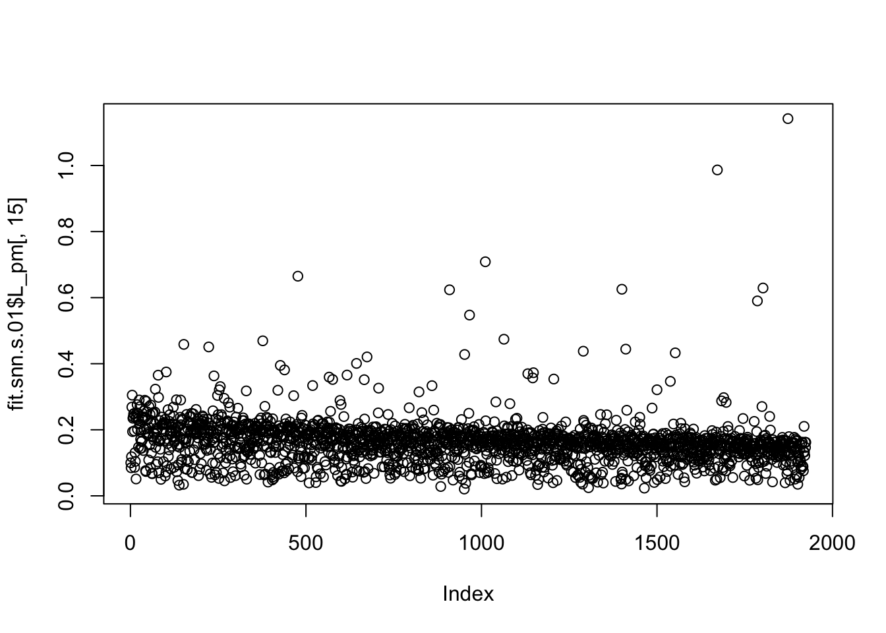
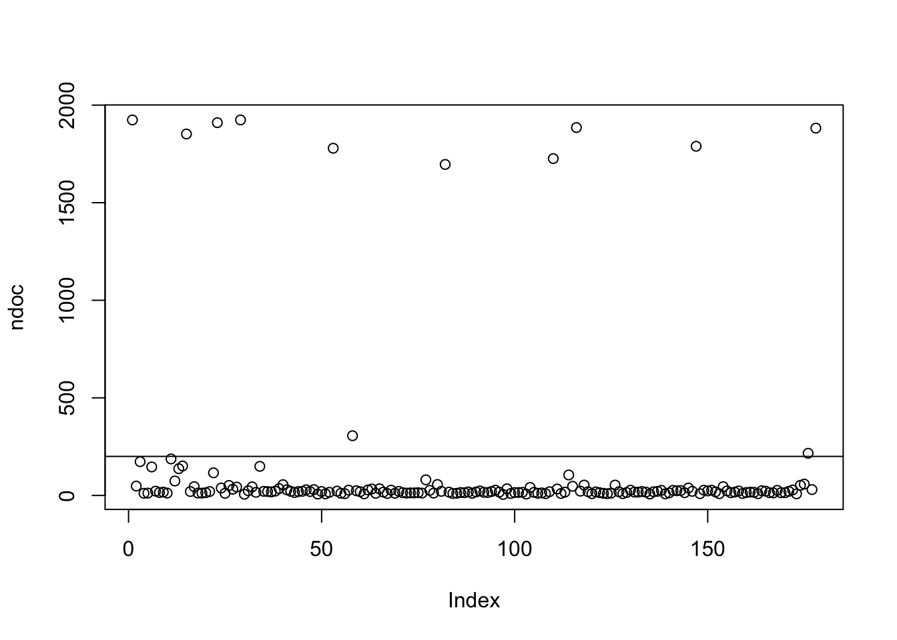
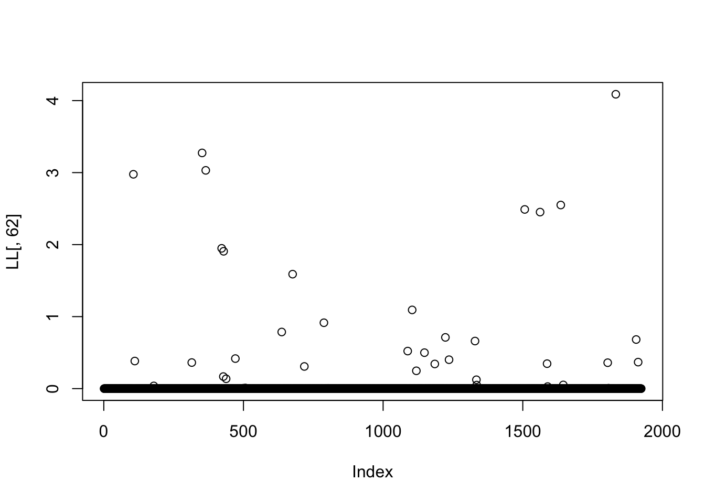
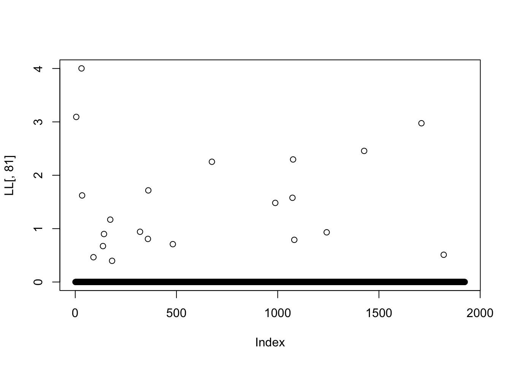
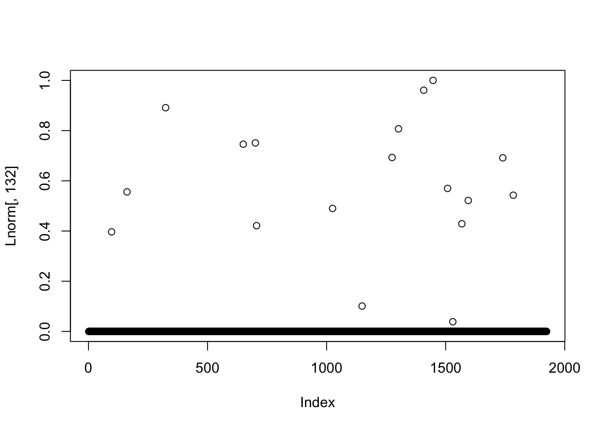
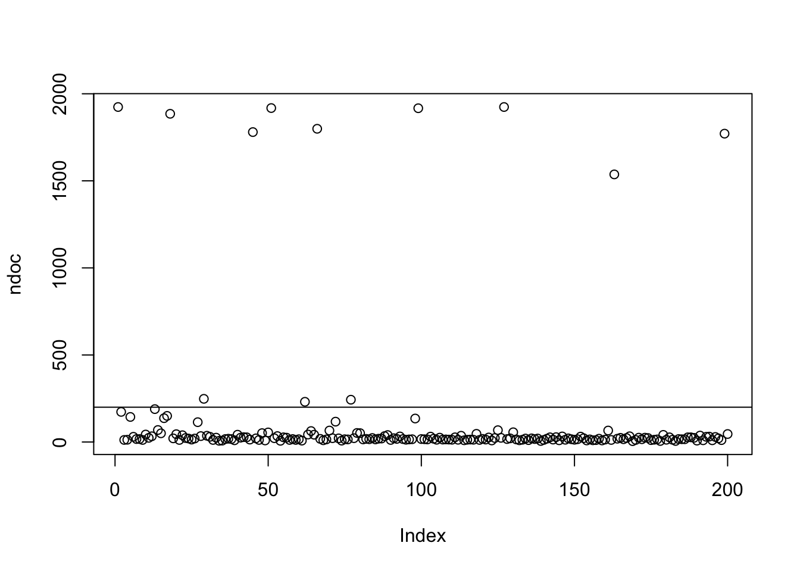
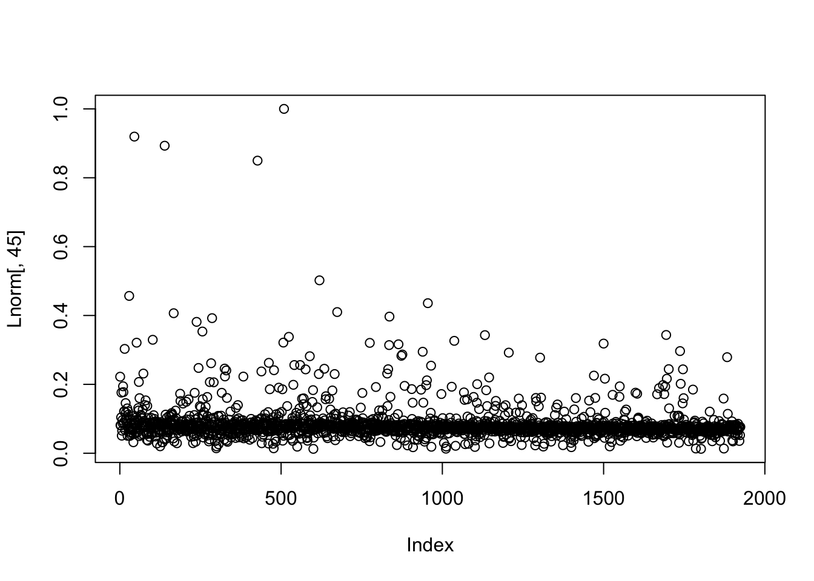
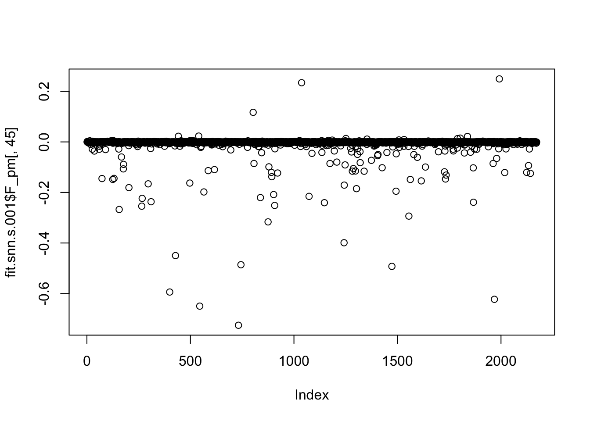

Last updated: 2023-11-10
Checks: 7 0
Knit directory: misc/analysis/
This reproducible R Markdown analysis was created with workflowr (version 1.7.0). The Checks tab describes the reproducibility checks that were applied when the results were created. The Past versions tab lists the development history.
Great! Since the R Markdown file has been committed to the Git repository, you know the exact version of the code that produced these results.
Great job! The global environment was empty. Objects defined in the global environment can affect the analysis in your R Markdown file in unknown ways. For reproduciblity it’s best to always run the code in an empty environment.
The command set.seed(1) was run prior to running the
code in the R Markdown file. Setting a seed ensures that any results
that rely on randomness, e.g. subsampling or permutations, are
reproducible.
Great job! Recording the operating system, R version, and package versions is critical for reproducibility.
Nice! There were no cached chunks for this analysis, so you can be confident that you successfully produced the results during this run.
Great job! Using relative paths to the files within your workflowr project makes it easier to run your code on other machines.
Great! You are using Git for version control. Tracking code development and connecting the code version to the results is critical for reproducibility.
The results in this page were generated with repository version 6adca46. See the Past versions tab to see a history of the changes made to the R Markdown and HTML files.
Note that you need to be careful to ensure that all relevant files for
the analysis have been committed to Git prior to generating the results
(you can use wflow_publish or
wflow_git_commit). workflowr only checks the R Markdown
file, but you know if there are other scripts or data files that it
depends on. Below is the status of the Git repository when the results
were generated:
Ignored files:
Ignored: .DS_Store
Ignored: .Rhistory
Ignored: .Rproj.user/
Ignored: analysis/.RData
Ignored: analysis/.Rhistory
Ignored: analysis/ALStruct_cache/
Ignored: data/.Rhistory
Ignored: data/methylation-data-for-matthew.rds
Ignored: data/pbmc/
Untracked files:
Untracked: .dropbox
Untracked: Icon
Untracked: analysis/GHstan.Rmd
Untracked: analysis/GTEX-cogaps.Rmd
Untracked: analysis/PACS.Rmd
Untracked: analysis/Rplot.png
Untracked: analysis/SPCAvRP.rmd
Untracked: analysis/admm_02.Rmd
Untracked: analysis/admm_03.Rmd
Untracked: analysis/cholesky.Rmd
Untracked: analysis/compare-transformed-models.Rmd
Untracked: analysis/cormotif.Rmd
Untracked: analysis/cp_ash.Rmd
Untracked: analysis/eQTL.perm.rand.pdf
Untracked: analysis/eb_prepilot.Rmd
Untracked: analysis/eb_var.Rmd
Untracked: analysis/ebpmf1.Rmd
Untracked: analysis/ebpmf_sla_text.Rmd
Untracked: analysis/ebspca_sims.Rmd
Untracked: analysis/explore_psvd.Rmd
Untracked: analysis/fa_check_identify.Rmd
Untracked: analysis/fa_iterative.Rmd
Untracked: analysis/flash_test_tree.Rmd
Untracked: analysis/flash_tree.Rmd
Untracked: analysis/flashier_newgroups.Rmd
Untracked: analysis/greedy_ebpmf_exploration_00.Rmd
Untracked: analysis/ieQTL.perm.rand.pdf
Untracked: analysis/lasso_em_03.Rmd
Untracked: analysis/m6amash.Rmd
Untracked: analysis/mash_bhat_z.Rmd
Untracked: analysis/mash_ieqtl_permutations.Rmd
Untracked: analysis/methylation_example.Rmd
Untracked: analysis/mixsqp.Rmd
Untracked: analysis/mr.ash_lasso_init.Rmd
Untracked: analysis/mr.mash.test.Rmd
Untracked: analysis/mr_ash_modular.Rmd
Untracked: analysis/mr_ash_parameterization.Rmd
Untracked: analysis/mr_ash_ridge.Rmd
Untracked: analysis/mv_gaussian_message_passing.Rmd
Untracked: analysis/nejm.Rmd
Untracked: analysis/nmf_bg.Rmd
Untracked: analysis/normal_conditional_on_r2.Rmd
Untracked: analysis/normalize.Rmd
Untracked: analysis/pbmc.Rmd
Untracked: analysis/pca_binary_weighted.Rmd
Untracked: analysis/pca_l1.Rmd
Untracked: analysis/poisson_nmf_approx.Rmd
Untracked: analysis/poisson_shrink.Rmd
Untracked: analysis/poisson_transform.Rmd
Untracked: analysis/pseudodata.Rmd
Untracked: analysis/qrnotes.txt
Untracked: analysis/ridge_iterative_02.Rmd
Untracked: analysis/ridge_iterative_splitting.Rmd
Untracked: analysis/samps/
Untracked: analysis/sc_bimodal.Rmd
Untracked: analysis/shrinkage_comparisons_changepoints.Rmd
Untracked: analysis/susie_en.Rmd
Untracked: analysis/susie_z_investigate.Rmd
Untracked: analysis/svd-timing.Rmd
Untracked: analysis/temp.RDS
Untracked: analysis/temp.Rmd
Untracked: analysis/test-figure/
Untracked: analysis/test.Rmd
Untracked: analysis/test.Rpres
Untracked: analysis/test.md
Untracked: analysis/test_qr.R
Untracked: analysis/test_sparse.Rmd
Untracked: analysis/tree_dist_top_eigenvector.Rmd
Untracked: analysis/z.txt
Untracked: code/multivariate_testfuncs.R
Untracked: code/rqb.hacked.R
Untracked: data/4matthew/
Untracked: data/4matthew2/
Untracked: data/E-MTAB-2805.processed.1/
Untracked: data/ENSG00000156738.Sim_Y2.RDS
Untracked: data/GDS5363_full.soft.gz
Untracked: data/GSE41265_allGenesTPM.txt
Untracked: data/Muscle_Skeletal.ACTN3.pm1Mb.RDS
Untracked: data/Thyroid.FMO2.pm1Mb.RDS
Untracked: data/bmass.HaemgenRBC2016.MAF01.Vs2.MergedDataSources.200kRanSubset.ChrBPMAFMarkerZScores.vs1.txt.gz
Untracked: data/bmass.HaemgenRBC2016.Vs2.NewSNPs.ZScores.hclust.vs1.txt
Untracked: data/bmass.HaemgenRBC2016.Vs2.PreviousSNPs.ZScores.hclust.vs1.txt
Untracked: data/eb_prepilot/
Untracked: data/finemap_data/fmo2.sim/b.txt
Untracked: data/finemap_data/fmo2.sim/dap_out.txt
Untracked: data/finemap_data/fmo2.sim/dap_out2.txt
Untracked: data/finemap_data/fmo2.sim/dap_out2_snp.txt
Untracked: data/finemap_data/fmo2.sim/dap_out_snp.txt
Untracked: data/finemap_data/fmo2.sim/data
Untracked: data/finemap_data/fmo2.sim/fmo2.sim.config
Untracked: data/finemap_data/fmo2.sim/fmo2.sim.k
Untracked: data/finemap_data/fmo2.sim/fmo2.sim.k4.config
Untracked: data/finemap_data/fmo2.sim/fmo2.sim.k4.snp
Untracked: data/finemap_data/fmo2.sim/fmo2.sim.ld
Untracked: data/finemap_data/fmo2.sim/fmo2.sim.snp
Untracked: data/finemap_data/fmo2.sim/fmo2.sim.z
Untracked: data/finemap_data/fmo2.sim/pos.txt
Untracked: data/logm.csv
Untracked: data/m.cd.RDS
Untracked: data/m.cdu.old.RDS
Untracked: data/m.new.cd.RDS
Untracked: data/m.old.cd.RDS
Untracked: data/mainbib.bib.old
Untracked: data/mat.csv
Untracked: data/mat.txt
Untracked: data/mat_new.csv
Untracked: data/matrix_lik.rds
Untracked: data/paintor_data/
Untracked: data/running_data_chris.csv
Untracked: data/running_data_matthew.csv
Untracked: data/temp.txt
Untracked: data/y.txt
Untracked: data/y_f.txt
Untracked: data/zscore_jointLCLs_m6AQTLs_susie_eQTLpruned.rds
Untracked: data/zscore_jointLCLs_random.rds
Untracked: explore_udi.R
Untracked: output/fit.k10.rds
Untracked: output/fit.nn.rds
Untracked: output/fit.nn.s.001.rds
Untracked: output/fit.nn.s.01.rds
Untracked: output/fit.nn.s.1.rds
Untracked: output/fit.nn.s.10.rds
Untracked: output/fit.snn.s.01.rds
Untracked: output/fit.varbvs.RDS
Untracked: output/glmnet.fit.RDS
Untracked: output/test.bv.txt
Untracked: output/test.gamma.txt
Untracked: output/test.hyp.txt
Untracked: output/test.log.txt
Untracked: output/test.param.txt
Untracked: output/test2.bv.txt
Untracked: output/test2.gamma.txt
Untracked: output/test2.hyp.txt
Untracked: output/test2.log.txt
Untracked: output/test2.param.txt
Untracked: output/test3.bv.txt
Untracked: output/test3.gamma.txt
Untracked: output/test3.hyp.txt
Untracked: output/test3.log.txt
Untracked: output/test3.param.txt
Untracked: output/test4.bv.txt
Untracked: output/test4.gamma.txt
Untracked: output/test4.hyp.txt
Untracked: output/test4.log.txt
Untracked: output/test4.param.txt
Untracked: output/test5.bv.txt
Untracked: output/test5.gamma.txt
Untracked: output/test5.hyp.txt
Untracked: output/test5.log.txt
Untracked: output/test5.param.txt
Unstaged changes:
Modified: .gitignore
Modified: analysis/flashier_log1p.Rmd
Modified: analysis/flashier_sla_text.Rmd
Modified: analysis/mr_ash_pen.Rmd
Modified: analysis/susie_flash.Rmd
Note that any generated files, e.g. HTML, png, CSS, etc., are not included in this status report because it is ok for generated content to have uncommitted changes.
These are the previous versions of the repository in which changes were
made to the R Markdown
(analysis/flashier_sla_point_laplace.Rmd) and HTML
(docs/flashier_sla_point_laplace.html) files. If you’ve
configured a remote Git repository (see ?wflow_git_remote),
click on the hyperlinks in the table below to view the files as they
were in that past version.
| File | Version | Author | Date | Message |
|---|---|---|---|---|
| Rmd | 6adca46 | Matthew Stephens | 2023-11-10 | workflowr::wflow_publish("flashier_sla_point_laplace.Rmd") |
I want to try running flashier semi-NMF (point-exponential on L, point Laplace on F) on the text data to see how it differs from flashier NMF.
library(Matrix)
library(readr)
library(tm)Loading required package: NLPlibrary(fastTopics)
library(flashier)Loading required package: ebnmLoading required package: magrittrLoading required package: ggplot2
Attaching package: 'ggplot2'The following object is masked from 'package:NLP':
annotatelibrary(ebpmf)
library(RcppML)RcppML v0.5.5 using 'options(RcppML.threads = 0)' (all available threads), 'options(RcppML.verbose = FALSE)'sla <- read_csv("../../gsmash/data/SLA/SCC2016/Data/paperList.txt")Rows: 3248 Columns: 5── Column specification ────────────────────────────────────────────────────────
Delimiter: ","
chr (3): DOI, title, abstract
dbl (2): year, citCounts
ℹ Use `spec()` to retrieve the full column specification for this data.
ℹ Specify the column types or set `show_col_types = FALSE` to quiet this message.sla <- sla[!is.na(sla$abstract),]
sla$docnum = 1:nrow(sla)
datax = readRDS('../../gsmash/data/sla_full.rds')
dim(datax$data)[1] 3207 10104sum(datax$data==0)/prod(dim(datax$data))[1] 0.9948157datax$data = Matrix(datax$data,sparse = TRUE)filter out some documents: use top 60% longest ones as in Ke and Wang 2022.
doc_to_use = order(rowSums(datax$data),decreasing = T)[1:round(nrow(datax$data)*0.6)]
mat = datax$data[doc_to_use,]
sla = sla[doc_to_use,]
samples = datax$samples
samples = lapply(samples, function(z){z[doc_to_use]})Filter out words that appear in less than 5 documents. Note: if you don’t do this you can still get real factors that capture very rare words co-occuring. Eg two authors that are cited together. If you are interested in those factors, no need to filter…
word_to_use = which(colSums(mat>0)>4)
mat = mat[,word_to_use]
mat = Matrix(mat,sparse=TRUE)Compute log-normalized data with different pseudocounts.
lmat = Matrix(log(mat+1),sparse=TRUE)
docsize = rowSums(mat)
s = docsize/mean(docsize)
lmat_s_10 = Matrix(log(0.1*mat/s+1),sparse=TRUE)
lmat_s_1 = Matrix(log(mat/s+1),sparse=TRUE)
lmat_s_01 = Matrix(log(10*mat/s+1),sparse=TRUE)
lmat_s_001 = Matrix(log(100*mat/s+1),sparse=TRUE)Compute S0 values (min Tau).
mhat = 4/nrow(lmat)
xx = rpois(1e7,mhat) # random poisson
S10 = sd(log(0.1*xx+1))
S1 = sd(log(xx+1)) # sd of log(X+1)
S01 = sd(log(10*xx+1)) # sd if log(10X+1)
S001 = sd(log(100*xx+1)) # sd if log(10X+1)
print(c(S10,S1,S01,S001))[1] 0.004339581 0.031536221 0.109033434 0.209811829I’ll start with pseudocount 0.1 and 0.01.
set.seed(1)
fit.snn.s.01 = flash(lmat_s_01,ebnm_fn = c(ebnm::ebnm_point_exponential,ebnm::ebnm_point_laplace),var_type=2,greedy_Kmax = 200, S=S01)Adding factor 1 to flash object...
Adding factor 2 to flash object...
Adding factor 3 to flash object...
Adding factor 4 to flash object...
Adding factor 5 to flash object...
Adding factor 6 to flash object...
Adding factor 7 to flash object...
Adding factor 8 to flash object...
Adding factor 9 to flash object...
Adding factor 10 to flash object...
Adding factor 11 to flash object...
Adding factor 12 to flash object...
Adding factor 13 to flash object...
Adding factor 14 to flash object...
Adding factor 15 to flash object...
Adding factor 16 to flash object...
Adding factor 17 to flash object...
Adding factor 18 to flash object...
Adding factor 19 to flash object...
Adding factor 20 to flash object...
Adding factor 21 to flash object...
Adding factor 22 to flash object...
Adding factor 23 to flash object...
Adding factor 24 to flash object...
Adding factor 25 to flash object...
Adding factor 26 to flash object...
Adding factor 27 to flash object...
Adding factor 28 to flash object...
Adding factor 29 to flash object...
Adding factor 30 to flash object...
Adding factor 31 to flash object...
Adding factor 32 to flash object...
Adding factor 33 to flash object...
Adding factor 34 to flash object...
Adding factor 35 to flash object...
Adding factor 36 to flash object...
Adding factor 37 to flash object...
Adding factor 38 to flash object...
Adding factor 39 to flash object...
Adding factor 40 to flash object...
Adding factor 41 to flash object...
Adding factor 42 to flash object...
Adding factor 43 to flash object...
Adding factor 44 to flash object...
Adding factor 45 to flash object...
Adding factor 46 to flash object...
Adding factor 47 to flash object...
Adding factor 48 to flash object...
Adding factor 49 to flash object...
Adding factor 50 to flash object...
Adding factor 51 to flash object...
Adding factor 52 to flash object...
Adding factor 53 to flash object...
Adding factor 54 to flash object...
Adding factor 55 to flash object...
Adding factor 56 to flash object...
Adding factor 57 to flash object...
Adding factor 58 to flash object...
Adding factor 59 to flash object...
Adding factor 60 to flash object...
Adding factor 61 to flash object...
Adding factor 62 to flash object...
Adding factor 63 to flash object...
Adding factor 64 to flash object...
Adding factor 65 to flash object...
Adding factor 66 to flash object...
Adding factor 67 to flash object...
Adding factor 68 to flash object...
Adding factor 69 to flash object...
Adding factor 70 to flash object...
Adding factor 71 to flash object...
Adding factor 72 to flash object...
Adding factor 73 to flash object...
Adding factor 74 to flash object...
Adding factor 75 to flash object...
Adding factor 76 to flash object...
Adding factor 77 to flash object...
Adding factor 78 to flash object...
Adding factor 79 to flash object...
Adding factor 80 to flash object...
Adding factor 81 to flash object...
Adding factor 82 to flash object...
Adding factor 83 to flash object...
Adding factor 84 to flash object...
Adding factor 85 to flash object...
Adding factor 86 to flash object...
Adding factor 87 to flash object...
Adding factor 88 to flash object...
Adding factor 89 to flash object...
Adding factor 90 to flash object...
Adding factor 91 to flash object...
Adding factor 92 to flash object...
Adding factor 93 to flash object...
Adding factor 94 to flash object...
Adding factor 95 to flash object...
Adding factor 96 to flash object...
Adding factor 97 to flash object...
Adding factor 98 to flash object...
Adding factor 99 to flash object...
Adding factor 100 to flash object...
Adding factor 101 to flash object...
Adding factor 102 to flash object...
Adding factor 103 to flash object...
Adding factor 104 to flash object...
Adding factor 105 to flash object...
Adding factor 106 to flash object...
Adding factor 107 to flash object...
Adding factor 108 to flash object...
Adding factor 109 to flash object...
Adding factor 110 to flash object...
Adding factor 111 to flash object...
Adding factor 112 to flash object...
Adding factor 113 to flash object...
Adding factor 114 to flash object...
Adding factor 115 to flash object...
Adding factor 116 to flash object...
Adding factor 117 to flash object...
Adding factor 118 to flash object...
Adding factor 119 to flash object...
Adding factor 120 to flash object...
Adding factor 121 to flash object...
Adding factor 122 to flash object...
Adding factor 123 to flash object...
Adding factor 124 to flash object...
Adding factor 125 to flash object...
Adding factor 126 to flash object...
Adding factor 127 to flash object...
Adding factor 128 to flash object...
Adding factor 129 to flash object...
Adding factor 130 to flash object...
Adding factor 131 to flash object...
Adding factor 132 to flash object...
Adding factor 133 to flash object...
Adding factor 134 to flash object...
Adding factor 135 to flash object...
Adding factor 136 to flash object...
Adding factor 137 to flash object...
Adding factor 138 to flash object...
Adding factor 139 to flash object...
Adding factor 140 to flash object...
Adding factor 141 to flash object...
Adding factor 142 to flash object...
Adding factor 143 to flash object...
Adding factor 144 to flash object...
Adding factor 145 to flash object...
Adding factor 146 to flash object...
Adding factor 147 to flash object...
Adding factor 148 to flash object...
Adding factor 149 to flash object...
Adding factor 150 to flash object...
Adding factor 151 to flash object...
Adding factor 152 to flash object...
Adding factor 153 to flash object...
Adding factor 154 to flash object...
Adding factor 155 to flash object...
Adding factor 156 to flash object...
Adding factor 157 to flash object...
Adding factor 158 to flash object...
Adding factor 159 to flash object...
Adding factor 160 to flash object...
Adding factor 161 to flash object...
Adding factor 162 to flash object...
Adding factor 163 to flash object...
Adding factor 164 to flash object...
Adding factor 165 to flash object...
Adding factor 166 to flash object...
Adding factor 167 to flash object...
Adding factor 168 to flash object...
Adding factor 169 to flash object...
Adding factor 170 to flash object...
Adding factor 171 to flash object...
Adding factor 172 to flash object...
Adding factor 173 to flash object...
Adding factor 174 to flash object...
Adding factor 175 to flash object...
Adding factor 176 to flash object...
Adding factor 177 to flash object...
Adding factor 178 to flash object...
Adding factor 179 to flash object...
Factor doesn't significantly increase objective and won't be added.
Wrapping up...
Done.
Nullchecking 178 factors...
Done.saveRDS(fit.snn.s.01,file='../output/fit.snn.s.01.rds')
set.seed(1)
fit.snn.s.001 = flash(lmat_s_001,ebnm_fn = c(ebnm::ebnm_point_exponential,ebnm::ebnm_point_laplace),var_type=2,greedy_Kmax = 200, S=S001)Adding factor 1 to flash object...
Adding factor 2 to flash object...
Adding factor 3 to flash object...
Adding factor 4 to flash object...
Adding factor 5 to flash object...
Adding factor 6 to flash object...
Adding factor 7 to flash object...
Adding factor 8 to flash object...
Adding factor 9 to flash object...
Adding factor 10 to flash object...
Adding factor 11 to flash object...
Adding factor 12 to flash object...
Adding factor 13 to flash object...
Adding factor 14 to flash object...
Adding factor 15 to flash object...
Adding factor 16 to flash object...
Adding factor 17 to flash object...
Adding factor 18 to flash object...
Adding factor 19 to flash object...
Adding factor 20 to flash object...
Adding factor 21 to flash object...
Adding factor 22 to flash object...
Adding factor 23 to flash object...
Adding factor 24 to flash object...
Adding factor 25 to flash object...
Adding factor 26 to flash object...
Adding factor 27 to flash object...
Adding factor 28 to flash object...
Adding factor 29 to flash object...
Adding factor 30 to flash object...
Adding factor 31 to flash object...
Adding factor 32 to flash object...
Adding factor 33 to flash object...
Adding factor 34 to flash object...
Adding factor 35 to flash object...
Adding factor 36 to flash object...
Adding factor 37 to flash object...
Adding factor 38 to flash object...
Adding factor 39 to flash object...
Adding factor 40 to flash object...
Adding factor 41 to flash object...
Adding factor 42 to flash object...
Adding factor 43 to flash object...
Adding factor 44 to flash object...
Adding factor 45 to flash object...
Adding factor 46 to flash object...
Adding factor 47 to flash object...
Adding factor 48 to flash object...
Adding factor 49 to flash object...
Adding factor 50 to flash object...
Adding factor 51 to flash object...
Adding factor 52 to flash object...
Adding factor 53 to flash object...
Adding factor 54 to flash object...
Adding factor 55 to flash object...
Adding factor 56 to flash object...
Adding factor 57 to flash object...
Adding factor 58 to flash object...
Adding factor 59 to flash object...
Adding factor 60 to flash object...
Adding factor 61 to flash object...
Adding factor 62 to flash object...
Adding factor 63 to flash object...
Adding factor 64 to flash object...
Adding factor 65 to flash object...
Adding factor 66 to flash object...
Adding factor 67 to flash object...
Adding factor 68 to flash object...
Adding factor 69 to flash object...
Adding factor 70 to flash object...
Adding factor 71 to flash object...
Adding factor 72 to flash object...
Adding factor 73 to flash object...
Adding factor 74 to flash object...
Adding factor 75 to flash object...
Adding factor 76 to flash object...
Adding factor 77 to flash object...
Adding factor 78 to flash object...
Adding factor 79 to flash object...
Adding factor 80 to flash object...
Adding factor 81 to flash object...
Adding factor 82 to flash object...
Adding factor 83 to flash object...
Adding factor 84 to flash object...
Adding factor 85 to flash object...
Adding factor 86 to flash object...
Adding factor 87 to flash object...
Adding factor 88 to flash object...
Adding factor 89 to flash object...
Adding factor 90 to flash object...
Adding factor 91 to flash object...
Adding factor 92 to flash object...
Adding factor 93 to flash object...
Adding factor 94 to flash object...
Adding factor 95 to flash object...
Adding factor 96 to flash object...
Adding factor 97 to flash object...
Adding factor 98 to flash object...
Adding factor 99 to flash object...
Adding factor 100 to flash object...
Adding factor 101 to flash object...
Adding factor 102 to flash object...
Adding factor 103 to flash object...
Adding factor 104 to flash object...
Adding factor 105 to flash object...
Adding factor 106 to flash object...
Adding factor 107 to flash object...
Adding factor 108 to flash object...
Adding factor 109 to flash object...
Adding factor 110 to flash object...
Adding factor 111 to flash object...
Adding factor 112 to flash object...
Adding factor 113 to flash object...
Adding factor 114 to flash object...
Adding factor 115 to flash object...
Adding factor 116 to flash object...
Adding factor 117 to flash object...
Adding factor 118 to flash object...
Adding factor 119 to flash object...
Adding factor 120 to flash object...
Adding factor 121 to flash object...
Adding factor 122 to flash object...
Adding factor 123 to flash object...
Adding factor 124 to flash object...
Adding factor 125 to flash object...
Adding factor 126 to flash object...
Adding factor 127 to flash object...
Adding factor 128 to flash object...
Adding factor 129 to flash object...
Adding factor 130 to flash object...
Adding factor 131 to flash object...
Adding factor 132 to flash object...
Adding factor 133 to flash object...
Adding factor 134 to flash object...
Adding factor 135 to flash object...
Adding factor 136 to flash object...
Adding factor 137 to flash object...
Adding factor 138 to flash object...
Adding factor 139 to flash object...
Adding factor 140 to flash object...
Adding factor 141 to flash object...
Adding factor 142 to flash object...
Adding factor 143 to flash object...
Adding factor 144 to flash object...
Adding factor 145 to flash object...
Adding factor 146 to flash object...
Adding factor 147 to flash object...
Adding factor 148 to flash object...
Adding factor 149 to flash object...
Adding factor 150 to flash object...
Adding factor 151 to flash object...
Adding factor 152 to flash object...
Adding factor 153 to flash object...
Adding factor 154 to flash object...
Adding factor 155 to flash object...
Adding factor 156 to flash object...
Adding factor 157 to flash object...
Adding factor 158 to flash object...
Adding factor 159 to flash object...
Adding factor 160 to flash object...
Adding factor 161 to flash object...
Adding factor 162 to flash object...
Adding factor 163 to flash object...
Adding factor 164 to flash object...
Adding factor 165 to flash object...
Adding factor 166 to flash object...
Adding factor 167 to flash object...
Adding factor 168 to flash object...
Adding factor 169 to flash object...
Adding factor 170 to flash object...
Adding factor 171 to flash object...
Adding factor 172 to flash object...
Adding factor 173 to flash object...
Adding factor 174 to flash object...
Adding factor 175 to flash object...
Adding factor 176 to flash object...
Adding factor 177 to flash object...
Adding factor 178 to flash object...
Adding factor 179 to flash object...
Adding factor 180 to flash object...
Adding factor 181 to flash object...
Adding factor 182 to flash object...
Adding factor 183 to flash object...
Adding factor 184 to flash object...
Adding factor 185 to flash object...
Adding factor 186 to flash object...
Adding factor 187 to flash object...
Adding factor 188 to flash object...
Adding factor 189 to flash object...
Adding factor 190 to flash object...
Adding factor 191 to flash object...
Adding factor 192 to flash object...
Adding factor 193 to flash object...
Adding factor 194 to flash object...
Adding factor 195 to flash object...
Adding factor 196 to flash object...
Adding factor 197 to flash object...
Adding factor 198 to flash object...
Adding factor 199 to flash object...
Adding factor 200 to flash object...
Wrapping up...
Done.
Nullchecking 200 factors...
Done.saveRDS(fit.snn.s.001,file='../output/fit.snn.s.001.rds')Look at the keywords for each factor. I also look at the “negative” keywords - those that are depleted in each factor.
# sets keywords to NA if number of document membership
# in the factor does not exceeed docfilter
# set neg=TRUE to recover "depleted" words (when F can be negative as in
# semi-NMF)
get_keywords = function(fit,thresh = 2,docfilter=0,neg=FALSE){
if("flash" %in% class(fit)){
LL <- fit$L_pm
FF = fit$F_pm
}
if("nmf" %in% class(fit)){ # deals with RcppML::nmf fit
LL = fit@w
FF = t(fit@d*fit@h)
}
rownames(LL)<-1:nrow(LL)
Lnorm = t(t(LL)/apply(LL,2,max))
Fnorm = t(t(FF)*apply(LL,2,max))
khat = apply(Lnorm,1,which.max)
Lmax = apply(Lnorm,1,max)
khat[Lmax<0.1] = 0
keyw.nn =list()
for(k in 1:ncol(Fnorm)){
if(sum(Lnorm[,k]>0.5)> docfilter){
key = Fnorm[,k]>log(thresh)
if(neg){
key = Fnorm[,k]< -log(thresh)
}
keyw.nn[[k]] = (colnames(mat)[key])[order(Fnorm[key,k],decreasing = T)]
} else {
keyw.nn[[k]] = NA
}
}
return(keyw.nn)
}
kw = get_keywords(fit.snn.s.01,docfilter = 1)
kw.neg = get_keywords(fit.snn.s.01,neg=TRUE,docfilter=1)
kw[[1]]
[1] "model" "estim" "data" "method" "propos"
[6] "studi" "simul" "distribut" "function" "sampl"
[11] "paramet" "approach" "statist" "base" "asymptot"
[16] "problem" "general" "regress" "analysi" "test"
[21] "develop" "procedur" "perform" "illustr" "condit"
[26] "set" "applic" "observ" "variabl" "likelihood"
[31] "consist" "time" "appli" "covari" "properti"
[36] "random" "comput" "articl" "linear" "case"
[41] "process" "infer" "error" "select" "number"
[46] "effici" "rate" "nonparametr" "deriv" "measur"
[51] "effect" "algorithm" "class" "paper" "compar"
[56] "provid" "includ" "depend"
[[2]]
[1] "treatment" "random" "trial" "patient" "effect"
[6] "assign" "noncompli" "assumpt" "outcom" "complianc"
[11] "causal" "adher" "depress" "placebo" "receiv"
[16] "care" "subject" "clinic" "intervent" "drug"
[21] "arm" "improv" "dose" "primari" "treat"
[26] "princip" "latent" "analys" "elder" "sever"
[31] "contrast" "instrument" "stratif" "particip" "activ"
[36] "control" "prevent" "physician" "benefit" "potenti"
[41] "imperfect" "encourag" "children" "estimand" "framework"
[46] "strata"
[[3]]
[1] "surviv" "time" "hazard" "censor" "failur"
[6] "studi" "event" "semiparametr" "proport" "cancer"
[11] "data" "covari" "estim" "risk" "cox"
[16] "baselin" "regress" "illustr" "cumul" "trial"
[21] "rightcensor"
[[4]]
[1] "simex" "simulationextrapol" "measur"
[4] "error" "undersmooth" "longer"
[7] "finitesampl" "principl" "accuraci"
[10] "asymptot" "selector" "wang"
[13] "rootn"
[[5]]
[1] "wilk" "ratio" "phenomenon" "correct" "relax"
[6] "conduct" "null" "newli" "unspecifi" "freedom"
[11] "follow" "chisquar" "backfit" "degre" "ask"
[16] "nuisanc" "test" "power" "hypothesi" "admit"
[21] "theorem" "attempt" "rescal" "biascorrect" "zhang"
[[6]]
[1] "select" "lasso" "spars" "penalti"
[5] "penal" "oracl" "variabl" "sparsiti"
[9] "coeffici" "regress" "matrix" "highdimension"
[13] "regular" "adapt" "nonzero" "properti"
[17] "linear" "vector" "norm" "size"
[21] "estim" "squar" "problem" "optim"
[25] "true" "nois" "larger" "perform"
[29] "absolut" "bound" "number" "converg"
[33] "shrinkag" "selector"
[[7]]
[1] "rankbas" "asymptot" "effici" "rank" "ellipt" "cam"
[7] "class" "densiti" "uniform" "normal" "test" "version"
[13] "sign" "multivari" "matric" "symmetri" "valid" "scatter"
[19] "ann" "finit" "contour" "tradit" "sens" "irrespect"
[25] "rootn" "center"
[[8]]
[1] "mle" "maximum" "likelihood" "main" "prove"
[6] "mles" "asymptot" "limit" "converg" "status"
[11] "current" "brownian" "motion" "behavior" "proof"
[16] "uniqu"
[[9]]
[1] "nconsist" "root" "reduct" "dimens" "exist" "direct"
[7] "central" "slice" "exhaust" "contour" "ellipt" "advantag"
[13] "mild" "strong" "suffici" "identif"
[[10]]
[1] "varyingcoeffici" "nonparametr" "coeffici" "linear"
[5] "longitudin" "conduct" "vari"
[[11]]
[1] "semiparametr" "estim" "nonparametr" "parametr" "model"
[6] "paramet" "asymptot" "effici" "likelihood" "function"
[11] "regress"
[[12]]
[1] "fals" "control" "procedur" "test" "rate"
[6] "discoveri" "reject" "hypothes" "multipl" "null"
[11] "pvalu" "fdr" "number" "hochberg" "stepdown"
[16] "kfwer" "familywis" "error" "depend" "benjamini"
[21] "proport" "fwer" "statist" "fdp" "soc"
[26] "divid" "power" "roy" "stepup" "alpha"
[31] "deriv" "abil" "ser" "detect" "individu"
[36] "hypothesi" "gamma" "total" "conserv" "toler"
[41] "defin" "attent" "singlestep" "construct" "fix"
[46] "simultan" "ann" "independ" "probabl" "usual"
[51] "sime"
[[13]]
[1] "null" "test" "hypothesi" "distribut" "altern" "statist"
[7] "hypothes" "power" "asymptot"
[[14]]
[1] "chain" "markov" "mont" "carlo" "bayesian" "algorithm"
[7] "posterior" "infer" "prior" "model" "mcmc"
[[15]]
character(0)
[[16]]
[1] "memori" "seri" "differenc" "longmemori"
[5] "long" "taper" "frequenc" "fraction"
[9] "local" "averag" "depend" "periodogram"
[13] "stationari" "move" "whittl" "slowli"
[17] "eigenvector" "paramet" "nonstationari" "distinct"
[21] "angl"
[[17]]
[1] "bandwidth" "kernel" "local" "select" "smooth"
[6] "densiti" "estim" "crossvalid" "selector" "polynomi"
[[18]]
[1] "garch" "process" "seri" "volatil"
[5] "stationari" "paper" "heteroscedast" "moment"
[9] "autoregress" "financi" "condit" "mont"
[13] "carlo" "innov" "sequenc" "standard"
[17] "satisfi" "move" "local" "iid"
[21] "root" "averag"
[[19]]
[1] "homoscedast" "heteroscedast" "varianc" "transform"
[[20]]
[1] NA
[[21]]
[1] "nonnorm" "normal" "mix" "exponenti" "linear"
[[22]]
[1] "confid" "interv" "construct" "coverag" "bootstrap" "region"
[[23]]
character(0)
[[24]]
[1] "wavelet" "adapt" "besov" "minimax" "ball"
[6] "threshold" "rang" "nois" "wide" "unknown"
[11] "risk" "rate" "smooth" "deconvolut" "bound"
[16] "signal" "function" "white" "problem" "transform"
[21] "gaussian" "shape" "recov" "view" "noisi"
[26] "discret" "densiti" "converg" "nearoptim" "blur"
[31] "fourier" "decay" "upper" "convolut"
[[25]]
[1] "onestep" "comput" "outlier" "iter" "penal" "step"
[[26]]
[1] "polynomi" "local" "regress" "smooth" "nonparametr"
[[27]]
[1] "bar" "vertic" "cap" "lambda" "beta" "theta"
[[28]]
[1] "upper" "bound" "lower" "deriv" "risk"
[[29]]
character(0)
[[30]]
[1] "jackknif" "mix" "varianc" "area" "squar" "inconsist"
[7] "uncondit" "replic" "strata"
[[31]]
[1] "administr" "fda" "secondari" "endpoint"
[5] "drug" "efficaci" "food" "health"
[9] "combin" "record" "agent" "trial"
[13] "benefit" "primari" "databas" "path"
[17] "clinic" "prevent" "cardiovascular" "separ"
[21] "make" "report" "perspect" "adjust"
[25] "simplifi" "safeti" "maintain"
[[32]]
[1] "forecast" "predict" "weather" "spatial" "wind"
[6] "probabilist" "northwest" "calibr" "pacif" "meteorolog"
[11] "speed" "temperatur" "hour" "energi" "atmospher"
[16] "ensembl" "averag" "geostatist" "futur" "precipit"
[21] "center" "north" "event" "accur" "tempor"
[26] "daili" "resourc" "site" "american" "state"
[31] "sharp" "spacetim" "qualiti" "climat" "ozon"
[36] "concentr" "transport" "regim" "generat" "season"
[41] "shortterm" "input" "determinist" "trend"
[[33]]
[1] "elect" "vote" "poll" "evid" "candid"
[6] "presidenti" "polit" "count" "station" "proport"
[11] "forecast" "prefer" "counti"
[[34]]
[1] "health" "survey" "nation" "unit" "year" "individu"
[7] "public" "sensit" "polici" "state" "level" "mortal"
[13] "popul" "person" "agenc" "protect" "assess" "report"
[[35]]
[1] "nonrespons" "survey" "respons" "valu" "nonignor"
[6] "imput" "miss" "varianc" "weight" "nonrespond"
[11] "respond" "probabl" "mechan" "requir" "adjust"
[16] "variabl" "calibr" "sampl"
[[36]]
[1] NA
[[37]]
[1] "toxic" "dose" "trial" "dosefind" "phase"
[6] "clinic" "target" "design" "probabl" "escal"
[11] "assign" "patient" "reassess" "continu" "ethic"
[16] "prespecifi" "common" "concern" "enhanc" "robust"
[21] "parallel" "overcom" "coher" "previous" "competit"
[26] "variant"
[[38]]
[1] "pathway" "biolog" "pattern" "viral" "human"
[6] "gene" "infect" "presenc" "latent" "virus"
[11] "genet" "mutat" "therapi" "drug" "immunodefici"
[16] "understand" "resist" "biomark" "protein" "initi"
[21] "sequenc"
[[39]]
[1] NA
[[40]]
[1] "finitesampl" "propos" "properti" "simul"
[[41]]
[1] NA
[[42]]
[1] NA
[[43]]
[1] "divis" "rank" "competit" "potenti" "attribut"
[6] "member" "men" "percentag" "system" "modif"
[11] "modifi" "poll" "race" "record" "notabl"
[16] "circumv" "defici" "nation" "run" "comprehens"
[21] "verifi" "season" "appropri" "way" "socal"
[26] "fan" "controversi" "elimin" "univers" "resembl"
[31] "rapid" "crossov" "permut" "rich"
[[44]]
[1] "climat" "chang" "temperatur" "greenhous" "global"
[6] "earth" "trend" "uncertainti" "atmospher" "northern"
[11] "quantifi" "reconstruct" "increas" "separ" "futur"
[[45]]
[1] "motif" "gene" "regul" "sequenc" "transcript"
[6] "bind" "dna" "protein" "cluster" "factor"
[11] "discoveri" "nucleotid" "conserv" "short" "high"
[16] "call" "pattern" "dirichlet" "biolog" "site"
[21] "vari" "width" "priori" "mixtur" "genom"
[26] "process" "cell" "databas" "strategi" "hierarch"
[31] "delet" "organ" "similar" "gibb" "switch"
[36] "technolog" "repres" "refin" "aid" "substant"
[41] "segment" "matric" "generat" "core" "regulatori"
[46] "live"
[[46]]
[1] "treatment" "assign" "promot" "grade" "school"
[6] "causal" "outcom" "score" "student" "propens"
[11] "averag" "polici" "regim" "children" "retain"
[16] "rubin" "potenti" "stage" "stratif" "block"
[21] "child" "summar" "intermedi" "pretreat" "plausibl"
[26] "posttreat" "stabl" "fewer" "mathemat" "balanc"
[31] "multilevel" "track" "scalar" "evid" "learn"
[36] "twostag" "confound" "program" "consid" "perspect"
[41] "econom" "educ"
[[47]]
[1] "vaccin" "infect" "transmiss" "outcom" "efficaci"
[6] "individu" "infecti" "suscept" "reduc" "diseas"
[11] "causal" "relat" "virus" "assign" "trial"
[16] "protect" "outbreak" "hiv" "prevent" "attack"
[21] "household" "estimand" "proport" "immun" "event"
[26] "human" "syndrom" "immunodefici"
[[48]]
[1] NA
[[49]]
[1] "earn" "interview" "employ" "document" "person"
[6] "peopl" "weak" "encourag" "ratio" "total"
[11] "incom" "subsequ" "enabl" "instrument" "educ"
[16] "analys" "accept" "ideal" "train"
[[50]]
[1] "agenc" "releas" "alter" "public" "origin"
[6] "record" "link" "current" "protect" "combin"
[11] "identif" "dataset" "databas" "entir" "describ"
[16] "relationship" "law" "tailor" "difficult" "possess"
[21] "user" "extern" "confidenti" "distort" "replac"
[26] "constitut" "fail" "threat" "compet" "synthes"
[31] "data"
[[51]]
[1] "mother" "infant" "sensit" "air"
[5] "closur" "factor" "action" "negat"
[9] "differ" "qualiti" "respiratori" "allevi"
[13] "notabl" "mixedeffect" "code" "particl"
[17] "mass" "overcom" "birth" "recurr"
[21] "incid" "insensit" "hospit" "concentr"
[25] "twostag" "likelihoodbas" "pollut" "unmeasur"
[29] "abrupt" "affect" "split" "risk"
[33] "children" "monitor" "plan" "understand"
[37] "consequ" "citi"
[[52]]
[1] "stop" "racial" "sequenti" "rule" "traffic" "fals"
[7] "depart" "york" "substanti" "adjust" "benchmark"
[[53]]
character(0)
[[54]]
[1] "thin" "process" "fit" "spatial"
[5] "intens" "residu" "point" "earthquak"
[9] "spacetim" "california" "poisson" "year"
[13] "occurr" "multidimension" "separ" "sequenc"
[17] "origin" "appear" "stationari" "background"
[21] "activ" "hazard" "anisotrop" "rescal"
[25] "contrast" "homogen" "magnitud" "irregular"
[29] "bear" "insid" "inhomogen" "event"
[33] "highlight" "govern" "coordin" "secondari"
[37] "modif" "firstord" "season" "occur"
[41] "secondord"
[[55]]
[1] "seem" "unrel" "spline" "correl"
[5] "neglig" "nongaussian" "credit" "dataadapt"
[9] "allevi" "knot" "leav" "reversiblejump"
[13] "vehicl" "part" "genotyp" "wang"
[17] "withinclust" "conveni" "retail" "smallest"
[[56]]
[1] "extrapol" "classic" "correct" "air" "errorpron"
[6] "subsampl" "spheric" "multiscal" "baselin" "replic"
[11] "temperatur" "instrument" "daili" "summari" "scatter"
[16] "bias" "surfac" "posttreat"
[[57]]
[1] "misspecifi" "robust"
[[58]]
[1] "asymptot" "normal" "estim" "consist" "establish"
[6] "varianc" "coeffici" "paramet" "function" "simul"
[11] "propos" "finit" "regress" "likelihood" "linear"
[16] "illustr" "quantil" "maximum" "equat"
[[59]]
[1] "wishart" "graph" "cone" "famili" "graphic"
[6] "matric" "conjug" "prior" "paramet" "gaussian"
[11] "covari" "matrix" "decompos" "edg" "definit"
[16] "homogen" "shape" "correspond" "invers" "paper"
[21] "ann" "posit" "standard" "equal" "respect"
[26] "zero" "eigenvalu" "sigma" "bay" "chisquar"
[31] "space" "precis" "dimens" "markov" "miss"
[36] "flexibl"
[[60]]
[1] "assoc" "amer" "statist" "ann" "converg"
[6] "biometrika" "liu"
[[61]]
[1] "admiss" "inadmiss" "loss" "risk" "endpoint"
[6] "bay" "action" "accept" "genom" "screen"
[11] "math" "stepup" "complet" "pearson" "stringent"
[16] "fals" "formul" "character" "vector" "ann"
[21] "reject" "biometrika"
[[62]]
[1] "equivari" "affin" "introduc" "depth" "breakdown"
[6] "scatter" "locat" "point" "project" "robust"
[11] "concept" "multivari" "influenc" "general" "matrix"
[16] "median" "definit" "hyperplan" "heavytail" "competitor"
[21] "fact" "translat" "function" "open" "high"
[[63]]
[1] "classifi" "classif" "discrimin" "distancebas"
[5] "centroid" "vector" "machin" "support"
[9] "theoret" "popul" "featur" "differ"
[13] "distanc" "rule" "popular" "heavytail"
[17] "poor" "median" "varieti" "produc"
[21] "accumul" "difficulti" "highdimension" "nearest"
[25] "replac" "convent" "boundari" "componentwis"
[29] "diverg" "train" "encount" "excess"
[33] "counterpart" "closest" "entail" "truncat"
[37] "insensit" "allevi" "problemat" "today"
[41] "method" "frequent" "euclidean" "caus"
[45] "inconsist" "suffer" "believ" "argument"
[49] "neighbour"
[[64]]
[1] "sobolev" "minimax" "densiti" "rate" "unknown"
[6] "constant" "loss" "kernel" "nonparametr" "characterist"
[11] "rateoptim" "smooth" "exact" "analyt" "belong"
[16] "period" "spectral" "diffus" "infinit" "problem"
[[65]]
[1] NA
[[66]]
[1] "design" "aberr" "factori" "construct"
[5] "minimum" "factor" "theori" "fraction"
[9] "doubl" "project" "pattern" "run"
[13] "twolevel" "complementari" "repeat" "criteria"
[17] "link" "defin" "maxim" "ident"
[21] "import"
[[67]]
[1] "epsilon" "bound" "independ" "integr" "suppos" "iid"
[7] "subset" "loss" "ident" "beta" "attain" "impli"
[[68]]
[1] "alloc" "responseadapt" "random" "treatment"
[5] "design" "optim" "trial" "clinic"
[9] "proport" "target" "coin" "criteria"
[13] "procedur" "power" "sequenti" "assign"
[17] "taylor" "bias" "relationship" "reli"
[21] "rule" "failur" "expans" "patient"
[25] "induc" "author" "paper" "efron"
[29] "prefer" "binari" "discontinu" "lot"
[33] "nondifferenti"
[[69]]
[1] "norm" "frobenius" "matrix" "rank" "matric"
[6] "nuclear" "low" "regular" "bound" "noisi"
[11] "nonasymptot" "convex" "minimax" "minim" "optim"
[16] "autoregress" "setup" "obtain" "error" "singular"
[[70]]
[1] "manifold" "space" "intrins" "metric" "shape"
[6] "riemannian" "euclidean" "tensor" "matric" "geodes"
[11] "diagnost" "planar" "sphere" "examin" "imag"
[16] "perturb" "human" "develop" "embed" "gender"
[21] "medic" "differenti"
[[71]]
[1] "entropi" "metric" "theorem" "converg" "minim"
[6] "frequentist" "theori"
[[72]]
[1] "pca" "princip" "compon" "matrix" "eigenvector"
[6] "analysi" "eigenvalu" "reduct" "dimension" "perturb"
[11] "transit" "spike" "direct" "set" "maxim"
[16] "size" "dimens" "hold" "tree" "tool"
[21] "theorem" "geometr" "popul" "oil" "sharp"
[26] "succeed" "evolutionari" "logp" "embed" "describ"
[31] "overlap"
[[73]]
[1] "chart" "cusum" "detect" "shift" "cumul"
[6] "control" "sum" "base" "perform" "length"
[11] "refer" "averag" "ratio" "monitor" "convent"
[16] "delta" "infin" "outlier" "changepoint"
[[74]]
[1] "probab" "appl" "point" "ann"
[5] "proc" "field" "shape" "situat"
[9] "roy" "gamma" "unionintersect" "chi"
[13] "damag" "univari" "canon" "principl"
[17] "brain" "nonzero"
[[75]]
[1] "holm" "sime" "critic" "stepup" "familywis"
[6] "partit" "close" "bonferroni" "valu" "monoton"
[11] "stepdown" "inequ" "joint" "power" "intersect"
[16] "exact" "probabilist" "hochberg" "largest" "multipl"
[21] "lack" "counterpart"
[[76]]
[1] "van" "der" "meng" "augment" "central" "theorem" "minor"
[8] "geometr" "calcul" "sens" "ergod" "denot" "faster" "liu"
[[77]]
[1] "fals" "discoveri" "rate" "fdr" "multipl"
[6] "control" "procedur" "number" "hypothes" "microarray"
[11] "simultan" "gene"
[[78]]
[1] "theta" "paramet" "distribut" "cap" "unknown" "vector"
[7] "nuisanc"
[[79]]
[1] "unbound" "novelti" "oracl" "tail" "bound" "inequ"
[7] "function" "yield" "satisfi" "decreas" "fast" "setup"
[13] "aforement" "anisotrop" "slower" "vast" "free" "input"
[19] "literatur" "output" "aggreg" "behav" "need"
[[80]]
[1] "theorem" "limit" "central"
[[81]]
[1] "pollut" "air" "spatial" "dimens" "mortal" "physic" "confound"
[8] "season"
[[82]]
character(0)
[[83]]
[1] "subtl" "jin" "tukey" "boundari"
[5] "fraction" "critic" "nonzero" "higher"
[9] "detect" "signific" "normal" "succeed"
[13] "region" "precis" "amplitud" "lower"
[17] "concept" "alpha" "high" "mention"
[21] "interest" "concern" "resolv" "goodnessoffit"
[25] "nonnul"
[[84]]
[1] "expans" "edgeworth" "deriv" "power"
[5] "valid" "student" "loglikelihood" "main"
[9] "modifi" "contrast" "argument" "quadrat"
[13] "appeal"
[[85]]
[1] "contemporari" "independ" "diverg" "rank"
[5] "classif" "highdimension" "stat" "dimension"
[9] "student" "case" "bootstrap"
[[86]]
[1] "polytop" "rais" "axe" "sure" "partit"
[6] "binari" "side" "parallel" "sequenc" "answer"
[11] "rule" "categori" "space" "convex" "question"
[16] "negat" "content" "fine" "arbitrarili" "dramat"
[21] "euclidean" "need" "coordin" "consequ" "lack"
[26] "fail" "behavior" "car" "root" "learn"
[31] "main" "set" "approxim" "bodi" "combinatori"
[36] "height" "hierarchi" "stein" "intersect" "metric"
[41] "reconstruct"
[[87]]
[1] "interim" "trial" "design" "clinic" "treatment" "patient"
[7] "type" "analys" "adapt" "determin" "stage" "criteria"
[13] "logrank" "incorrect" "event" "decis" "plan"
[[88]]
[1] NA
[[89]]
[1] "slower" "rate" "converg"
[[90]]
[1] NA
[[91]]
[1] "heavytail" "normal" "robust" "tail" "distribut" "symmetr"
[[92]]
[1] "nonmonoton" "critic" "unionintersect" "monoton"
[5] "inferior" "endpoint" "superior" "equival"
[9] "higher" "principl" "roy" "type"
[13] "composit" "recommend" "show" "mode"
[17] "missing" "greater" "basic" "reweight"
[[93]]
[1] "item" "consum" "survey" "barrier" "user" "collabor"
[[94]]
[1] NA
[[95]]
[1] "hand" "order"
[[96]]
[1] "evolutionari" "organ" "length" "gene"
[5] "topolog" "histori" "pressur" "reversiblejump"
[9] "branch" "biolog" "tree" "occur"
[13] "similar" "diverg" "unknown" "spectrum"
[17] "site" "align" "molecular" "reason"
[21] "genom" "act" "sex" "sequenc"
[25] "believ" "identifi" "segment" "virus"
[29] "vertic" "spectra" "drug" "thought"
[[97]]
[1] "crossov" "equal" "entir" "univers"
[5] "suggest" "balanc" "uniform" "greater"
[9] "period" "surpris" "exceed" "long"
[13] "earlier" "drug" "infect" "actual"
[17] "invert" "distributionfre" "heavi" "complet"
[[98]]
[1] "guarante"
[[99]]
[1] "sandwich" "gee" "formula" "oper" "regular" "effort"
[7] "equat" "nonconcav" "parallel" "augment"
[[100]]
[1] "lin" "addit" "work" "bone" "carrol"
[6] "transplant"
[[101]]
[1] "screen" "ultrahighdimension" "featur"
[4] "explos" "scientif" "huge"
[7] "candid" "exponenti" "demonstr"
[10] "possess" "rank" "play"
[13] "appeal" "role" "predictor"
[16] "compet" "learn" "discrimin"
[19] "wide" "cover" "actual"
[22] "extract" "fan" "impos"
[25] "enhanc" "grow" "exhibit"
[28] "earthquak"
[[102]]
[1] NA
[[103]]
[1] "stochast" "carrol" "algorithm" "liu" "mcmc"
[6] "trajectori" "system" "math" "approxim" "decad"
[11] "solv" "changepoint" "verifi" "oil" "rigor"
[16] "effici" "serv"
[[104]]
[1] "genet" "loci" "trait" "diseas" "quantit"
[6] "linkag" "map" "allel" "phenotyp" "gene"
[11] "pedigre" "marker" "popul" "associ" "genotyp"
[16] "chromosom" "locus" "frequenc" "polymorph" "genom"
[21] "haplotyp" "complex" "interact" "casecontrol" "domin"
[26] "involv"
[[105]]
[1] "cook" "perturb" "influenc" "issu" "influenti" "address"
[7] "curvatur" "rigor" "distanc" "resolv" "fundament" "diagnost"
[13] "measur" "aim" "local" "discrep" "highlight" "framework"
[19] "delet" "degre" "extent" "magnitud" "minor" "spectrum"
[25] "tool"
[[106]]
[1] "minor" "fulli" "superior" "drift"
[[107]]
[1] "expert" "languag" "abil" "uncertainti" "learn"
[6] "system" "intermitt" "natur" "kind" "elicit"
[11] "make" "amount" "mathemat" "need" "histor"
[16] "peopl" "inform" "happen" "content" "recognit"
[21] "induc" "logic" "underpin" "encod" "diagnosi"
[26] "introduct" "proven" "grow" "ecolog" "laplac"
[31] "possibl"
[[108]]
[1] "written" "oper"
[[109]]
[1] "mitig" "discount" "deep" "bear"
[5] "question" "lie" "impact" "viewpoint"
[9] "futur" "complic" "cost" "public"
[13] "uniqu" "offer" "respond" "latent"
[17] "forest" "ecolog" "environment" "scenario"
[21] "heart" "incur" "place" "amount"
[25] "ordin" "depth" "stock" "matter"
[29] "short" "likelihoodbas" "describ" "consequ"
[33] "polici" "tau" "magnitud" "nonlinear"
[37] "overcom" "actual"
[[110]]
character(0)
[[111]]
[1] NA
[[112]]
[1] "ldistanc" "densiti" "test" "spectral" "procedur"
[6] "bootstrap" "weak" "seri" "stationar" "distanc"
[11] "deviat" "logarithm" "supremum" "ann" "autocovari"
[16] "critic" "window"
[[113]]
[1] NA
[[114]]
[1] "uniform" "converg"
[[115]]
[1] "dirichlet" "process" "mixtur" "prior" "bayesian" "hierarch"
[7] "posterior" "cluster"
[[116]]
character(0)
[[117]]
[1] "eigenvector" "eigenvalu" "matric" "matrix" "paper"
[6] "princip" "popul" "invari" "covari" "symmetr"
[[118]]
[1] "moder" "size" "sampl" "larg"
[[119]]
[1] NA
[[120]]
[1] "agre" "forc" "match" "multidimension"
[5] "adequaci" "favor"
[[121]]
[1] "column" "row" "matrix" "achiev" "subject"
[[122]]
[1] "registr" "curv" "amplitud" "phase" "variat" "transform"
[7] "exhibit" "shape" "align" "princip" "discuss" "tempor"
[13] "convex" "monoton" "landmark" "crosssect" "stochast"
[[123]]
[1] "interpol" "spline" "frequenc" "path" "stochast" "constrain"
[[124]]
[1] "sphere" "shape" "special" "real"
[5] "princip" "unit" "exemplifi" "spheric"
[9] "complex" "highdimension" "rotat" "deal"
[13] "domain" "project" "nest"
[[125]]
[1] "speci" "composit" "spatial" "rich" "ecolog"
[6] "easili" "varieti" "tempor" "communiti" "relationship"
[11] "occurr" "quantiti" "modelbas" "notion" "imperfect"
[16] "american" "distinguish" "tree" "attribut" "abund"
[21] "north"
[[126]]
character(0)
[[127]]
[1] "graph" "boolean" "undirect" "independ" "structur"
[6] "edg" "correspond" "partit" "graphic" "jump"
[11] "count" "separ" "direct" "kinet" "histori"
[16] "impli" "chemic" "intern" "equival" "system"
[21] "prove" "advanc" "cell" "encod" "blood"
[26] "mathemat" "condit" "network" "intuit" "nest"
[31] "acycl" "dynam" "definit" "iid" "understand"
[36] "identif" "interpret" "disjoint" "enabl" "vertic"
[[128]]
[1] "logp" "succeed" "ordinari" "threshold" "larger" "critic"
[7] "support" "recov"
[[129]]
[1] "maintain" "power"
[[130]]
[1] "machin" "classif" "learn" "support"
[5] "vector" "classifi" "loss" "binari"
[9] "multicategori" "insight" "popular"
[[131]]
[1] "robin" "miss" "zhao" "rotnitzki" "effici"
[6] "weight" "casecohort" "invers" "causal" "outcom"
[11] "design" "cohort" "twophas" "random" "prentic"
[16] "confound" "biometrika" "cox" "purpos" "suit"
[21] "mar" "proceed" "exemplifi" "summar" "roy"
[[132]]
[1] "slice" "invers" "dimens" "regress" "reduct" "averag" "sir"
[8] "central" "direct" "method" "respons" "goal" "save" "subspac"
[[133]]
[1] NA
[[134]]
[1] "ser" "soc" "roy" "mont" "carlo" "particl" "stat"
[[135]]
[1] "interfer" "treatment" "unit" "social" "implicit"
[6] "adjust" "control" "estimand" "effect" "invert"
[11] "causal" "assign" "group" "neighborhood" "unbias"
[16] "fact" "organ" "magnitud" "generat" "attent"
[21] "instanc" "recogn" "widespread" "andor" "benefici"
[26] "credibl" "potenti" "concret" "peopl" "paid"
[31] "substant" "entail" "confin" "uncertain" "argu"
[36] "communic" "mislead" "univers"
[[136]]
[1] "speed" "wind" "curv" "high" "accuraci" "energi"
[[137]]
[1] "ensembl" "transport" "activ" "state" "current"
[6] "accumul" "event" "univers" "north" "local"
[11] "basic" "overcom" "geostatist" "satellit" "major"
[16] "aggreg" "prefer" "system" "safeti" "agricultur"
[21] "filter" "oppos" "precipit" "retrospect" "decad"
[26] "tree" "onlin" "laplac" "imag"
[[138]]
[1] NA
[[139]]
[1] "unstabl" "extrem" "problemat" "turn" "mcmc" "ineffici"
[7] "tend" "eigenvalu"
[[140]]
[1] "align" "sequenc" "variat" "configur" "search" "target" "protein"
[8] "match" "filter"
[[141]]
[1] NA
[[142]]
[1] NA
[[143]]
[1] "diseas" "cancer" "geneenviron" "casecontrol" "genet"
[6] "environment" "colorect" "studi" "ovarian" "exposur"
[11] "effici" "factor" "famili" "interact" "histori"
[16] "prostat" "associ" "epidemiolog" "logist" "screen"
[21] "phase" "theori" "lung" "ascertain" "trial"
[26] "smallsampl" "twophas" "stratifi" "rare" "gather"
[31] "design" "permit" "mutat" "alcohol" "embed"
[36] "dichotom" "expens" "subsampl"
[[144]]
[1] NA
[[145]]
[1] NA
[[146]]
[1] "virus" "immunodefici" "human" "hiv" "subject"
[[147]]
character(0)
[[148]]
[1] "kendal" "tau" "truncat" "copula" "densiti" "symmetr" "shape"
[8] "reli" "surviv" "angl" "failur" "aris"
[[149]]
[1] NA
[[150]]
[1] "disabl" "debat" "foundat" "assumpt" "formal"
[6] "emphas" "preval" "literatur" "health" "employ"
[11] "status" "capac" "life" "analog" "empir"
[16] "hoc" "social" "report" "consecut" "longstand"
[21] "psycholog" "stationar" "gap" "instrument" "market"
[26] "tabl" "econom" "feder" "reliabl" "share"
[31] "accept" "driven" "systemat" "broad" "labor"
[36] "healthi" "impos" "scienc" "central" "role"
[41] "resolv" "monoton" "cohort" "conclus" "center"
[46] "rapid" "note" "strong" "crosssect" "faster"
[[151]]
[1] NA
[[152]]
[1] "pixel" "imag" "valu" "cloud" "surfac"
[6] "satellit" "spatial" "remot" "oper" "lattic"
[11] "boundari" "label" "accuraci" "edg" "window"
[16] "algorithm" "coverag" "homogen" "massiv" "resampl"
[21] "physic" "domain" "stationari" "dataadapt" "enhanc"
[26] "autom" "cutoff" "exploratori" "train" "atmospher"
[31] "heurist"
[[153]]
[1] "ellipsoid" "design" "biometr" "control" "treat"
[6] "ann" "match" "symmetri" "invari" "affin"
[11] "background" "rubin" "smoke" "met" "intervent"
[16] "earlier" "educ" "consequ" "discrimin" "attempt"
[21] "symmetr" "geometr" "exposur" "inclus" "age"
[26] "spheric" "largest" "imperfect" "hold" "desir"
[31] "group"
[[154]]
[1] "boundari"
[[155]]
[1] NA
[[156]]
[1] "breakdown" "robust" "point" "outlier" "definit"
[6] "finit" "contamin" "suggest" "possess" "depth"
[11] "suffic" "locat" "trim" "region" "induc"
[16] "lead" "competitor"
[[157]]
[1] "imag" "magnet" "reson" "brain" "field" "fmri" "activ" "signal"
[9] "voxel" "locat" "detect" "volum"
[[158]]
[1] NA
[[159]]
[1] "scan" "spatial" "detect" "cluster" "locat" "statist" "window"
[8] "tradit" "evalu" "ratio" "experi" "intens" "valu" "accur"
[15] "attent"
[[160]]
[1] "perfect" "make" "ideal" "decis"
[[161]]
[1] "geometri" "size"
[[162]]
[1] "labor" "unemploy" "census" "confidenti" "incorpor"
[6] "methodolog" "bureau" "coincid" "market" "aris"
[11] "employ" "concern" "regressor" "protect" "dataset"
[16] "treat" "implic" "pilot" "aggreg" "transpar"
[21] "agent" "avail" "product" "recommend" "choos"
[26] "benchmark" "delay" "advanc" "permit" "cost"
[31] "area" "comprehens" "multiscal" "statespac" "tree"
[36] "filter" "reason"
[[163]]
[1] "nearest" "neighbour" "size" "crossvalid"
[5] "calcul" "fraction" "resampl" "bay"
[9] "generalis" "welldefin" "actual" "autocovari"
[13] "classifi" "proceed" "inclus" "likelihoodbas"
[17] "stepwis" "take"
[[164]]
[1] NA
[[165]]
[1] "shift" "detect"
[[166]]
[1] "longrang" "depend" "exhibit" "simplest" "wellknown"
[6] "cap" "changepoint" "weak" "infin" "time"
[11] "return" "chang" "diverg" "distinguish" "cusum"
[16] "short" "volatil" "break" "switch"
[[167]]
[1] "stream" "network" "flow" "monitor" "water"
[6] "build" "valu" "event" "describ" "count"
[11] "resourc" "traffic" "interest" "binomi" "distanc"
[16] "autocorrel" "euclidean" "move" "record" "program"
[21] "qualiti" "probabilist" "volum" "topolog" "autocovari"
[26] "longterm" "trend" "lack" "reason"
[[168]]
[1] "postul" "exposur" "outcom" "inherit"
[5] "interact" "link" "dichotom" "unspecifi"
[9] "robust" "misspecif" "argu" "contrast"
[13] "distributionfre" "basi" "multipli" "suffici"
[17] "categor" "genet" "expos" "trial"
[21] "submodel" "confound" "prone" "auxiliari"
[25] "feasibl" "presenc" "subgroup" "hold"
[29] "sign" "satisfactori" "unsatisfactori" "bernoulli"
[33] "followup"
[[169]]
[1] "doserespons" "dose" "curv" "drug" "level"
[6] "minimum" "binari" "under" "fundament" "monoton"
[11] "alpha" "environment" "respect"
[[170]]
[1] "blood" "pressur" "individu" "identifi" "longitudin"
[6] "avoid" "type" "exposur" "diabet" "relationship"
[11] "suggest" "structur" "registri" "explain" "progress"
[[171]]
[1] "stratif" "causal" "princip" "framework" "outcom" "strata"
[7] "reduc" "partial" "estimand" "control" "adjust"
[[172]]
[1] NA
[[173]]
[1] "firm" "examin" "financ" "product" "subsequ" "decis"
[7] "canon" "categori" "heterogen" "offer" "accompani" "financi"
[13] "econometr" "public" "switch" "serv" "qualit" "industri"
[19] "incid" "uniqu" "evolut" "generat" "unspecifi" "differ"
[[174]]
[1] "microarray" "gene" "express" "data" "analysi"
[6] "differenti" "experi" "cancer"
[[175]]
[1] "minimax" "rate" "densiti" "optim" "adapt" "unknown"
[[176]]
character(0)
[[177]]
[1] NA
[[178]]
character(0)kw.neg[[1]]
character(0)
[[2]]
character(0)
[[3]]
[1] "problem"
[[4]]
character(0)
[[5]]
character(0)
[[6]]
[1] "infer" "time" "test" "data" "distribut"
[[7]]
character(0)
[[8]]
character(0)
[[9]]
character(0)
[[10]]
character(0)
[[11]]
character(0)
[[12]]
[1] "studi" "function" "data" "model" "estim"
[[13]]
[1] "estim"
[[14]]
[1] "test" "studi" "asymptot" "estim"
[[15]]
[1] "chain" "carlo" "markov" "mont" "null"
[6] "semiparametr"
[[16]]
character(0)
[[17]]
character(0)
[[18]]
character(0)
[[19]]
character(0)
[[20]]
[1] NA
[[21]]
character(0)
[[22]]
character(0)
[[23]]
character(0)
[[24]]
character(0)
[[25]]
character(0)
[[26]]
character(0)
[[27]]
character(0)
[[28]]
[1] "simul"
[[29]]
character(0)
[[30]]
character(0)
[[31]]
character(0)
[[32]]
character(0)
[[33]]
character(0)
[[34]]
[1] "nonparametr" "paper" "illustr" "effici" "consist"
[6] "procedur" "properti" "paramet" "propos" "function"
[11] "simul" "asymptot"
[[35]]
character(0)
[[36]]
[1] NA
[[37]]
character(0)
[[38]]
character(0)
[[39]]
[1] NA
[[40]]
character(0)
[[41]]
[1] NA
[[42]]
[1] NA
[[43]]
[1] "elect"
[[44]]
character(0)
[[45]]
[1] "estim"
[[46]]
[1] "survey"
[[47]]
character(0)
[[48]]
[1] NA
[[49]]
character(0)
[[50]]
[1] "respond" "polici"
[[51]]
character(0)
[[52]]
character(0)
[[53]]
character(0)
[[54]]
character(0)
[[55]]
character(0)
[[56]]
character(0)
[[57]]
character(0)
[[58]]
character(0)
[[59]]
character(0)
[[60]]
character(0)
[[61]]
character(0)
[[62]]
character(0)
[[63]]
[1] "model"
[[64]]
character(0)
[[65]]
[1] NA
[[66]]
character(0)
[[67]]
character(0)
[[68]]
[1] "model"
[[69]]
[1] "lasso"
[[70]]
character(0)
[[71]]
character(0)
[[72]]
character(0)
[[73]]
character(0)
[[74]]
character(0)
[[75]]
[1] "roy" "divid" "soc" "fdp" "fdr" "benjamini"
[7] "fals" "discoveri"
[[76]]
character(0)
[[77]]
character(0)
[[78]]
character(0)
[[79]]
character(0)
[[80]]
character(0)
[[81]]
character(0)
[[82]]
character(0)
[[83]]
character(0)
[[84]]
character(0)
[[85]]
character(0)
[[86]]
character(0)
[[87]]
character(0)
[[88]]
[1] NA
[[89]]
character(0)
[[90]]
[1] NA
[[91]]
[1] "propos"
[[92]]
character(0)
[[93]]
character(0)
[[94]]
[1] NA
[[95]]
character(0)
[[96]]
character(0)
[[97]]
character(0)
[[98]]
character(0)
[[99]]
character(0)
[[100]]
character(0)
[[101]]
character(0)
[[102]]
[1] NA
[[103]]
character(0)
[[104]]
character(0)
[[105]]
character(0)
[[106]]
character(0)
[[107]]
character(0)
[[108]]
character(0)
[[109]]
[1] "temperatur"
[[110]]
character(0)
[[111]]
[1] NA
[[112]]
character(0)
[[113]]
[1] NA
[[114]]
[1] "model"
[[115]]
[1] "asymptot" "estim"
[[116]]
[1] "normal" "asymptot" "uniform"
[[117]]
character(0)
[[118]]
character(0)
[[119]]
[1] NA
[[120]]
character(0)
[[121]]
character(0)
[[122]]
character(0)
[[123]]
character(0)
[[124]]
character(0)
[[125]]
character(0)
[[126]]
[1] "perturb" "moder" "eigenvector"
[[127]]
character(0)
[[128]]
[1] "eigenvalu" "oracl" "penalti"
[[129]]
character(0)
[[130]]
character(0)
[[131]]
character(0)
[[132]]
character(0)
[[133]]
[1] NA
[[134]]
[1] "hypothes"
[[135]]
character(0)
[[136]]
[1] "weather"
[[137]]
[1] "spacetim" "hour" "tempor" "meteorolog" "energi"
[6] "speed" "wind"
[[138]]
[1] NA
[[139]]
character(0)
[[140]]
character(0)
[[141]]
[1] NA
[[142]]
[1] NA
[[143]]
character(0)
[[144]]
[1] NA
[[145]]
[1] NA
[[146]]
character(0)
[[147]]
character(0)
[[148]]
character(0)
[[149]]
[1] NA
[[150]]
[1] "nation"
[[151]]
[1] NA
[[152]]
character(0)
[[153]]
character(0)
[[154]]
character(0)
[[155]]
[1] NA
[[156]]
character(0)
[[157]]
character(0)
[[158]]
[1] NA
[[159]]
character(0)
[[160]]
character(0)
[[161]]
character(0)
[[162]]
character(0)
[[163]]
character(0)
[[164]]
[1] NA
[[165]]
character(0)
[[166]]
[1] "chart"
[[167]]
character(0)
[[168]]
character(0)
[[169]]
character(0)
[[170]]
character(0)
[[171]]
character(0)
[[172]]
[1] NA
[[173]]
character(0)
[[174]]
character(0)
[[175]]
character(0)
[[176]]
[1] "gene" "microarray" "minimax"
[[177]]
[1] NA
[[178]]
character(0)cbind(kw,kw.neg) kw kw.neg
[1,] character,58 character,0
[2,] character,46 character,0
[3,] character,21 "problem"
[4,] character,13 character,0
[5,] character,25 character,0
[6,] character,34 character,5
[7,] character,26 character,0
[8,] character,16 character,0
[9,] character,16 character,0
[10,] character,7 character,0
[11,] character,11 character,0
[12,] character,51 character,5
[13,] character,9 "estim"
[14,] character,11 character,4
[15,] character,0 character,6
[16,] character,21 character,0
[17,] character,10 character,0
[18,] character,22 character,0
[19,] character,4 character,0
[20,] NA NA
[21,] character,5 character,0
[22,] character,6 character,0
[23,] character,0 character,0
[24,] character,34 character,0
[25,] character,6 character,0
[26,] character,5 character,0
[27,] character,6 character,0
[28,] character,5 "simul"
[29,] character,0 character,0
[30,] character,9 character,0
[31,] character,27 character,0
[32,] character,44 character,0
[33,] character,13 character,0
[34,] character,18 character,12
[35,] character,18 character,0
[36,] NA NA
[37,] character,26 character,0
[38,] character,21 character,0
[39,] NA NA
[40,] character,4 character,0
[41,] NA NA
[42,] NA NA
[43,] character,34 "elect"
[44,] character,15 character,0
[45,] character,46 "estim"
[46,] character,42 "survey"
[47,] character,28 character,0
[48,] NA NA
[49,] character,19 character,0
[50,] character,31 character,2
[51,] character,38 character,0
[52,] character,11 character,0
[53,] character,0 character,0
[54,] character,41 character,0
[55,] character,20 character,0
[56,] character,18 character,0
[57,] character,2 character,0
[58,] character,19 character,0
[59,] character,36 character,0
[60,] character,7 character,0
[61,] character,22 character,0
[62,] character,25 character,0
[63,] character,49 "model"
[64,] character,20 character,0
[65,] NA NA
[66,] character,21 character,0
[67,] character,12 character,0
[68,] character,33 "model"
[69,] character,20 "lasso"
[70,] character,22 character,0
[71,] character,7 character,0
[72,] character,31 character,0
[73,] character,19 character,0
[74,] character,18 character,0
[75,] character,22 character,8
[76,] character,14 character,0
[77,] character,12 character,0
[78,] character,7 character,0
[79,] character,23 character,0
[80,] character,3 character,0
[81,] character,8 character,0
[82,] character,0 character,0
[83,] character,25 character,0
[84,] character,13 character,0
[85,] character,11 character,0
[86,] character,41 character,0
[87,] character,17 character,0
[88,] NA NA
[89,] character,3 character,0
[90,] NA NA
[91,] character,6 "propos"
[92,] character,20 character,0
[93,] character,6 character,0
[94,] NA NA
[95,] character,2 character,0
[96,] character,32 character,0
[97,] character,20 character,0
[98,] "guarante" character,0
[99,] character,10 character,0
[100,] character,6 character,0
[101,] character,28 character,0
[102,] NA NA
[103,] character,17 character,0
[104,] character,26 character,0
[105,] character,25 character,0
[106,] character,4 character,0
[107,] character,31 character,0
[108,] character,2 character,0
[109,] character,38 "temperatur"
[110,] character,0 character,0
[111,] NA NA
[112,] character,17 character,0
[113,] NA NA
[114,] character,2 "model"
[115,] character,8 character,2
[116,] character,0 character,3
[117,] character,10 character,0
[118,] character,4 character,0
[119,] NA NA
[120,] character,6 character,0
[121,] character,5 character,0
[122,] character,17 character,0
[123,] character,6 character,0
[124,] character,15 character,0
[125,] character,21 character,0
[126,] character,0 character,3
[127,] character,40 character,0
[128,] character,8 character,3
[129,] character,2 character,0
[130,] character,11 character,0
[131,] character,25 character,0
[132,] character,14 character,0
[133,] NA NA
[134,] character,7 "hypothes"
[135,] character,38 character,0
[136,] character,6 "weather"
[137,] character,29 character,7
[138,] NA NA
[139,] character,8 character,0
[140,] character,9 character,0
[141,] NA NA
[142,] NA NA
[143,] character,38 character,0
[144,] NA NA
[145,] NA NA
[146,] character,5 character,0
[147,] character,0 character,0
[148,] character,12 character,0
[149,] NA NA
[150,] character,50 "nation"
[151,] NA NA
[152,] character,31 character,0
[153,] character,31 character,0
[154,] "boundari" character,0
[155,] NA NA
[156,] character,17 character,0
[157,] character,12 character,0
[158,] NA NA
[159,] character,15 character,0
[160,] character,4 character,0
[161,] character,2 character,0
[162,] character,37 character,0
[163,] character,18 character,0
[164,] NA NA
[165,] character,2 character,0
[166,] character,19 "chart"
[167,] character,29 character,0
[168,] character,33 character,0
[169,] character,13 character,0
[170,] character,15 character,0
[171,] character,11 character,0
[172,] NA NA
[173,] character,24 character,0
[174,] character,8 character,0
[175,] character,6 character,0
[176,] character,0 character,3
[177,] NA NA
[178,] character,0 character,0 These look pretty useful. Immediately one notices that most factors do not have appreciable “negative” keywords, which is kind of nice. There are a few, however. For example, factor 15. This factor is actually dense in L and seems to just be an “additional” adjustment for libary size…
kw[15][[1]]
character(0)kw.neg[15][[1]]
[1] "chain" "carlo" "markov" "mont" "null"
[6] "semiparametr"plot(fit.snn.s.01$L_pm[,15])
Here I look for other “dense” factors.
LL = fit.snn.s.01$L_pm
Lnorm = t(t(LL)/apply(LL,2,max))
ndoc = apply(Lnorm>0.05,2,sum)
plot(ndoc)
abline(h=200)
which(ndoc>200) [1] 1 15 23 29 53 58 82 110 116 147 176 178kw[ndoc>200][[1]]
[1] "model" "estim" "data" "method" "propos"
[6] "studi" "simul" "distribut" "function" "sampl"
[11] "paramet" "approach" "statist" "base" "asymptot"
[16] "problem" "general" "regress" "analysi" "test"
[21] "develop" "procedur" "perform" "illustr" "condit"
[26] "set" "applic" "observ" "variabl" "likelihood"
[31] "consist" "time" "appli" "covari" "properti"
[36] "random" "comput" "articl" "linear" "case"
[41] "process" "infer" "error" "select" "number"
[46] "effici" "rate" "nonparametr" "deriv" "measur"
[51] "effect" "algorithm" "class" "paper" "compar"
[56] "provid" "includ" "depend"
[[2]]
character(0)
[[3]]
character(0)
[[4]]
character(0)
[[5]]
character(0)
[[6]]
[1] "asymptot" "normal" "estim" "consist" "establish"
[6] "varianc" "coeffici" "paramet" "function" "simul"
[11] "propos" "finit" "regress" "likelihood" "linear"
[16] "illustr" "quantil" "maximum" "equat"
[[7]]
character(0)
[[8]]
character(0)
[[9]]
character(0)
[[10]]
character(0)
[[11]]
character(0)
[[12]]
character(0)kw.neg[ndoc>200][[1]]
character(0)
[[2]]
[1] "chain" "carlo" "markov" "mont" "null"
[6] "semiparametr"
[[3]]
character(0)
[[4]]
character(0)
[[5]]
character(0)
[[6]]
character(0)
[[7]]
character(0)
[[8]]
character(0)
[[9]]
[1] "normal" "asymptot" "uniform"
[[10]]
character(0)
[[11]]
[1] "gene" "microarray" "minimax"
[[12]]
character(0)Of these, a couple are maybe a bit different than than the others. Factor 62 picks out documents that contain the phrase “maximum likelihood estimate”, and Factor 81 is generically about consistency and asymptotic normal, so picks out a bunch of abstracts around that general theme.
kw[62][[1]]
[1] "equivari" "affin" "introduc" "depth" "breakdown"
[6] "scatter" "locat" "point" "project" "robust"
[11] "concept" "multivari" "influenc" "general" "matrix"
[16] "median" "definit" "hyperplan" "heavytail" "competitor"
[21] "fact" "translat" "function" "open" "high" plot(LL[,62])
kw[81][[1]]
[1] "pollut" "air" "spatial" "dimens" "mortal" "physic" "confound"
[8] "season" plot(LL[,81])
Some of the keywords look quite specialized, and sometimes a bit eclectic. Eg look at 132. It turns out to be driven by just two papers, which is not suprising. And the papers that have weak loadings on this factor (near 0.2) don’t have much to do with the main keywords.
kw[132][[1]]
[1] "slice" "invers" "dimens" "regress" "reduct" "averag" "sir"
[8] "central" "direct" "method" "respons" "goal" "save" "subspac"plot(Lnorm[,132])
sla$abstract[Lnorm[,132]>0.5] [1] "In the production of clean steels, the occurrence of imperfections-so-called \"inclusions\"-is unavoidable. The strength of a clean steel block is largely dependent on the size of the largest imperfection that it contains, so inference on extreme inclusion size forms an important part of quality control. Sampling is generally done by measuring imperfections on planar slices, leading to an extreme value version of a standard stereological problem: how to make inference on large inclusions using only the sliced observations. Under the assumption that inclusions are spherical, this problem has been tackled previously using a combination of extreme value models, stereological calculations, a Bayesian hierarchical model, and standard Markov chain Monte Carlo (MCMC) techniques. Our objectives in this article are twofold: (1) to assess the robustness of such inferences with respect to the assumption of spherical inclusions, and (2) to develop an inference procedure that is valid for nonspherical inclusions. We investigate both of these aspects by extending the spherical family for inclusion shapes to a family of ellipsoids. We then address the issue of robustness by assessing the performance of the spherical model when fitted to measurements obtained from a simulation of ellipsoidal inclusions. The issue of inference is more difficult, because likelihood calculation is not feasible for the ellipsoidal model. To handle this aspect, we propose a modification to a recently developed likelihood-free MCMC algorithm. After verifying the viability and accuracy of the proposed algorithm through a simulation study, we analyze a real inclusion dataset, comparing the inference obtained under the ellipsoidal inclusion model with that previously obtained assuming spherical inclusions."
[2] "Markov chain sampling methods that adapt to characteristics of the distribution being sampled can be constructed using the principle that one can sample from a distribution by sampling uniformly from the region under the plot of its density function. A Markov chain that converges to this uniform distribution can be constructed by alternating uniform sampling in the vertical direction with uniform sampling from the horizontal \"slice\" defined by the current vertical position, or more generally, with some update that leaves the uniform distribution over this slice invariant. Such \"slice sampling\" methods are easily implemented for univariate distributions, and can be used to sample from a multivariate distribution by updating each variable in turn. This approach is often easier to implement than Gibbs sampling and more efficient than simple Metropolis updates, due to the ability of slice sampling to adaptively choose the magnitude of changes made. It is therefore attractive for routine and automated use. Slice sampling methods that update all variables simultaneously are also possible. These methods can adaptively choose the magnitudes of changes made to each variable, based on the local properties of the density function. More ambitiously, such methods could potentially adapt to the dependencies between variables by constructing local quadratic approximations. Another approach is to improve sampling efficiency by suppressing random walks. This can be done for univariate slice sampling by \"overrelaxation,\" and for multivariate slice sampling by \"reflection\" from the edges of the slice."
[3] "In high-dimensional data analysis, sufficient dimension reduction (SDR) methods are effective in reducing the predictor dimension, while retaining full regression information and imposing no parametric models. However, it is common in high-dimensional data that a subset of predictors may have missing observations. Existing SDR methods resort to the complete-case analysis by removing all the subjects with missingness in any of the predictors under inquiry. Such an approach does not make effective use of the data and is valid only when missingness is independent of both observed and unobserved quantities. In this article, we propose a new class of SDR estimators under a more general missingness mechanism that allows missingness to depend on the observed data. We focus on a widely used SDR method, sliced inverse regression, and propose an augmented inverse probability weighted sliced inverse regression estimator (AIPW-SIR). We show that AIPW-SIR is doubly robust and asymptotically consistent and demonstrate that AIPW-SIR is more effective than the complete-case analysis through both simulations and real data analysis. We also outline the extension of the AIPW strategy to other SDR methods, including sliced average variance estimation and principal Hessian directions."
[4] "The \"curse of dimensionality\" has remained a challenge for high-dimensional data analysis in statistics'. The sliced inverse regression (SIR) and canonical correlation (CANCOR) methods aim to reduce the dimensionality of data by replacing the explanatory variables with a small number of composite directions without losing much information. However, the estimated composite directions generally involve all of the variables, making their interpretation difficult. To simplify the direction estimates, Ni, Cook and Tsai [Biometrika 92 (2005) 242-247] proposed the shrinkage sliced inverse regression (SSIR) based on SIR. In this paper, we propose the constrained canonical correlation (C-3) method based on CANCOR, followed by a simple variable filtering method. As a result, each composite direction consists of a subset of the variables for interpretability as well as predictive power. The proposed method aims to identify simple structures without sacrificing the desirable properties of the unconstrained CANCOR estimates. The simulation studies demonstrate the performance advantage of the proposed C-3 method over the SSIR method. We also use the proposed method in two examples for illustration."
[5] "A family of dimension-reduction methods, the inverse regression (IR) family, is developed by minimizing a quadratic objective function. An optimal member of this family, the inverse regression estimator (IRE), is proposed, along with inference methods and a computational algorithm. The IRE has at least three desirable properties: (1) Its estimated basis of the central dimension reduction subspace is asymptotically efficient, (2) its test statistic for dimension has an asymptotic chi-squared distribution, and (3) it provides a chi-squared test of the conditional independence hypothesis that the response is independent of a selected subset of predictors given the remaining predictors. Current methods like sliced inverse regression belong to a suboptimal class of the IR family. Comparisons of these methods are reported through simulation studies. The approach developed here also allows a relatively straightforward derivation of the asymptotic null distribution of the test statistic for dimension used in sliced average variance estimation."
[6] "Dimension reduction in a regression analysis of response y given a p-dimensional vector of predictors x reduces the dimension of x by replacing it with a lower-dimensional linear combination beta'x of the x's without specifying a parametric model and without loss of information about the conditional distribution of y given x. We unify three existing methods, sliced inverse regression (SIR), sliced average variance estimate (SAVE), and principal Hessian directions (pHd), into a larger class of methods. Each method estimates a particular candidate matrix, essentially a matrix of parameters. We introduce broad classes of dimension reduction candidate matrices, and we distinguish estimators of the matrices from the matrices themselves. Given these classes of methods and several ways to estimate any matrix, we now have the problem of selecting a particular matrix and estimation method. We propose bootstrap methodology to select among candidate matrices, estimators and dimension, and in particular we investigate linear combinations of different methods."
[7] "In the context of sufficient dimension reduction, the goal is to parsimoniously recover the central subspace of a regression model. Many inverse regression methods use slicing estimation to recover the central subspace. The efficacy of slicing estimation depends heavily upon the number of slices. However, the selection of the number of slices is an open and long-standing problem. In this paper, we propose a discretization-expectation estimation method, which avoids selecting the number of slices, while preserving the integrity of the central subspace. This generic method assures root-n consistency and asymptotic normality of slicing estimators for many inverse regression methods, and can be applied to regressions with multivariate responses. A BIC-type criterion for the dimension of the central subspace is proposed. Comprehensive simulations and an illustrative application show that our method compares favourably with existing estimators."
[8] "In this paper, we systematically study the consistency of sliced average variance estimation (SAVE). The findings reveal that when the response is continuous, the asymptotic behavior of SAVE is rather different from that of sliced inverse regression (SIR). SIR can achieve root n, consistency even when each slice contains only two data points. However, SAVE cannot be root n consistent and it even turns out to be not consistent when each slice contains a fixed number of data points that do not depend on n, where n is the sample size. These results theoretically confirm the notion that SAVE is more sensitive to the number of slices than SIR. Taking this into account, a bias correction is recommended in order to allow SAVE to be root n consistent. In contrast, when the response is discrete and takes finite values, root n consistency can be achieved. Therefore, an approximation through discretization, which is commonly used in practice, is studied. A simulation study is carried out for the purposes of illustration."
[9] "This article concerns the analysis of multivariate response data with multivariate regressors. Methods for reducing the dimensionality of response variables are developed, with the goal of preserving as much regression information as possible. We note parallels between this goal and the goal of sliced inverse regression, which intends to reduce the regressor dimension in a univariate regression while preserving as much regression information as possible. A detailed discussion is given for the case where the response is a curve measured at fixed points. The problem in this setting is to select basis functions for fitting an aggregate of curves. We propose that instead of focusing on goodness of fit, attention should be shifted to the problem of explaining the variation of the curves in terms of the regressor variables. A data-adaptive basis searching method based on dimension reduction theory is proposed. Simulation results and an application to a climatology problem are given."
[10] "Assessing the precision of volume estimates from systematic samples is a question of great practical importance, but statistically a challenging task due to the strong spatial dependence of the data and typically small sample sizes. The approach taken in this paper is more ambitious than earlier methodologies, the goal of which was estimation of the variance of a volume estimator v, rather than estimation of the distribution of v. We shall show that bootstrap methods yield consistent estimators of the distribution of v, and also suggest a variety of confidence intervals for the true volume. Our new methodology covers cases where serial sections are exactly periodic, as well as instances where the physical slicing procedure introduces errors in the placement of the sampling points. Measurement errors within sections are also taken into account. The performance of the method is illustrated by a simulation study with synthetic data, and also applied to real datasets."
[11] "Many classical dimension reduction methods, especially those based on inverse conditional moments, require the predictors to have elliptical distributions, or at least to satisfy a linearity condition. Such conditions, however, are too strong for some applications. Li and Dong (2009) introduced the notion of the central solution space and used it to modify first-order methods, such as sliced inverse regression, so that they no longer rely on these conditions. In this paper we generalize this idea to second-order methods, such as sliced average variance estimation and directional regression. In doing so we demonstrate that the central solution space is a versatile framework: we can use it to modify essentially all inverse conditional moment-based methods to relax the distributional assumption on the predictors. Simulation studies and an application show a substantial improvement of the modified methods over their classical counterparts."
[12] "This paper focuses on the problem of choosing a prior for an unknown random effects distribution within a Bayesian hierarchical model. The goal is to obtain a sparse representation by allowing a combination of global and local borrowing of information. A local partition process prior is proposed, which induces dependent local clustering. Subjects can be clustered together for a subset of their parameters, and one learns about similarities between subjects increasingly as parameters are added. Some basic properties are described, including simple two-parameter expressions for marginal and conditional clustering probabilities. A slice sampler is developed which bypasses the need to approximate the countably infinite random measure in performing posterior computation. The methods are illustrated using simulation examples, and an application to hormone trajectory data." sla$abstract[Lnorm[,132]>0.2] [1] "This article presents a nonparametric penalized likelihood approach for variable selection and model building, called likelihood basis pursuit (LBP). In the setting of a tenser product reproducing kernel Hilbert space, we decompose the log-likelihood into the sum of different functional components such as main effects and interactions, with each component represented by appropriate basis functions. Basis functions are chosen to be compatible with variable selection and model building in the context of a smoothing spline ANOVA model. Basis pursuit is applied to obtain the optimal decomposition in terms of having the smallest L-1 norm on the coefficients. We use the functional l(1) norm to measure the importance of each component and determine the \"threshold\" value by a sequential Monte Carlo bootstrap test algorithm. As a generalized LASSO-type method, LBP produces shrinkage estimates for the coefficients, which greatly facilitates the variable selection process and provides highly interpretable multivariate functional estimate,,, at the same time. To choose the regularization parameters appearing in the LBP models, generalized approximate cross-validation (GACV) is derived as a tuning criterion. To make GACV widely applicable to large datasets, its randomized version is proposed as well. A technique \"slice modeling\" is used to solve the optimization problem and makes the computation more efficient. LBP has great potential for a wide range of research and application areas such as medical studies, and in this article we apply it to two large ongoing epidermologic studies, the Wisconsin Epidermologic Study of Diabetic Retinopathy (WESDR) and the Beaver Dam Eye Study (BDES)."
[2] "In the production of clean steels, the occurrence of imperfections-so-called \"inclusions\"-is unavoidable. The strength of a clean steel block is largely dependent on the size of the largest imperfection that it contains, so inference on extreme inclusion size forms an important part of quality control. Sampling is generally done by measuring imperfections on planar slices, leading to an extreme value version of a standard stereological problem: how to make inference on large inclusions using only the sliced observations. Under the assumption that inclusions are spherical, this problem has been tackled previously using a combination of extreme value models, stereological calculations, a Bayesian hierarchical model, and standard Markov chain Monte Carlo (MCMC) techniques. Our objectives in this article are twofold: (1) to assess the robustness of such inferences with respect to the assumption of spherical inclusions, and (2) to develop an inference procedure that is valid for nonspherical inclusions. We investigate both of these aspects by extending the spherical family for inclusion shapes to a family of ellipsoids. We then address the issue of robustness by assessing the performance of the spherical model when fitted to measurements obtained from a simulation of ellipsoidal inclusions. The issue of inference is more difficult, because likelihood calculation is not feasible for the ellipsoidal model. To handle this aspect, we propose a modification to a recently developed likelihood-free MCMC algorithm. After verifying the viability and accuracy of the proposed algorithm through a simulation study, we analyze a real inclusion dataset, comparing the inference obtained under the ellipsoidal inclusion model with that previously obtained assuming spherical inclusions."
[3] "Markov chain sampling methods that adapt to characteristics of the distribution being sampled can be constructed using the principle that one can sample from a distribution by sampling uniformly from the region under the plot of its density function. A Markov chain that converges to this uniform distribution can be constructed by alternating uniform sampling in the vertical direction with uniform sampling from the horizontal \"slice\" defined by the current vertical position, or more generally, with some update that leaves the uniform distribution over this slice invariant. Such \"slice sampling\" methods are easily implemented for univariate distributions, and can be used to sample from a multivariate distribution by updating each variable in turn. This approach is often easier to implement than Gibbs sampling and more efficient than simple Metropolis updates, due to the ability of slice sampling to adaptively choose the magnitude of changes made. It is therefore attractive for routine and automated use. Slice sampling methods that update all variables simultaneously are also possible. These methods can adaptively choose the magnitudes of changes made to each variable, based on the local properties of the density function. More ambitiously, such methods could potentially adapt to the dependencies between variables by constructing local quadratic approximations. Another approach is to improve sampling efficiency by suppressing random walks. This can be done for univariate slice sampling by \"overrelaxation,\" and for multivariate slice sampling by \"reflection\" from the edges of the slice."
[4] "In high-dimensional data analysis, sufficient dimension reduction (SDR) methods are effective in reducing the predictor dimension, while retaining full regression information and imposing no parametric models. However, it is common in high-dimensional data that a subset of predictors may have missing observations. Existing SDR methods resort to the complete-case analysis by removing all the subjects with missingness in any of the predictors under inquiry. Such an approach does not make effective use of the data and is valid only when missingness is independent of both observed and unobserved quantities. In this article, we propose a new class of SDR estimators under a more general missingness mechanism that allows missingness to depend on the observed data. We focus on a widely used SDR method, sliced inverse regression, and propose an augmented inverse probability weighted sliced inverse regression estimator (AIPW-SIR). We show that AIPW-SIR is doubly robust and asymptotically consistent and demonstrate that AIPW-SIR is more effective than the complete-case analysis through both simulations and real data analysis. We also outline the extension of the AIPW strategy to other SDR methods, including sliced average variance estimation and principal Hessian directions."
[5] "The \"curse of dimensionality\" has remained a challenge for high-dimensional data analysis in statistics'. The sliced inverse regression (SIR) and canonical correlation (CANCOR) methods aim to reduce the dimensionality of data by replacing the explanatory variables with a small number of composite directions without losing much information. However, the estimated composite directions generally involve all of the variables, making their interpretation difficult. To simplify the direction estimates, Ni, Cook and Tsai [Biometrika 92 (2005) 242-247] proposed the shrinkage sliced inverse regression (SSIR) based on SIR. In this paper, we propose the constrained canonical correlation (C-3) method based on CANCOR, followed by a simple variable filtering method. As a result, each composite direction consists of a subset of the variables for interpretability as well as predictive power. The proposed method aims to identify simple structures without sacrificing the desirable properties of the unconstrained CANCOR estimates. The simulation studies demonstrate the performance advantage of the proposed C-3 method over the SSIR method. We also use the proposed method in two examples for illustration."
[6] "We propose a novel approach to sufficient dimension reduction in regression, based on estimating contour directions of small variation in the response. These directions span the orthogonal complement of the minimal space relevant for the regression and can be extracted according to two measures of variation in the response, leading to simple and general contour regression (SCR and GCR) methodology. In comparison with existing sufficient dimension reduction techniques, this contour-based methodology guarantees exhaustive estimation of the central subspace under ellipticity of the predictor distribution and mild additional assumptions, while maintaining,root n-consistency and computational ease. Moreover, it proves robust to departures from ellipticity. We establish population properties for both SCR and GCR, and asymptotic properties for SCR. Simulations to compare performance with that of standard techniques such as ordinary least squares, sliced inverse regression, principal Hessian directions and sliced average variance estimation confirm the advantages anticipated by the theoretical analyses. We demonstrate the use of contour-based methods on a data set concerning soil evaporation."
[7] "A common nonparametric approach to estimate the intensity function of an inhomogeneous spatial point process is through kernel smoothing. When conducting the smoothing, one typically uses events only in a local set around the point of interest. But the resulting estimator often is inconsistent, because the number of events in a fixed set is of order 1 for spatial point processes. In this article we propose a new covariance-based kernel smoothing method to estimate the intensity function. Our method defines the distance between any two points as the difference between their associated covariate values. Consequently, we determine the kernel weight for a given event of the process as a function of its new distance to the point of interest. Under some suitable conditions on the covariates and the spatial point process, we prove that our new estimator is consistent for the true intensity. To handle the situation with high-dimensional covariates, we also extend sliced inverse regression, a useful dimension-reduction tool in standard regression analysis, to spatial point processes. Simulations and an application to a real data example are used to demonstrate the usefulness of the proposed method."
[8] "A family of dimension-reduction methods, the inverse regression (IR) family, is developed by minimizing a quadratic objective function. An optimal member of this family, the inverse regression estimator (IRE), is proposed, along with inference methods and a computational algorithm. The IRE has at least three desirable properties: (1) Its estimated basis of the central dimension reduction subspace is asymptotically efficient, (2) its test statistic for dimension has an asymptotic chi-squared distribution, and (3) it provides a chi-squared test of the conditional independence hypothesis that the response is independent of a selected subset of predictors given the remaining predictors. Current methods like sliced inverse regression belong to a suboptimal class of the IR family. Comparisons of these methods are reported through simulation studies. The approach developed here also allows a relatively straightforward derivation of the asymptotic null distribution of the test statistic for dimension used in sliced average variance estimation."
[9] "Dimension reduction in a regression analysis of response y given a p-dimensional vector of predictors x reduces the dimension of x by replacing it with a lower-dimensional linear combination beta'x of the x's without specifying a parametric model and without loss of information about the conditional distribution of y given x. We unify three existing methods, sliced inverse regression (SIR), sliced average variance estimate (SAVE), and principal Hessian directions (pHd), into a larger class of methods. Each method estimates a particular candidate matrix, essentially a matrix of parameters. We introduce broad classes of dimension reduction candidate matrices, and we distinguish estimators of the matrices from the matrices themselves. Given these classes of methods and several ways to estimate any matrix, we now have the problem of selecting a particular matrix and estimation method. We propose bootstrap methodology to select among candidate matrices, estimators and dimension, and in particular we investigate linear combinations of different methods."
[10] "In the context of sufficient dimension reduction, the goal is to parsimoniously recover the central subspace of a regression model. Many inverse regression methods use slicing estimation to recover the central subspace. The efficacy of slicing estimation depends heavily upon the number of slices. However, the selection of the number of slices is an open and long-standing problem. In this paper, we propose a discretization-expectation estimation method, which avoids selecting the number of slices, while preserving the integrity of the central subspace. This generic method assures root-n consistency and asymptotic normality of slicing estimators for many inverse regression methods, and can be applied to regressions with multivariate responses. A BIC-type criterion for the dimension of the central subspace is proposed. Comprehensive simulations and an illustrative application show that our method compares favourably with existing estimators."
[11] "In this paper, we systematically study the consistency of sliced average variance estimation (SAVE). The findings reveal that when the response is continuous, the asymptotic behavior of SAVE is rather different from that of sliced inverse regression (SIR). SIR can achieve root n, consistency even when each slice contains only two data points. However, SAVE cannot be root n consistent and it even turns out to be not consistent when each slice contains a fixed number of data points that do not depend on n, where n is the sample size. These results theoretically confirm the notion that SAVE is more sensitive to the number of slices than SIR. Taking this into account, a bias correction is recommended in order to allow SAVE to be root n consistent. In contrast, when the response is discrete and takes finite values, root n consistency can be achieved. Therefore, an approximation through discretization, which is commonly used in practice, is studied. A simulation study is carried out for the purposes of illustration."
[12] "This article concerns the analysis of multivariate response data with multivariate regressors. Methods for reducing the dimensionality of response variables are developed, with the goal of preserving as much regression information as possible. We note parallels between this goal and the goal of sliced inverse regression, which intends to reduce the regressor dimension in a univariate regression while preserving as much regression information as possible. A detailed discussion is given for the case where the response is a curve measured at fixed points. The problem in this setting is to select basis functions for fitting an aggregate of curves. We propose that instead of focusing on goodness of fit, attention should be shifted to the problem of explaining the variation of the curves in terms of the regressor variables. A data-adaptive basis searching method based on dimension reduction theory is proposed. Simulation results and an application to a climatology problem are given."
[13] "We introduce directional regression (DR) as a method for dimension reduction. Like contour regression, DR is derived from empirical directions, but achieves higher accuracy and requires substantially less computation. DR naturally synthesizes the dimension reduction estimators based on conditional moments, such as sliced inverse regression and sliced average variance estimation, and in doing so combines the advantages of these methods. Under mild conditions, it provides exhaustive and root n-consistent estimate of the dimension reduction space. We develop the asymptotic distribution of the DR estimator, and from that a sequential test procedure to determine the dimension of the central space. We compare the performance of DR with that of existing methods by simulation and find strong evidence of its advantage over a wide range of models. Finally, we apply DR to analyze a data set concerning the identification of hand-written digits."
[14] "Assessing the precision of volume estimates from systematic samples is a question of great practical importance, but statistically a challenging task due to the strong spatial dependence of the data and typically small sample sizes. The approach taken in this paper is more ambitious than earlier methodologies, the goal of which was estimation of the variance of a volume estimator v, rather than estimation of the distribution of v. We shall show that bootstrap methods yield consistent estimators of the distribution of v, and also suggest a variety of confidence intervals for the true volume. Our new methodology covers cases where serial sections are exactly periodic, as well as instances where the physical slicing procedure introduces errors in the placement of the sampling points. Measurement errors within sections are also taken into account. The performance of the method is illustrated by a simulation study with synthetic data, and also applied to real datasets."
[15] "Many classical dimension reduction methods, especially those based on inverse conditional moments, require the predictors to have elliptical distributions, or at least to satisfy a linearity condition. Such conditions, however, are too strong for some applications. Li and Dong (2009) introduced the notion of the central solution space and used it to modify first-order methods, such as sliced inverse regression, so that they no longer rely on these conditions. In this paper we generalize this idea to second-order methods, such as sliced average variance estimation and directional regression. In doing so we demonstrate that the central solution space is a versatile framework: we can use it to modify essentially all inverse conditional moment-based methods to relax the distributional assumption on the predictors. Simulation studies and an application show a substantial improvement of the modified methods over their classical counterparts."
[16] "This paper focuses on the problem of choosing a prior for an unknown random effects distribution within a Bayesian hierarchical model. The goal is to obtain a sparse representation by allowing a combination of global and local borrowing of information. A local partition process prior is proposed, which induces dependent local clustering. Subjects can be clustered together for a subset of their parameters, and one learns about similarities between subjects increasingly as parameters are added. Some basic properties are described, including simple two-parameter expressions for marginal and conditional clustering probabilities. A slice sampler is developed which bypasses the need to approximate the countably infinite random measure in performing posterior computation. The methods are illustrated using simulation examples, and an application to hormone trajectory data." Based on this maybe we want to focus on factors that are driven by more than a couple of documents:
kw.3 = get_keywords(fit.snn.s.01,docfilter = 3)
kw.3[[1]]
[1] "model" "estim" "data" "method" "propos"
[6] "studi" "simul" "distribut" "function" "sampl"
[11] "paramet" "approach" "statist" "base" "asymptot"
[16] "problem" "general" "regress" "analysi" "test"
[21] "develop" "procedur" "perform" "illustr" "condit"
[26] "set" "applic" "observ" "variabl" "likelihood"
[31] "consist" "time" "appli" "covari" "properti"
[36] "random" "comput" "articl" "linear" "case"
[41] "process" "infer" "error" "select" "number"
[46] "effici" "rate" "nonparametr" "deriv" "measur"
[51] "effect" "algorithm" "class" "paper" "compar"
[56] "provid" "includ" "depend"
[[2]]
[1] "treatment" "random" "trial" "patient" "effect"
[6] "assign" "noncompli" "assumpt" "outcom" "complianc"
[11] "causal" "adher" "depress" "placebo" "receiv"
[16] "care" "subject" "clinic" "intervent" "drug"
[21] "arm" "improv" "dose" "primari" "treat"
[26] "princip" "latent" "analys" "elder" "sever"
[31] "contrast" "instrument" "stratif" "particip" "activ"
[36] "control" "prevent" "physician" "benefit" "potenti"
[41] "imperfect" "encourag" "children" "estimand" "framework"
[46] "strata"
[[3]]
[1] "surviv" "time" "hazard" "censor" "failur"
[6] "studi" "event" "semiparametr" "proport" "cancer"
[11] "data" "covari" "estim" "risk" "cox"
[16] "baselin" "regress" "illustr" "cumul" "trial"
[21] "rightcensor"
[[4]]
[1] "simex" "simulationextrapol" "measur"
[4] "error" "undersmooth" "longer"
[7] "finitesampl" "principl" "accuraci"
[10] "asymptot" "selector" "wang"
[13] "rootn"
[[5]]
[1] "wilk" "ratio" "phenomenon" "correct" "relax"
[6] "conduct" "null" "newli" "unspecifi" "freedom"
[11] "follow" "chisquar" "backfit" "degre" "ask"
[16] "nuisanc" "test" "power" "hypothesi" "admit"
[21] "theorem" "attempt" "rescal" "biascorrect" "zhang"
[[6]]
[1] "select" "lasso" "spars" "penalti"
[5] "penal" "oracl" "variabl" "sparsiti"
[9] "coeffici" "regress" "matrix" "highdimension"
[13] "regular" "adapt" "nonzero" "properti"
[17] "linear" "vector" "norm" "size"
[21] "estim" "squar" "problem" "optim"
[25] "true" "nois" "larger" "perform"
[29] "absolut" "bound" "number" "converg"
[33] "shrinkag" "selector"
[[7]]
[1] "rankbas" "asymptot" "effici" "rank" "ellipt" "cam"
[7] "class" "densiti" "uniform" "normal" "test" "version"
[13] "sign" "multivari" "matric" "symmetri" "valid" "scatter"
[19] "ann" "finit" "contour" "tradit" "sens" "irrespect"
[25] "rootn" "center"
[[8]]
[1] "mle" "maximum" "likelihood" "main" "prove"
[6] "mles" "asymptot" "limit" "converg" "status"
[11] "current" "brownian" "motion" "behavior" "proof"
[16] "uniqu"
[[9]]
[1] "nconsist" "root" "reduct" "dimens" "exist" "direct"
[7] "central" "slice" "exhaust" "contour" "ellipt" "advantag"
[13] "mild" "strong" "suffici" "identif"
[[10]]
[1] "varyingcoeffici" "nonparametr" "coeffici" "linear"
[5] "longitudin" "conduct" "vari"
[[11]]
[1] "semiparametr" "estim" "nonparametr" "parametr" "model"
[6] "paramet" "asymptot" "effici" "likelihood" "function"
[11] "regress"
[[12]]
[1] "fals" "control" "procedur" "test" "rate"
[6] "discoveri" "reject" "hypothes" "multipl" "null"
[11] "pvalu" "fdr" "number" "hochberg" "stepdown"
[16] "kfwer" "familywis" "error" "depend" "benjamini"
[21] "proport" "fwer" "statist" "fdp" "soc"
[26] "divid" "power" "roy" "stepup" "alpha"
[31] "deriv" "abil" "ser" "detect" "individu"
[36] "hypothesi" "gamma" "total" "conserv" "toler"
[41] "defin" "attent" "singlestep" "construct" "fix"
[46] "simultan" "ann" "independ" "probabl" "usual"
[51] "sime"
[[13]]
[1] "null" "test" "hypothesi" "distribut" "altern" "statist"
[7] "hypothes" "power" "asymptot"
[[14]]
[1] "chain" "markov" "mont" "carlo" "bayesian" "algorithm"
[7] "posterior" "infer" "prior" "model" "mcmc"
[[15]]
character(0)
[[16]]
[1] "memori" "seri" "differenc" "longmemori"
[5] "long" "taper" "frequenc" "fraction"
[9] "local" "averag" "depend" "periodogram"
[13] "stationari" "move" "whittl" "slowli"
[17] "eigenvector" "paramet" "nonstationari" "distinct"
[21] "angl"
[[17]]
[1] "bandwidth" "kernel" "local" "select" "smooth"
[6] "densiti" "estim" "crossvalid" "selector" "polynomi"
[[18]]
[1] "garch" "process" "seri" "volatil"
[5] "stationari" "paper" "heteroscedast" "moment"
[9] "autoregress" "financi" "condit" "mont"
[13] "carlo" "innov" "sequenc" "standard"
[17] "satisfi" "move" "local" "iid"
[21] "root" "averag"
[[19]]
[1] "homoscedast" "heteroscedast" "varianc" "transform"
[[20]]
[1] NA
[[21]]
[1] "nonnorm" "normal" "mix" "exponenti" "linear"
[[22]]
[1] "confid" "interv" "construct" "coverag" "bootstrap" "region"
[[23]]
character(0)
[[24]]
[1] "wavelet" "adapt" "besov" "minimax" "ball"
[6] "threshold" "rang" "nois" "wide" "unknown"
[11] "risk" "rate" "smooth" "deconvolut" "bound"
[16] "signal" "function" "white" "problem" "transform"
[21] "gaussian" "shape" "recov" "view" "noisi"
[26] "discret" "densiti" "converg" "nearoptim" "blur"
[31] "fourier" "decay" "upper" "convolut"
[[25]]
[1] "onestep" "comput" "outlier" "iter" "penal" "step"
[[26]]
[1] "polynomi" "local" "regress" "smooth" "nonparametr"
[[27]]
[1] "bar" "vertic" "cap" "lambda" "beta" "theta"
[[28]]
[1] "upper" "bound" "lower" "deriv" "risk"
[[29]]
character(0)
[[30]]
[1] "jackknif" "mix" "varianc" "area" "squar" "inconsist"
[7] "uncondit" "replic" "strata"
[[31]]
[1] NA
[[32]]
[1] "forecast" "predict" "weather" "spatial" "wind"
[6] "probabilist" "northwest" "calibr" "pacif" "meteorolog"
[11] "speed" "temperatur" "hour" "energi" "atmospher"
[16] "ensembl" "averag" "geostatist" "futur" "precipit"
[21] "center" "north" "event" "accur" "tempor"
[26] "daili" "resourc" "site" "american" "state"
[31] "sharp" "spacetim" "qualiti" "climat" "ozon"
[36] "concentr" "transport" "regim" "generat" "season"
[41] "shortterm" "input" "determinist" "trend"
[[33]]
[1] "elect" "vote" "poll" "evid" "candid"
[6] "presidenti" "polit" "count" "station" "proport"
[11] "forecast" "prefer" "counti"
[[34]]
[1] "health" "survey" "nation" "unit" "year" "individu"
[7] "public" "sensit" "polici" "state" "level" "mortal"
[13] "popul" "person" "agenc" "protect" "assess" "report"
[[35]]
[1] "nonrespons" "survey" "respons" "valu" "nonignor"
[6] "imput" "miss" "varianc" "weight" "nonrespond"
[11] "respond" "probabl" "mechan" "requir" "adjust"
[16] "variabl" "calibr" "sampl"
[[36]]
[1] NA
[[37]]
[1] "toxic" "dose" "trial" "dosefind" "phase"
[6] "clinic" "target" "design" "probabl" "escal"
[11] "assign" "patient" "reassess" "continu" "ethic"
[16] "prespecifi" "common" "concern" "enhanc" "robust"
[21] "parallel" "overcom" "coher" "previous" "competit"
[26] "variant"
[[38]]
[1] "pathway" "biolog" "pattern" "viral" "human"
[6] "gene" "infect" "presenc" "latent" "virus"
[11] "genet" "mutat" "therapi" "drug" "immunodefici"
[16] "understand" "resist" "biomark" "protein" "initi"
[21] "sequenc"
[[39]]
[1] NA
[[40]]
[1] "finitesampl" "propos" "properti" "simul"
[[41]]
[1] NA
[[42]]
[1] NA
[[43]]
[1] NA
[[44]]
[1] "climat" "chang" "temperatur" "greenhous" "global"
[6] "earth" "trend" "uncertainti" "atmospher" "northern"
[11] "quantifi" "reconstruct" "increas" "separ" "futur"
[[45]]
[1] NA
[[46]]
[1] NA
[[47]]
[1] "vaccin" "infect" "transmiss" "outcom" "efficaci"
[6] "individu" "infecti" "suscept" "reduc" "diseas"
[11] "causal" "relat" "virus" "assign" "trial"
[16] "protect" "outbreak" "hiv" "prevent" "attack"
[21] "household" "estimand" "proport" "immun" "event"
[26] "human" "syndrom" "immunodefici"
[[48]]
[1] NA
[[49]]
[1] "earn" "interview" "employ" "document" "person"
[6] "peopl" "weak" "encourag" "ratio" "total"
[11] "incom" "subsequ" "enabl" "instrument" "educ"
[16] "analys" "accept" "ideal" "train"
[[50]]
[1] NA
[[51]]
[1] NA
[[52]]
[1] "stop" "racial" "sequenti" "rule" "traffic" "fals"
[7] "depart" "york" "substanti" "adjust" "benchmark"
[[53]]
character(0)
[[54]]
[1] NA
[[55]]
[1] NA
[[56]]
[1] "extrapol" "classic" "correct" "air" "errorpron"
[6] "subsampl" "spheric" "multiscal" "baselin" "replic"
[11] "temperatur" "instrument" "daili" "summari" "scatter"
[16] "bias" "surfac" "posttreat"
[[57]]
[1] "misspecifi" "robust"
[[58]]
[1] "asymptot" "normal" "estim" "consist" "establish"
[6] "varianc" "coeffici" "paramet" "function" "simul"
[11] "propos" "finit" "regress" "likelihood" "linear"
[16] "illustr" "quantil" "maximum" "equat"
[[59]]
[1] "wishart" "graph" "cone" "famili" "graphic"
[6] "matric" "conjug" "prior" "paramet" "gaussian"
[11] "covari" "matrix" "decompos" "edg" "definit"
[16] "homogen" "shape" "correspond" "invers" "paper"
[21] "ann" "posit" "standard" "equal" "respect"
[26] "zero" "eigenvalu" "sigma" "bay" "chisquar"
[31] "space" "precis" "dimens" "markov" "miss"
[36] "flexibl"
[[60]]
[1] "assoc" "amer" "statist" "ann" "converg"
[6] "biometrika" "liu"
[[61]]
[1] "admiss" "inadmiss" "loss" "risk" "endpoint"
[6] "bay" "action" "accept" "genom" "screen"
[11] "math" "stepup" "complet" "pearson" "stringent"
[16] "fals" "formul" "character" "vector" "ann"
[21] "reject" "biometrika"
[[62]]
[1] "equivari" "affin" "introduc" "depth" "breakdown"
[6] "scatter" "locat" "point" "project" "robust"
[11] "concept" "multivari" "influenc" "general" "matrix"
[16] "median" "definit" "hyperplan" "heavytail" "competitor"
[21] "fact" "translat" "function" "open" "high"
[[63]]
[1] NA
[[64]]
[1] "sobolev" "minimax" "densiti" "rate" "unknown"
[6] "constant" "loss" "kernel" "nonparametr" "characterist"
[11] "rateoptim" "smooth" "exact" "analyt" "belong"
[16] "period" "spectral" "diffus" "infinit" "problem"
[[65]]
[1] NA
[[66]]
[1] "design" "aberr" "factori" "construct"
[5] "minimum" "factor" "theori" "fraction"
[9] "doubl" "project" "pattern" "run"
[13] "twolevel" "complementari" "repeat" "criteria"
[17] "link" "defin" "maxim" "ident"
[21] "import"
[[67]]
[1] "epsilon" "bound" "independ" "integr" "suppos" "iid"
[7] "subset" "loss" "ident" "beta" "attain" "impli"
[[68]]
[1] "alloc" "responseadapt" "random" "treatment"
[5] "design" "optim" "trial" "clinic"
[9] "proport" "target" "coin" "criteria"
[13] "procedur" "power" "sequenti" "assign"
[17] "taylor" "bias" "relationship" "reli"
[21] "rule" "failur" "expans" "patient"
[25] "induc" "author" "paper" "efron"
[29] "prefer" "binari" "discontinu" "lot"
[33] "nondifferenti"
[[69]]
[1] "norm" "frobenius" "matrix" "rank" "matric"
[6] "nuclear" "low" "regular" "bound" "noisi"
[11] "nonasymptot" "convex" "minimax" "minim" "optim"
[16] "autoregress" "setup" "obtain" "error" "singular"
[[70]]
[1] "manifold" "space" "intrins" "metric" "shape"
[6] "riemannian" "euclidean" "tensor" "matric" "geodes"
[11] "diagnost" "planar" "sphere" "examin" "imag"
[16] "perturb" "human" "develop" "embed" "gender"
[21] "medic" "differenti"
[[71]]
[1] "entropi" "metric" "theorem" "converg" "minim"
[6] "frequentist" "theori"
[[72]]
[1] "pca" "princip" "compon" "matrix" "eigenvector"
[6] "analysi" "eigenvalu" "reduct" "dimension" "perturb"
[11] "transit" "spike" "direct" "set" "maxim"
[16] "size" "dimens" "hold" "tree" "tool"
[21] "theorem" "geometr" "popul" "oil" "sharp"
[26] "succeed" "evolutionari" "logp" "embed" "describ"
[31] "overlap"
[[73]]
[1] "chart" "cusum" "detect" "shift" "cumul"
[6] "control" "sum" "base" "perform" "length"
[11] "refer" "averag" "ratio" "monitor" "convent"
[16] "delta" "infin" "outlier" "changepoint"
[[74]]
[1] "probab" "appl" "point" "ann"
[5] "proc" "field" "shape" "situat"
[9] "roy" "gamma" "unionintersect" "chi"
[13] "damag" "univari" "canon" "principl"
[17] "brain" "nonzero"
[[75]]
[1] "holm" "sime" "critic" "stepup" "familywis"
[6] "partit" "close" "bonferroni" "valu" "monoton"
[11] "stepdown" "inequ" "joint" "power" "intersect"
[16] "exact" "probabilist" "hochberg" "largest" "multipl"
[21] "lack" "counterpart"
[[76]]
[1] "van" "der" "meng" "augment" "central" "theorem" "minor"
[8] "geometr" "calcul" "sens" "ergod" "denot" "faster" "liu"
[[77]]
[1] "fals" "discoveri" "rate" "fdr" "multipl"
[6] "control" "procedur" "number" "hypothes" "microarray"
[11] "simultan" "gene"
[[78]]
[1] "theta" "paramet" "distribut" "cap" "unknown" "vector"
[7] "nuisanc"
[[79]]
[1] NA
[[80]]
[1] "theorem" "limit" "central"
[[81]]
[1] "pollut" "air" "spatial" "dimens" "mortal" "physic" "confound"
[8] "season"
[[82]]
character(0)
[[83]]
[1] NA
[[84]]
[1] "expans" "edgeworth" "deriv" "power"
[5] "valid" "student" "loglikelihood" "main"
[9] "modifi" "contrast" "argument" "quadrat"
[13] "appeal"
[[85]]
[1] "contemporari" "independ" "diverg" "rank"
[5] "classif" "highdimension" "stat" "dimension"
[9] "student" "case" "bootstrap"
[[86]]
[1] NA
[[87]]
[1] "interim" "trial" "design" "clinic" "treatment" "patient"
[7] "type" "analys" "adapt" "determin" "stage" "criteria"
[13] "logrank" "incorrect" "event" "decis" "plan"
[[88]]
[1] NA
[[89]]
[1] "slower" "rate" "converg"
[[90]]
[1] NA
[[91]]
[1] "heavytail" "normal" "robust" "tail" "distribut" "symmetr"
[[92]]
[1] NA
[[93]]
[1] "item" "consum" "survey" "barrier" "user" "collabor"
[[94]]
[1] NA
[[95]]
[1] "hand" "order"
[[96]]
[1] NA
[[97]]
[1] NA
[[98]]
[1] "guarante"
[[99]]
[1] "sandwich" "gee" "formula" "oper" "regular" "effort"
[7] "equat" "nonconcav" "parallel" "augment"
[[100]]
[1] "lin" "addit" "work" "bone" "carrol"
[6] "transplant"
[[101]]
[1] NA
[[102]]
[1] NA
[[103]]
[1] NA
[[104]]
[1] "genet" "loci" "trait" "diseas" "quantit"
[6] "linkag" "map" "allel" "phenotyp" "gene"
[11] "pedigre" "marker" "popul" "associ" "genotyp"
[16] "chromosom" "locus" "frequenc" "polymorph" "genom"
[21] "haplotyp" "complex" "interact" "casecontrol" "domin"
[26] "involv"
[[105]]
[1] NA
[[106]]
[1] "minor" "fulli" "superior" "drift"
[[107]]
[1] "expert" "languag" "abil" "uncertainti" "learn"
[6] "system" "intermitt" "natur" "kind" "elicit"
[11] "make" "amount" "mathemat" "need" "histor"
[16] "peopl" "inform" "happen" "content" "recognit"
[21] "induc" "logic" "underpin" "encod" "diagnosi"
[26] "introduct" "proven" "grow" "ecolog" "laplac"
[31] "possibl"
[[108]]
[1] "written" "oper"
[[109]]
[1] NA
[[110]]
character(0)
[[111]]
[1] NA
[[112]]
[1] "ldistanc" "densiti" "test" "spectral" "procedur"
[6] "bootstrap" "weak" "seri" "stationar" "distanc"
[11] "deviat" "logarithm" "supremum" "ann" "autocovari"
[16] "critic" "window"
[[113]]
[1] NA
[[114]]
[1] "uniform" "converg"
[[115]]
[1] "dirichlet" "process" "mixtur" "prior" "bayesian" "hierarch"
[7] "posterior" "cluster"
[[116]]
character(0)
[[117]]
[1] "eigenvector" "eigenvalu" "matric" "matrix" "paper"
[6] "princip" "popul" "invari" "covari" "symmetr"
[[118]]
[1] "moder" "size" "sampl" "larg"
[[119]]
[1] NA
[[120]]
[1] "agre" "forc" "match" "multidimension"
[5] "adequaci" "favor"
[[121]]
[1] "column" "row" "matrix" "achiev" "subject"
[[122]]
[1] "registr" "curv" "amplitud" "phase" "variat" "transform"
[7] "exhibit" "shape" "align" "princip" "discuss" "tempor"
[13] "convex" "monoton" "landmark" "crosssect" "stochast"
[[123]]
[1] "interpol" "spline" "frequenc" "path" "stochast" "constrain"
[[124]]
[1] "sphere" "shape" "special" "real"
[5] "princip" "unit" "exemplifi" "spheric"
[9] "complex" "highdimension" "rotat" "deal"
[13] "domain" "project" "nest"
[[125]]
[1] "speci" "composit" "spatial" "rich" "ecolog"
[6] "easili" "varieti" "tempor" "communiti" "relationship"
[11] "occurr" "quantiti" "modelbas" "notion" "imperfect"
[16] "american" "distinguish" "tree" "attribut" "abund"
[21] "north"
[[126]]
[1] NA
[[127]]
[1] NA
[[128]]
[1] "logp" "succeed" "ordinari" "threshold" "larger" "critic"
[7] "support" "recov"
[[129]]
[1] "maintain" "power"
[[130]]
[1] "machin" "classif" "learn" "support"
[5] "vector" "classifi" "loss" "binari"
[9] "multicategori" "insight" "popular"
[[131]]
[1] NA
[[132]]
[1] "slice" "invers" "dimens" "regress" "reduct" "averag" "sir"
[8] "central" "direct" "method" "respons" "goal" "save" "subspac"
[[133]]
[1] NA
[[134]]
[1] "ser" "soc" "roy" "mont" "carlo" "particl" "stat"
[[135]]
[1] NA
[[136]]
[1] "speed" "wind" "curv" "high" "accuraci" "energi"
[[137]]
[1] NA
[[138]]
[1] NA
[[139]]
[1] "unstabl" "extrem" "problemat" "turn" "mcmc" "ineffici"
[7] "tend" "eigenvalu"
[[140]]
[1] "align" "sequenc" "variat" "configur" "search" "target" "protein"
[8] "match" "filter"
[[141]]
[1] NA
[[142]]
[1] NA
[[143]]
[1] NA
[[144]]
[1] NA
[[145]]
[1] NA
[[146]]
[1] "virus" "immunodefici" "human" "hiv" "subject"
[[147]]
character(0)
[[148]]
[1] "kendal" "tau" "truncat" "copula" "densiti" "symmetr" "shape"
[8] "reli" "surviv" "angl" "failur" "aris"
[[149]]
[1] NA
[[150]]
[1] NA
[[151]]
[1] NA
[[152]]
[1] "pixel" "imag" "valu" "cloud" "surfac"
[6] "satellit" "spatial" "remot" "oper" "lattic"
[11] "boundari" "label" "accuraci" "edg" "window"
[16] "algorithm" "coverag" "homogen" "massiv" "resampl"
[21] "physic" "domain" "stationari" "dataadapt" "enhanc"
[26] "autom" "cutoff" "exploratori" "train" "atmospher"
[31] "heurist"
[[153]]
[1] NA
[[154]]
[1] "boundari"
[[155]]
[1] NA
[[156]]
[1] "breakdown" "robust" "point" "outlier" "definit"
[6] "finit" "contamin" "suggest" "possess" "depth"
[11] "suffic" "locat" "trim" "region" "induc"
[16] "lead" "competitor"
[[157]]
[1] "imag" "magnet" "reson" "brain" "field" "fmri" "activ" "signal"
[9] "voxel" "locat" "detect" "volum"
[[158]]
[1] NA
[[159]]
[1] "scan" "spatial" "detect" "cluster" "locat" "statist" "window"
[8] "tradit" "evalu" "ratio" "experi" "intens" "valu" "accur"
[15] "attent"
[[160]]
[1] "perfect" "make" "ideal" "decis"
[[161]]
[1] "geometri" "size"
[[162]]
[1] NA
[[163]]
[1] NA
[[164]]
[1] NA
[[165]]
[1] "shift" "detect"
[[166]]
[1] NA
[[167]]
[1] NA
[[168]]
[1] NA
[[169]]
[1] "doserespons" "dose" "curv" "drug" "level"
[6] "minimum" "binari" "under" "fundament" "monoton"
[11] "alpha" "environment" "respect"
[[170]]
[1] "blood" "pressur" "individu" "identifi" "longitudin"
[6] "avoid" "type" "exposur" "diabet" "relationship"
[11] "suggest" "structur" "registri" "explain" "progress"
[[171]]
[1] "stratif" "causal" "princip" "framework" "outcom" "strata"
[7] "reduc" "partial" "estimand" "control" "adjust"
[[172]]
[1] NA
[[173]]
[1] "firm" "examin" "financ" "product" "subsequ" "decis"
[7] "canon" "categori" "heterogen" "offer" "accompani" "financi"
[13] "econometr" "public" "switch" "serv" "qualit" "industri"
[19] "incid" "uniqu" "evolut" "generat" "unspecifi" "differ"
[[174]]
[1] "microarray" "gene" "express" "data" "analysi"
[6] "differenti" "experi" "cancer"
[[175]]
[1] "minimax" "rate" "densiti" "optim" "adapt" "unknown"
[[176]]
[1] NA
[[177]]
[1] NA
[[178]]
character(0)There are still a few factors that look a bit odd. And example is 52. You can see the mix of keywords suggest two different uses of the word “stop”: sequential stopping rules and traffic stops; the abstracts of the heavily-loaded documents confirm this. It is interesting to think about how one might avoid this conflation - it seems possible to separate out these two types of abstract.
kw.3[[52]] [1] "stop" "racial" "sequenti" "rule" "traffic" "fals"
[7] "depart" "york" "substanti" "adjust" "benchmark"sla$abstract[Lnorm[,52]>0.5][1] "The key problem in testing for racial profiling in traffic stops is estimating the risk set, or \"benchmark,\" against which to compare the race distribution of stopped drivers. To date, the two most common approaches have been to use residential population data or to conduct traffic surveys in which observers tally the race distribution of drivers at a certain location. It is widely recognized that residential population data provide poor estimates of the population at risk of a traffic stop; at the same time, traffic surveys have limitations and are more costly to carry out than the alternative that we propose herein. In this article we propose a test for racial profiling that does not require explicit, external estimates of the risk set. Rather, our approach makes use of what we call the \"veil of darkness\" hypothesis, which asserts that police are less likely to know the race of a motorist before making a stop after dark than they are during daylight. If we assume that racial differences in traffic patterns, driving behavior, and exposure to law enforcement do not vary between daylight and darkness, then we can test for racial profiling by comparing the race distribution of stops made during daylight to the race distribution of stops made after dark. We propose a means of weakening this assumption by restricting the sample to stops made during the evening hours and controlling for clock time while estimating daylight/darkness contrasts in the race distribution of stopped drivers. We provide conditions under which our estimates are robust to a substantial nonreporting problem present in our data and in many other studies of racial profiling. We propose an approach to assess the sensitivity of our results to departures from our maintained assumptions. Finally, we apply our method to data from Oakland, California and find that in this example the,data yield little evidence of racial profiling in traffic stops."
[2] "Let xi(0),xi(1),...,xi(omega-1) be observations from the hidden Markov model with probability distribution P(theta)0, and let xi(omega), xi(omega+1),... be observations from the hidden Markov model with probability distribution P(theta)1. The parameters theta(0) and theta(1) are given, while the change point omega is unknown. The problem is to raise an alarm as soon as possible after the distribution changes from P(theta)0 to P(theta)1, but to avoid false alarms. Specifically, we seek a stopping rule N which allows us to observe the xi's sequentially, such that E(infinity)N is large, and subject to this constraint, Sup(k) E(k)(N - k|N greater than or equal to k) is as small as possible. Here E(k) denotes expectation under the change point k, and E(infinity) denotes expectation under the hypothesis of no change whatever.In this paper we investigate the performance of the Shiryayev-Roberts-Pollak (SRP) rule for change point detection in the dynamic system of hidden Markov models. By making use of Markov chain representation for the likelihood function, the structure of asymptotically minimax policy and of the Bayes rule, and sequential hypothesis testing theory for Markov random walks, we show that the SRP procedure is asymptotically minimax in the sense of Pollak [Ann. Statist. 13 (1985) 206-227]. Next, we present a second-order asymptotic approximation for the expected stopping time of such a stopping scheme when omega = 1. Motivated by the sequential analysis in hidden Markov models, a nonlinear renewal theory for Markov random walks is also given."
[3] "A critical aspect in the design of microarray studies is the determination of the sample size necessary to declare genes differentially expressed across different experimental conditions. In this article. we propose a sequential approach where the decision to stop the experiment depends on the accumulated microarray data. The study could stop whenever sufficient data have been accumulated to identify gene expression changes across several experimental conditions. The gene expression response is modeled by a robust linear regression model. We then construct a sequential confidence interval for the intercept of this model, which represents the median gene expression at a given experimental condition. We derive the stopping rule of the experiment for both continuous and discrete sequential approaches and give the asymptotic properties of the stopping variable. We demonstrate the desirable properties of our sequential approach, both theoretically and numerically. In our application to a study of hormone responsive breast cancer cell lines, we estimated the stopping variable for the sample size determination to be smaller than the actual sample size available to conduct the experiment. This means that we call obtain all accurate assessment of differential gene expression without compromising, the cost and size of the study. Altogether, we anticipate that this approach could have ail important contribution to microarray Studies by improving the usual experimental designs and methods of analysis."
[4] "Recent studies by police departments and researchers confirm that police stop persons of racial and ethnic minority groups more often than whites relative to their proportions in the population. However, it has been argued that stop rates more accurately reflect rates of crimes committed by each ethnic group, or that stop rates reflect elevated rates in specific social areas, such as neighborhoods or precincts. Most of the research on stop rates and police-citizen interactions has focused on traffic stops, and analyses of pedestrian stops are rare. In this article we analyze data from 125,000 pedestrian stops by the New York Police Department over a 15-month period. We disaggregate stops by police precinct and compare stop rates by racial and ethnic group, controlling for previous race-specific arrest rates. We use hierarchical multilevel models to adjust for precinct-level variability, thus directly addressing the question of geographic heterogeneity that arises in the analysis of pedestrian stops. We find that persons of African and Hispanic descent were stopped more frequently than whites, even after controlling for precinct variability and race-specific estimates of crime participation."
[5] "Recently there has been interest in risk-adjusted cumulative sum charts, CUSUMs, to monitor the performance of e. g. hospitals, taking into account the heterogeneity of patients. Even though many outcomes involve time, only conventional regression models are commonly used. In this article we investigate how time to event models may be used for monitoring purposes. We consider monitoring using CUSUMs based on the partial likelihood ratio between an out-of-control state and an in-control state. We consider both proportional and nonproportional alternatives, as well as a head start. Against proportional alternatives, we present an analytic method of computing the expected number of observed events before stopping or the probability of stopping before a given observed number of events. In a stationary set-up, the former is roughly proportional to the average run length in calendar time. Adding a head start changes the threshold only slightly if the expected number of events until hitting is used as a criterion. However, it changes the threshold substantially if a false alarm probability is used. In simulation studies, charts based on survival analysis perform better than simpler monitoring schemes. We present one example from retail finance and one medical application."
[6] "Allegations of racially biased policing are a contentious issue in many communities. Processes that flag potential problem officers have become a key component of risk management systems at major police departments. We present a statistical method to potential problem officers by blending three methodologies that are the focus of active research effort: propensity score weighting, doubly robust estimation, and false discovery rates. Compared with other systems currently in use, the proposed method reduces the risk of flagging a substantial number of false positives by more rigorously adjusting for potential for potential confounders and by using the false discovery rate as a measure to flag officers. We apply the methodology to data on 500,000 pedestrian stops in New York City in 2006. Of the nearly 3,000 New York City Police Department officers regularly involved in pedestrian stops, we flag 15 officers who stopped a substantially greater fraction of black and Hispanic suspects than our statistical benchmark predicts."
[7] "In a sequential clinical trial whose stopping rule depends on the primary endpoint, inference on secondary endpoints is an important long-standing problem. Ignoring the possibility of early stopping based on the primary endpoint may result in substantial bias. To address this problem, a commonly used approach is to develop bias correction by estimating the bias in the case of bivariate normal outcomes and appealing to joint asymptotic normality of the statistics associated with the primary and secondary endpoints. We propose herein a new approach that uses resampling and a novel ordering scheme in the sample space of sequential statistics observed up to a stopping time. This approach is shown to provide accurate inference in complex clinical trials, including time-sequential trials with survival endpoints and covariates." This fit had more factors – indeed it used all 200 I gave it.
I go straight to filtering to factors driven by at least 3 documents.
kw.3 = get_keywords(fit.snn.s.001,docfilter = 3)
kw.neg.3 = get_keywords(fit.snn.s.001,neg=TRUE,docfilter=3)
kw.3[[1]]
[1] "model" "estim" "data" "method" "propos"
[6] "studi" "simul" "distribut" "function" "sampl"
[11] "base" "paramet" "approach" "statist" "asymptot"
[16] "problem" "general" "regress" "analysi" "develop"
[21] "illustr" "perform" "procedur" "test" "applic"
[26] "condit" "set" "observ" "variabl" "appli"
[31] "consist" "properti" "likelihood" "articl" "time"
[36] "comput" "covari" "random" "case" "linear"
[41] "process" "infer" "number" "error" "effici"
[46] "select" "rate" "nonparametr" "deriv" "effect"
[51] "compar" "measur" "includ" "provid" "paper"
[56] "algorithm" "class" "depend" "normal" "demonstr"
[61] "bayesian" "larg" "assumpt" "probabl" "approxim"
[66] "addit" "size" "structur" "optim" "varianc"
[71] "exist" "independ" "construct" "introduc" "smooth"
[76] "real" "theoret" "compon" "point" "methodolog"
[81] "investig" "requir" "predict" "standard" "respons"
[86] "establish" "common" "empir" "practic" "converg"
[91] "work" "maximum" "term" "discuss" "combin"
[96] "finit" "framework" "design" "parametr" "multipl"
[101] "assum" "form" "theori" "simpl" "carlo"
[106] "limit" "mont" "lead" "altern" "numer"
[111] "improv" "local" "involv" "high" "identifi"
[116] "space" "techniqu" "prior" "level" "multivari"
[121] "correl" "fit" "semiparametr" "increas" "unknown"
[126] "bias" "small" "exampl" "order" "direct"
[131] "extend" "defin" "matrix" "coeffici" "dataset"
[136] "implement" "weight" "control" "densiti" "markov"
[141] "extens" "adapt" "evalu" "relat" "power"
[146] "consid" "analyz" "robust" "type" "result"
[151] "valu" "assess" "vector" "seri" "factor"
[156] "popul"
[[2]]
[1] "surviv" "time" "hazard" "censor" "failur"
[6] "studi" "semiparametr" "proport" "event" "cancer"
[11] "covari" "data" "risk" "estim" "cox"
[16] "baselin" "regress" "trial" "cumul" "illustr"
[21] "subject" "rightcensor" "analysi" "consist" "diseas"
[26] "nonparametr" "cohort" "incid" "patient" "equat"
[31] "simul" "clinic" "cure" "recurr" "associ"
[36] "compet" "followup" "joint" "frailti" "timevari"
[41] "prostat" "bivari" "margin" "lengthbias" "medic"
[46] "breast" "assumpt"
[[3]]
[1] "simex" "simulationextrapol" "undersmooth"
[4] "error" "measur" "accuraci"
[7] "longer" "principl" "finitesampl"
[10] "asymptot" "selector" "bias"
[13] "bandwidth" "wang" "cook"
[16] "rootn" "nutrit" "epidemiolog"
[19] "decreas" "appropri" "tractabl"
[22] "difficulti" "coverag" "recommend"
[25] "presenc" "need" "scientist"
[28] "engin" "errorpron" "compar"
[[4]]
[1] "wilk" "ratio" "phenomenon" "correct"
[5] "relax" "power" "conduct" "newli"
[9] "null" "freedom" "unspecifi" "follow"
[13] "degre" "ask" "nuisanc" "chisquar"
[17] "hypothesi" "backfit" "theorem" "hold"
[21] "attempt" "admit" "rescal" "biascorrect"
[25] "constant" "answer" "zhang" "test"
[29] "fan" "withinsubject" "pitman" "demonstr"
[33] "scientif" "side" "contemporari" "variancecovari"
[37] "tau" "kendal" "save" "singleindex"
[[5]]
[1] "lasso" "select" "spars" "penalti"
[5] "penal" "oracl" "variabl" "sparsiti"
[9] "coeffici" "regress" "highdimension" "matrix"
[13] "nonzero" "regular" "adapt" "linear"
[17] "vector" "norm" "properti" "squar"
[21] "size" "problem" "nois" "larger"
[25] "optim" "absolut" "true" "bound"
[29] "shrinkag" "estim" "achiev" "converg"
[33] "perform" "dantzig" "dimens" "tune"
[37] "selector" "threshold" "number" "nonasymptot"
[41] "convex" "deviat" "clip" "element"
[45] "logarithm" "path" "loss" "solv"
[49] "minimax" "entri" "scad" "theoret"
[53] "restrict" "grow" "simultan" "fan"
[57] "high" "factor" "call" "recoveri"
[[6]]
[1] "rankbas" "asymptot" "effici" "rank"
[5] "ellipt" "cam" "class" "uniform"
[9] "test" "densiti" "version" "multivari"
[13] "sign" "valid" "normal" "symmetri"
[17] "scatter" "matrix" "matric" "sens"
[21] "ann" "finit" "assumpt" "contour"
[25] "irrespect" "tradit" "rootn" "actual"
[29] "center" "moment" "strict" "equivari"
[33] "onestep" "invari" "finitesampl" "bernoulli"
[37] "serial" "concept" "unspecifi" "gaussian"
[41] "shape" "acceler" "local" "depth"
[45] "classic" "prespecifi" "biometrika" "respect"
[49] "median" "spheric" "distributionfre" "excel"
[[7]]
[1] "mle" "maximum" "likelihood" "main" "mles"
[6] "prove" "asymptot" "converg" "status" "limit"
[11] "current" "brownian" "motion" "behavior" "proof"
[16] "uniqu" "siev" "estim" "ann" "gap"
[21] "drift" "naiv" "global" "rate" "monoton"
[26] "simpler" "nonparametr" "ergod" "parametr"
[[8]]
[1] "nconsist" "root" "exist" "reduct" "central"
[6] "direct" "dimens" "exhaust" "slice" "contour"
[11] "varianc" "mild" "ellipt" "strong" "advantag"
[16] "invers" "suffici" "averag" "identif" "guarante"
[21] "subspac" "predictor" "attack" "span" "asymptot"
[26] "plugin" "synthes" "digit" "regress" "space"
[31] "complement" "eas" "landmark" "accuraci" "realdata"
[[9]]
[1] "varyingcoeffici" "nonparametr" "coeffici" "longitudin"
[5] "linear" "conduct" "vari" "partial"
[9] "backfit" "thought" "fashion" "enjoy"
[13] "twostep" "contamin" "pose"
[[10]]
[1] "genet" "trait" "loci" "quantit" "diseas"
[6] "linkag" "map" "gene" "phenotyp" "pedigre"
[11] "allel" "marker" "popul" "associ" "genotyp"
[16] "locus" "chromosom" "frequenc" "polymorph" "genom"
[21] "complex" "domin" "interact" "multipl" "involv"
[26] "casecontrol" "haplotyp" "treat" "nucleotid" "unifi"
[31] "singl" "inherit" "geneenviron" "snp" "distinguish"
[36] "individu" "suscept" "dichotom" "simultan" "mutat"
[41] "genomewid" "member" "dna" "aim" "descent"
[46] "score" "ascertain" "parent" "crucial" "retrospect"
[51] "tau"
[[11]]
[1] "dichotom" "outcom" "exposur" "genet"
[5] "inherit" "interact" "confound" "factor"
[9] "causal" "assess" "trial" "binari"
[13] "categor" "presenc" "alcohol" "disord"
[17] "ordin" "continu" "misspecif" "trait"
[21] "environment" "topic" "postul" "geneenviron"
[25] "subgroup" "adequ" "clinic" "alter"
[29] "potenti" "examin" "robin" "intermedi"
[33] "adjust" "logist" "stage" "arm"
[37] "cancer" "firststag" "generic" "build"
[41] "mental" "transmiss" "affect" "submodel"
[45] "conduct" "prone" "major" "quantit"
[49] "unspecifi" "believ" "sever" "mediat"
[53] "distributionfre" "accommod" "zhang" "multipli"
[57] "routin" "expos" "today" "latent"
[61] "lie"
[[12]]
[1] "bar" "vertic" "cap" "lambda" "beta" "theta" "alpha" "psi"
[[13]]
[1] "semiparametr" "estim" "nonparametr" "parametr" "paramet"
[6] "asymptot" "model" "effici" "likelihood" "function"
[11] "regress" "normal" "compon" "simul" "achiev"
[[14]]
[1] "fals" "control" "procedur" "rate" "test"
[6] "discoveri" "reject" "hypothes" "multipl" "null"
[11] "pvalu" "familywis" "fdr" "hochberg" "stepdown"
[16] "error" "kfwer" "number" "proport" "benjamini"
[21] "fwer" "depend" "statist" "soc" "divid"
[26] "fdp" "roy" "abil" "alpha" "ser"
[31] "deriv" "individu" "total" "stepup" "detect"
[36] "toler" "attent" "power" "gamma" "defin"
[41] "singlestep" "conserv" "hypothesi" "probabl" "construct"
[46] "fix" "ann" "simultan" "restrict" "usual"
[51] "increas" "contrast" "goal" "implicit" "replac"
[56] "resampl" "prove" "sime" "structur" "holm"
[61] "configur" "stat" "stringent" "intersect" "independ"
[66] "improv" "bonferroni" "sens" "der" "appl"
[71] "van"
[[15]]
[1] "wavelet" "adapt" "besov" "minimax" "ball"
[6] "threshold" "rang" "nois" "wide" "smooth"
[11] "unknown" "rate" "risk" "deconvolut" "bound"
[16] "function" "transform" "white" "signal" "gaussian"
[21] "recov" "problem" "noisi" "view" "converg"
[26] "nearoptim" "blur" "discret" "shape" "invers"
[31] "densiti" "convolut" "fourier" "upper" "decay"
[36] "block" "chosen" "basi" "attain" "waveletbas"
[41] "dens" "mathemat" "counterpart" "physic" "possess"
[46] "boundari" "belong" "lower" "continu" "global"
[51] "phi" "distinct" "band"
[[16]]
[1] "null" "test" "hypothesi" "distribut" "altern" "statist"
[7] "hypothes" "power" "asymptot" "procedur" "ratio" "reject"
[13] "control" "fals"
[[17]]
[1] "chain" "markov" "mont" "carlo" "bayesian" "posterior"
[7] "algorithm" "infer" "prior" "mcmc" "hierarch" "model"
[13] "sampler" "mixtur" "space"
[[18]]
character(0)
[[19]]
[1] "memori" "seri" "differenc" "longmemori"
[5] "frequenc" "long" "taper" "fraction"
[9] "averag" "local" "stationari" "periodogram"
[13] "move" "whittl" "slowli" "depend"
[17] "eigenvector" "nonstationari" "angl" "univari"
[21] "short" "period" "distinct" "process"
[25] "residu" "paramet" "fourier" "volatil"
[29] "longrang" "autoregress" "delta" "infin"
[33] "raw" "trim" "break" "serniparametr"
[37] "stress" "know"
[[20]]
[1] "bandwidth" "kernel" "select" "local" "smooth"
[6] "densiti" "estim" "crossvalid" "selector" "polynomi"
[11] "choic" "choos" "squar" "datadriven" "bootstrap"
[16] "version" "global" "chosen"
[[21]]
[1] "garch" "process" "seri" "volatil"
[5] "stationari" "paper" "heteroscedast" "autoregress"
[9] "moment" "mont" "carlo" "financi"
[13] "local" "move" "sequenc" "averag"
[17] "standard" "innov" "condit" "satisfi"
[21] "iid" "root" "forecast" "nonstationari"
[25] "time" "capabl" "fourth" "return"
[29] "rescal" "exchang" "arma" "residu"
[33] "reparameter" "ergod" "homogen" "simpli"
[37] "exponenti" "explain"
[[22]]
[1] "treatment" "random" "noncompli" "trial" "patient"
[6] "assumpt" "effect" "complianc" "adher" "assign"
[11] "depress" "outcom" "causal" "receiv" "care"
[16] "placebo" "subject" "intervent" "clinic" "improv"
[21] "primari" "drug" "arm" "treat" "dose"
[26] "elder" "latent" "princip" "analys" "contrast"
[31] "sever" "instrument" "stratif" "particip" "benefit"
[36] "physician" "control" "imperfect" "encourag" "strata"
[41] "fisher" "prevent" "prescrib" "children" "activ"
[46] "strict" "rubin" "reason" "efron" "educ"
[51] "estimand" "plausibl" "doserespons" "meet" "suffer"
[56] "protocol" "collabor" "debat" "behavior" "doubleblind"
[61] "blind" "opposit" "potenti" "guidelin" "logic"
[66] "acknowledg" "framework" "nonrandom" "import" "prospect"
[71] "childhood" "status" "summar"
[[23]]
[1] "virus" "human" "immunodefici" "hiv" "infect"
[6] "viral" "transmiss" "vaccin" "genet" "drug"
[11] "efficaci" "mutat" "subject" "causal" "cell"
[16] "syndrom" "pathway" "resist" "medic" "outcom"
[21] "evolutionari" "therapi" "pressur"
[[24]]
[1] NA
[[25]]
[1] NA
[[26]]
[1] "nonnorm" "normal" "mix" "exponenti"
[5] "linear" "piecewiselinear" "abund"
[[27]]
[1] "carlo" "mont" "approxim" "sampl" "algorithm"
[[28]]
[1] "graph" "graphic" "edg" "structur"
[5] "direct" "gaussian" "wishart" "matrix"
[9] "matric" "network" "correspond" "node"
[13] "acycl" "undirect" "independ" "set"
[17] "decompos" "highdimension" "definit" "zero"
[21] "conjug" "repres" "connect" "equival"
[25] "impli" "concentr" "cone" "markov"
[29] "famili" "distinct"
[[29]]
[1] "hidden" "chang" "stop"
[[30]]
[1] "cox" "hazard" "proport" "partial"
[[31]]
[1] NA
[[32]]
[1] "onestep" "outlier" "iter" "comput"
[5] "weight" "step" "tensor" "diffus"
[9] "initi" "mestim" "appreci" "orient"
[13] "track" "morpholog" "matter" "eigenvector"
[17] "reconstruct" "water" "white" "brain"
[21] "regressor" "raw" "sort" "healthi"
[25] "tissu" "nonconcav" "pathway" "penal"
[29] "epsilon" "inher" "concav" "pseudolikelihood"
[[33]]
[1] "nonrespons" "survey" "respons" "nonignor" "imput"
[6] "miss" "valu" "respond" "nation" "nonrespond"
[11] "requir" "popul" "unit" "varianc" "item"
[16] "health" "weight" "probabl" "mechan" "bias"
[21] "handl" "race" "adjust" "incom" "elect"
[26] "domain" "calibr" "census" "preliminari" "polit"
[31] "propens" "cell" "agenc" "plan" "incomplet"
[36] "unbias" "panel" "benchmark" "counti" "sampl"
[41] "children" "household" "particip" "nutrit" "variabl"
[46] "bureau" "interview" "compens"
[[34]]
[1] "secondstag" "quantil" "twostag" "weak" "uniform"
[6] "simpl" "recogn" "interpret" "resampl" "formula"
[11] "earli" "kaplanmei" "conserv" "diagnost" "met"
[16] "regim" "surviv" "manner" "polici" "logrank"
[21] "flexibl" "stage" "plan" "rise" "nonrespond"
[26] "superpopul" "continuum" "involv" "modem" "firststag"
[31] "unbias" "ingredi" "broader" "siev" "stringent"
[36] "primari"
[[35]]
[1] "lengthbias" "preval" "cohort"
[4] "truncat" "rightcensor" "effici"
[7] "mechan" "inform" "length"
[10] "epidemiolog" "confirm" "econom"
[13] "aris" "dementia" "recogn"
[16] "uncondit" "stationar" "infinitedimension"
[19] "degener" "zhang" "amer"
[22] "assoc" "mles" "popul"
[25] "crosssect" "properti" "kaplanmei"
[[36]]
[1] "registri" "diabet" "multist" "type"
[5] "transplant" "intern" "progress" "censor"
[9] "delay" "termin" "intens" "institut"
[13] "separ" "nation" "releas" "bone"
[17] "countri" "naiv" "format" "artifici"
[21] "left" "forc" "discov" "month"
[25] "state" "diagnosi" "lin" "populationbas"
[29] "underestim" "gain" "diagnos" "subsequ"
[33] "pressur" "geograph" "subpopul" "preliminari"
[37] "aid" "transit" "surveil" "truncat"
[41] "blood" "diseas"
[[37]]
[1] "assoc" "amer" "statist" "ann" "biometrika"
[6] "liu" "converg" "carrol" "stat" "regressor"
[11] "mcmc" "fan" "ser" "soc" "greater"
[[38]]
[1] "holm" "sime" "critic" "familywis" "stepup"
[6] "bonferroni" "close" "multipl" "monoton" "valu"
[11] "partit" "intersect" "power" "stepdown" "inequ"
[16] "exact" "largest" "probabilist" "joint" "hochberg"
[21] "stepwis" "logic" "accept" "principl" "recommend"
[26] "accompani" "drawback" "configur" "counterpart" "geometr"
[31] "lack" "highlight" "subset" "test" "pivot"
[36] "weak"
[[39]]
[1] "admiss" "inadmiss" "loss" "risk"
[5] "bay" "endpoint" "action" "accept"
[9] "math" "stringent" "genom" "complet"
[13] "screen" "result" "stepup" "formul"
[17] "character" "treat" "ann" "vector"
[21] "criteria" "psycholog" "reject" "statistician"
[25] "fals" "hoc" "bioassay" "predetermin"
[29] "earlier" "educ" "energi" "prototyp"
[33] "pay" "effort" "pearson" "singlestep"
[37] "decad" "emerg" "fair" "stein"
[41] "appeal" "dna" "drug" "microarray"
[45] "jeffrey" "thought" "fewer" "revisit"
[49] "metaanalysi" "hard" "decis" "biometrika"
[53] "resembl" "paradox" "nonneg" "stepdown"
[57] "seek" "twodimension" "kullbackleibl" "consider"
[61] "expect" "cap" "true" "fdr"
[[40]]
[1] "forecast" "predict" "weather" "spatial"
[5] "northwest" "probabilist" "pacif" "calibr"
[9] "meteorolog" "wind" "temperatur" "hour"
[13] "atmospher" "speed" "energi" "north"
[17] "event" "futur" "center" "averag"
[21] "geostatist" "ensembl" "tempor" "american"
[25] "precipit" "accur" "daili" "resourc"
[29] "state" "qualiti" "sharp" "site"
[33] "spacetim" "concentr" "transport" "climat"
[37] "generat" "season" "ozon" "regim"
[41] "determinist" "shortterm" "input" "climatolog"
[45] "numer" "output" "trend" "parsimoni"
[49] "previous" "geograph" "perturb" "period"
[53] "station" "break" "quantit" "caus"
[57] "laplac" "safeti" "agricultur" "oppos"
[61] "accumul" "merg" "vast" "stateoftheart"
[65] "global" "favor" "benefit" "organ"
[69] "correl" "activ" "vari" "decad"
[73] "simpler"
[[41]]
[1] "climat" "chang" "temperatur" "greenhous" "global"
[6] "earth" "trend" "atmospher" "uncertainti" "northern"
[11] "quantifi" "increas" "separ" "reconstruct" "averag"
[16] "tempor" "concentr" "pollut" "air" "year"
[21] "tree" "understand" "region" "futur" "longterm"
[26] "centuri" "purpos" "surfac" "opposit" "gas"
[31] "record" "forest" "period" "pattern" "creat"
[36] "remot" "extrem" "environment" "ozon" "radiat"
[41] "histor" "proxi" "magnitud" "ecolog" "emiss"
[46] "month" "massiv" "gather" "forc" "cloud"
[51] "synthet" "expert" "quantif"
[[42]]
[1] NA
[[43]]
[1] NA
[[44]]
[1] NA
[[45]]
character(0)
[[46]]
[1] "band" "confid" "simultan" "consid" "trajectori"
[6] "choos" "extend" "regular"
[[47]]
[1] "homoscedast" "heteroscedast" "varianc" "transform"
[5] "multiscal" "famili" "quadrat" "epidemiolog"
[9] "respect" "stabil"
[[48]]
[1] "polynomi" "local" "regress" "smooth" "nonparametr"
[6] "asymptot" "spline"
[[49]]
[1] "leastsquar" "linear" "indirect" "socal"
[5] "chisquar" "show" "start" "distort"
[9] "enjoy" "slope" "piecewiselinear" "abrupt"
[13] "devianc" "phenomena" "absent" "width"
[17] "datagener" "compris" "segment" "decid"
[21] "die" "urn" "escal" "limit"
[25] "paradox"
[[50]]
[1] "finitesampl" "propos" "properti" "simul" "estim"
[[51]]
character(0)
[[52]]
[1] "custom" "articl" "compani" "deliveri" "bank"
[6] "servic" "forecast" "retail" "tradit" "compon"
[11] "center" "arriv" "consum" "total" "frequenc"
[16] "cost" "commerci" "market" "tail" "week"
[21] "translat" "firm" "prevent" "quantiti" "incur"
[26] "daili" "household" "activ" "tie" "histori"
[31] "intend" "organ" "aid" "record" "descript"
[36] "simpli" "contact" "lognorm" "fact" "bivari"
[41] "joint" "summar" "costeffect" "expenditur" "frequent"
[46] "decis" "prospect" "compris" "person" "irrelev"
[51] "today" "accur" "obvious" "practition" "durat"
[56] "style" "address" "usag" "capac" "period"
[61] "agent" "drop" "sex" "suppress" "delay"
[66] "content" "plan" "repres" "success"
[[53]]
[1] NA
[[54]]
[1] "heavili" "criterion" "reli" "proof" "choic"
[6] "slice" "favour" "subspac" "reduct" "selector"
[11] "longstand" "recov" "rootn" "nonconcav" "generic"
[16] "comprehens" "open" "tail" "preserv" "adequaci"
[21] "aic" "central" "parsimoni" "bic" "amelior"
[26] "encompass" "nonsmooth" "misclassif" "akaik" "easier"
[31] "asymptot" "possess" "criteria" "efficaci" "fan"
[36] "frequenc" "invers"
[[55]]
[1] "misspecifi" "robust" "misspecif"
[[56]]
[1] "administr" "secondari" "fda" "food"
[5] "endpoint" "drug" "efficaci" "health"
[9] "adjust" "record" "prevent" "primari"
[13] "agent" "cardiovascular" "trial" "clinic"
[17] "separ" "path" "simplifi" "benefit"
[21] "dose" "instrument" "maintain" "make"
[25] "databas" "drastic" "guidanc" "odd"
[29] "guid" "perspect" "birth" "intersect"
[33] "morbid" "emerg" "week" "biomark"
[37] "safeti" "serniparametr" "led" "stepwis"
[41] "nutrit" "hour" "fwer" "deliveri"
[45] "infant" "serum" "feder" "advers"
[49] "exemplifi" "decis" "errorpron" "describ"
[53] "prospect"
[[57]]
[1] "distort" "respons" "predictor" "under"
[5] "unobserv" "factor" "adjust" "serum"
[9] "alter" "confound" "multipl" "intens"
[13] "relationship" "likelihoodbas" "straightforward" "magnitud"
[17] "releas" "agenc" "census" "car"
[21] "public" "absent" "generat"
[[58]]
[1] "toxic" "dose" "trial" "dosefind"
[5] "phase" "target" "clinic" "design"
[9] "assign" "escal" "ethic" "patient"
[13] "reassess" "common" "continu" "concern"
[17] "probabl" "prespecifi" "enhanc" "drug"
[21] "parallel" "human" "competit" "overcom"
[25] "variant" "calibr" "scenario" "robust"
[29] "previous" "curv" "averag" "coher"
[33] "cohort" "oper" "toler" "lose"
[37] "elicit" "biomark" "delay" "practition"
[41] "quantil" "stage" "burden" "paradigm"
[45] "percentag" "aforement" "durat" "satisfactorili"
[49] "closest" "soft"
[[59]]
[1] "expectationmaxim" "algorithm" "maximum" "maxim"
[5] "likelihood" "employ" "acceler" "overcom"
[9] "stabl" "cure" "moder" "incomplet"
[13] "recogn" "dramat" "determinist"
[[60]]
[1] NA
[[61]]
[1] "logit" "mix" "multinomi" "probit" "fraction"
[6] "variat" "root" "realworld" "advers" "simplif"
[11] "delta" "unconstrain" "prohibit" "intract" "statistician"
[16] "doserespons" "financ" "agent" "market" "prefer"
[21] "ellipsoid" "determinist" "trim" "unrestrict" "permit"
[26] "skew" "tight" "compris" "binomi" "canon"
[31] "oneparamet" "cover" "suppress" "competit" "link"
[36] "school" "accompani" "econom" "node"
[[62]]
[1] "maximum" "likelihood" "estim" "paramet"
[[63]]
[1] "upper" "bound" "lower" "deriv" "risk" "nois" "tail"
[[64]]
[1] "minimax" "rate" "densiti" "optim" "unknown" "adapt"
[7] "class" "estim" "loss" "converg" "sens" "prove"
[13] "problem" "gaussian" "risk"
[[65]]
[1] NA
[[66]]
character(0)
[[67]]
[1] "slice" "invers" "regress" "dimens"
[5] "reduct" "averag" "sir" "direct"
[9] "save" "subset" "central" "predictor"
[13] "goal" "varianc" "respons" "method"
[17] "replac" "systemat" "notion" "dimensionreduct"
[21] "subspac"
[[68]]
[1] "lin" "work" "carrol" "addit"
[5] "cluster" "numer" "larger" "backfit"
[9] "rootn" "withinclust" "withinsubject" "bone"
[13] "margin" "transplant" "longer" "inconsist"
[17] "smoother" "enforc" "synthet" "zhang"
[21] "zhao"
[[69]]
[1] "eigenfunct" "function" "compon" "princip" "random"
[6] "analysi" "smooth" "eigenvalu" "data" "curv"
[11] "spars" "trajectori" "space" "score" "noisi"
[16] "expans" "eigenvector" "longitudin" "sampl" "lead"
[21] "impact" "elucid" "firstord" "deriv" "decomposit"
[26] "compos" "intrins" "differenti"
[[70]]
[1] "quantil" "regress"
[[71]]
[1] NA
[[72]]
[1] NA
[[73]]
[1] "person" "diseas" "question" "health" "level"
[6] "sourc" "peopl" "prevent" "occur" "exposur"
[11] "particip" "reflect" "earn" "group" "way"
[16] "period" "month" "status" "relat" "intervent"
[21] "state" "hope" "document" "infecti" "answer"
[26] "infect" "environ" "census" "file" "morbid"
[31] "interview" "indirect" "feder" "lower" "mortal"
[36] "nation" "geograph" "elicit" "outbreak" "monitor"
[41] "histor" "onset" "environment" "review" "public"
[46] "smoke" "emphasi" "impact" "rare" "respond"
[51] "imput"
[[74]]
[1] "singleindex" "unknown" "link" "equat" "structur"
[6] "beta" "smaller" "nonparametr" "econometr" "varianc"
[11] "composit" "rateoptim" "femal" "isol" "vectorvalu"
[[75]]
[1] "spacetim" "spatial" "site" "fit"
[5] "year" "separ" "monitor" "intens"
[9] "california" "thin" "tempor" "activ"
[13] "residu" "space" "process" "multidimension"
[17] "occurr" "smoother" "asymmetr" "appear"
[21] "origin" "irregular" "hazard" "indic"
[25] "spectral" "symmetr" "background" "environment"
[29] "earthquak" "trend" "ozon" "meteorolog"
[33] "wind" "daili" "arbitrari" "autoregress"
[37] "time" "interact" "cross" "rescal"
[41] "season" "anisotrop" "sphere" "insid"
[45] "rotat" "allow" "bear" "threat"
[49] "widespread" "forest" "emphas" "routin"
[53] "ascertain" "arma"
[[76]]
[1] "inhomogen" "intens" "spatial" "process" "poisson"
[6] "point" "thin" "stationari" "firstord" "secondord"
[11] "efficaci" "network" "function" "caus"
[[77]]
[1] "asymptot" "normal" "consist" "establish" "coeffici" "estim"
[7] "varianc" "simul" "propos" "function" "linear" "finit"
[13] "covari" "equat" "regress" "illustr"
[[78]]
[1] "air" "pollut" "sensit" "spatial" "mortal"
[6] "health" "unit" "season" "trend" "unmeasur"
[11] "mother" "concern" "qualiti" "tempor" "factor"
[16] "environment" "citi" "confound" "physic" "agenc"
[21] "matter" "protect" "overcom" "valid" "nation"
[26] "largest" "delay" "affect" "evid" "exposur"
[31] "infant" "ozon" "monitor" "adequaci" "period"
[36] "respiratori" "extrapol" "concentr" "advers" "morbid"
[41] "overestim" "maker" "epidem"
[[79]]
[1] "microarray" "gene" "express" "analysi" "data"
[6] "differenti" "experi" "cancer" "fals" "array"
[11] "thousand" "cdna" "biolog" "discoveri" "replic"
[16] "shrinkag"
[[80]]
[1] NA
[[81]]
[1] "imag" "magnet" "reson" "field" "brain" "fmri" "activ"
[8] "signal" "voxel" "detect" "locat" "volum" "follow" "task"
[15] "motion" "visual" "accur" "region" "tissu" "contigu" "rotat"
[22] "neuron"
[[82]]
[1] "agenc" "survey" "protect" "relationship"
[5] "identif" "nation" "public" "individu"
[9] "health" "releas" "qualiti" "household"
[13] "law" "current" "prevent" "compet"
[17] "databas" "report" "popul" "communiti"
[21] "sensit" "account" "record" "alter"
[25] "entir" "sourc" "link" "environment"
[29] "risk" "evalu" "confidenti" "populationbas"
[33] "nutrit" "imput" "conduct" "incomplet"
[37] "underestim" "child" "iii" "member"
[41] "parent" "way" "enforc" "threat"
[45] "match" "ubiquit" "describ" "understood"
[49] "agre" "byproduct" "extern" "tailor"
[53] "allel" "regard" "ascertain" "industri"
[57] "regul" "user" "water" "rule"
[61] "counti" "genotyp" "constitut" "rare"
[65] "unrel" "origin" "verifi" "preliminari"
[69] "actual" "possess" "regulatori"
[[83]]
[1] "elect" "vote" "poll" "presidenti" "evid"
[6] "candid" "count" "proport" "polit" "station"
[11] "forecast" "lower" "prefer" "counti" "scientist"
[16] "permit" "elimin" "fisher" "record" "percentag"
[21] "quick" "transfer" "incom" "week" "spatiotempor"
[26] "york" "california" "evolut" "histor" "heterogen"
[31] "krige" "appar" "invalid" "list" "purpos"
[36] "publish" "gap" "demograph" "registr" "circumst"
[41] "geograph" "appreci"
[[84]]
[1] NA
[[85]]
[1] "pathway" "biolog" "pattern" "presenc"
[5] "latent" "gene" "viral" "biomark"
[9] "initi" "protein" "infect" "understand"
[13] "therapi" "pronounc" "supplementari" "chemic"
[17] "tackl" "molecular" "incorrect" "quantifi"
[21] "concentr" "search" "hormon" "serum"
[25] "human" "status" "healthi" "drug"
[29] "inflat" "pertin" "identifi" "mutat"
[33] "resist" "mediat" "investig" "subsequ"
[37] "phenotyp" "exemplifi" "blood" "valuabl"
[41] "experiment" "absent" "led" "sort"
[45] "format" "aberr" "evolutionari"
[[86]]
[1] "labor" "census" "bureau" "employ" "unemploy"
[6] "survey" "incorpor" "confidenti" "aggreg" "protect"
[11] "coincid" "implic" "market" "concern" "potenti"
[16] "constraint" "aris" "filter" "divis" "econom"
[21] "produc" "benchmark" "statespac" "reliabl" "neighbor"
[26] "borrow" "smallarea" "respond" "product" "tree"
[31] "impos" "dataset" "area" "imput" "month"
[36] "multiscal" "regressor" "breakdown" "uncorrel" "accomplish"
[41] "pilot" "familiar" "resolut" "transpar" "strength"
[46] "agent" "delay" "suppress" "avail" "comprehens"
[51] "collect" "databas" "disabl" "coupl" "feder"
[56] "andor" "caus" "recommend" "dynam" "permit"
[61] "manner" "singular" "activ" "public" "state"
[[87]]
[1] NA
[[88]]
[1] NA
[[89]]
[1] NA
[[90]]
[1] "massiv" "dataset" "challeng" "rapid"
[5] "imag" "supplementari" "multiresolut" "materi"
[9] "remot" "surfac" "basi" "onlin"
[13] "analyz" "build" "nonstationari" "record"
[17] "satellit" "spatial" "databas" "inferenti"
[21] "emerg" "visit" "technolog" "abil"
[25] "demand" "meet" "thousand"
[[91]]
[1] "manifold" "space" "intrins" "shape"
[5] "metric" "riemannian" "tensor" "euclidean"
[9] "geodes" "diagnost" "matric" "planar"
[13] "sphere" "dimens" "examin" "differenti"
[17] "gender" "perturb" "embed" "medic"
[21] "diffus" "path" "call" "landmark"
[25] "intuit" "imag" "arbitrari" "map"
[29] "threedimension" "tangent" "broad" "start"
[33] "vision" "calcul" "cubic" "aim"
[[92]]
[1] NA
[[93]]
[1] "equivari" "affin" "introduc" "breakdown" "depth"
[6] "scatter" "point" "locat" "robust" "project"
[11] "influenc" "concept" "median" "competitor" "multivari"
[16] "definit" "high" "hyperplan" "general" "heavytail"
[21] "function" "open" "contamin" "possess" "favor"
[26] "enjoy" "behav" "plane" "translat" "radius"
[31] "turn" "concentr" "bodi" "limit" "fact"
[36] "met" "distanc" "comparison" "induc" "york"
[41] "ellipt" "california" "influenti" "rise" "math"
[46] "trim" "line" "rootn"
[[94]]
[1] "design" "aberr" "factori" "construct"
[5] "minimum" "factor" "fraction" "theori"
[9] "project" "twolevel" "doubl" "pattern"
[13] "defin" "run" "complementari" "repeat"
[17] "ident" "link" "criteria" "maxim"
[21] "import" "geometri" "engin" "resolut"
[25] "quantit" "chen" "bring" "agricultur"
[29] "unifi"
[[95]]
[1] "chart" "cusum" "detect" "cumul" "shift"
[6] "sum" "control" "base" "length" "likelihood"
[11] "ratio" "refer" "perform" "monitor" "averag"
[16] "convent" "alarm" "changepoint" "delta" "outlier"
[21] "event" "rough" "stop" "fals" "discount"
[26] "infin" "stream" "know" "underpin" "trace"
[31] "hospit" "articl" "retail" "financ"
[[96]]
[1] NA
[[97]]
[1] "peopl" "social" "sourc" "network" "featur"
[6] "popul" "collect" "latent" "name" "widespread"
[11] "insight" "group" "human" "way" "visual"
[16] "engin" "organ" "object" "andor" "serv"
[21] "understand" "welldefin" "attempt" "adequ" "psycholog"
[26] "earn" "econometr" "communic" "switch" "recogn"
[31] "american" "servic"
[[98]]
[1] "materi" "onlin" "supplementari" "articl"
[5] "supplement"
[[99]]
character(0)
[[100]]
[1] "vaccin" "infect" "individu" "diseas" "infecti" "transmiss"
[7] "suscept" "protect" "relat" "reduc" "efficaci" "outcom"
[13] "outbreak" "attack" "household" "major" "unit" "proport"
[19] "coverag" "negat" "prevent" "communiti" "secondari" "contact"
[25] "estimand" "quantiti" "modelbas" "usual" "causal" "inher"
[31] "epidem" "mislead" "pool" "narrow" "adequ" "immun"
[37] "assign" "minor" "spread" "posttreat" "denot" "homogen"
[43] "cap" "heterogen" "syndrom"
[[101]]
[1] "surveil" "cancer" "detect" "epidemiolog" "unit"
[6] "program" "nation" "institut" "mortal" "diseas"
[11] "incid" "state" "geograph" "chang" "report"
[16] "counti" "lung" "occur" "softwar" "breast"
[21] "diagnosi" "scan" "lattic" "unusu" "delay"
[26] "impos" "prostat" "tree" "releas" "spatial"
[31] "smoke" "death" "area" "search" "twosampl"
[36] "deal" "offer"
[[102]]
[1] "cone" "wishart" "matric" "famili" "conjug" "space"
[7] "eigenvalu" "definit" "posit" "homogen" "paramet" "chisquar"
[13] "close" "sigma" "convex" "symmetr" "prior" "miss"
[19] "equal" "euclidean" "ratio" "refer" "hypothes" "ann"
[25] "phi" "enrich" "standard" "boundari" "shape" "tangent"
[31] "quadrat" "zero" "satisfi" "decompos" "edg" "hold"
[37] "algebra" "covari" "form" "dimens"
[[103]]
[1] NA
[[104]]
[1] NA
[[105]]
[1] "polymorph" "snp" "nucleotid" "singl" "genotyp"
[6] "sequenc" "variat" "haplotyp" "genom" "million"
[11] "dna" "variant" "attempt" "signal" "scope"
[16] "region" "parent" "human" "soft" "instabl"
[21] "multilevel" "discov" "birth" "fair" "uncertain"
[26] "stabil" "copi" "segment" "candid" "probe"
[31] "symmetri" "gather" "place" "borrow" "code"
[36] "nearbi" "identifi" "heurist" "genomewid"
[[106]]
[1] "alloc" "design" "optim" "treatment"
[5] "responseadapt" "patient" "proport" "random"
[9] "clinic" "trial" "assign" "minim"
[13] "target" "criteria" "maxim" "expect"
[17] "rule" "reli" "lower" "coin"
[21] "taylor" "author" "actual" "power"
[25] "failur"
[[107]]
[1] NA
[[108]]
[1] "longterm" "intervent" "age" "shortterm" "cohort"
[6] "question" "women" "odd" "health" "adequ"
[11] "infant" "care" "mortal" "year" "realdata"
[16] "issu" "short" "benefit" "opportun" "biomark"
[21] "appear" "conclus" "birth" "prevent" "nutrit"
[26] "length" "growth" "earli" "adjust" "address"
[31] "action" "expens" "promot" "gender" "return"
[36] "emerg" "view" "influenti" "childhood" "core"
[41] "benefici" "highest" "ask" "controversi"
[[109]]
[1] "abund" "featur" "ecolog" "biolog"
[5] "question" "dispers" "nonlinear" "record"
[9] "oil" "speci" "dynam" "immun"
[13] "composit" "cycl" "consider" "spatiotempor"
[17] "environment" "forest" "vectorvalu" "epidem"
[21] "uncertainti" "largescal" "piecewiselinear" "transmiss"
[25] "confirm" "led" "problemat" "likelihoodbas"
[29] "financ" "engin" "possibl" "northwest"
[33] "histor" "quantif" "branch" "anim"
[37] "driven" "stochast" "tree" "clear"
[41] "pertin" "appropri" "modelbas" "draw"
[45] "left" "distinguish" "nonstationari" "human"
[49] "inflat" "innov" "migrat" "belong"
[53] "modern" "markov"
[[110]]
[1] "copi" "dna" "segment" "detect"
[5] "genom" "ratio" "alter" "iid"
[9] "yield" "array" "hybrid" "analyt"
[13] "number" "lambda" "hidden" "region"
[17] "configur" "onedimension" "short" "gain"
[21] "mutat" "variant" "local" "cancer"
[25] "reliabl" "aberr" "tumor" "geometr"
[29] "simulationbas" "autom"
[[111]]
[1] "highfrequ" "financi" "asset" "volatil"
[5] "price" "lowfrequ" "exchang" "dynam"
[9] "stock" "daili" "period" "matrix"
[13] "nois" "market" "pool" "realiz"
[17] "matric" "infin" "diffus" "forecast"
[21] "return" "day" "trade" "captur"
[25] "vast" "overcom" "hundr" "pertin"
[29] "dimensionreduct" "iii" "econom" "variat"
[33] "noisi" "adequ" "zhang" "guidanc"
[37] "merit" "industri" "option" "highdimension"
[41] "avail" "built" "fan" "wavelet"
[[112]]
[1] "waveletbas" "wavelet" "peak" "posterior"
[5] "shrinkag" "irregular" "arbitrari" "function"
[9] "subsequ" "character" "scale" "randomeffect"
[13] "borrow" "strength" "form" "quantiti"
[17] "extract" "propag" "children" "day"
[21] "network" "incomplet" "multiscal" "forest"
[25] "regular" "devic" "circumst" "portion"
[29] "child" "short" "fluctuat" "particip"
[33] "local" "imput" "split" "intervent"
[37] "daili" "nonsmooth" "nondifferenti" "smoother"
[41] "laplac" "dual" "growth"
[[113]]
[1] NA
[[114]]
[1] "improp" "proprieti" "posterior" "uniform"
[5] "prior" "proper" "theorem" "suffici"
[9] "character" "colon" "complet" "carri"
[13] "tree" "examin" "mortal" "miss"
[17] "cumul" "rightcensor" "glms" "forest"
[21] "probabilist" "verif" "ultim" "agent"
[25] "subsequ" "devis" "unsatisfactori" "format"
[29] "expand" "pitman" "categor" "gap"
[33] "interfer" "characteris" "paradox" "beta"
[37] "calculus" "demand" "perfect" "compat"
[41] "author" "countabl" "affect"
[[115]]
[1] NA
[[116]]
[1] "servic" "health" "monitor" "qualiti" "network" "invers"
[7] "auxiliari" "patient" "care" "outcom" "probe" "refer"
[13] "interest" "activ" "final" "physician" "communic" "skew"
[19] "delay" "lognorm" "analys" "embed" "indirect" "subsequ"
[25] "accept" "deliveri"
[[117]]
[1] "regulatori" "network" "regul" "cycl"
[5] "yeast" "analys" "identif" "hierarch"
[9] "quantifi" "cell" "incorrect" "facilit"
[13] "enrich" "mixedeffect" "characterist" "interact"
[17] "contamin" "water" "technolog" "uncertainti"
[21] "interim" "insight" "find" "promis"
[25] "progress" "coupl" "clip" "suppli"
[29] "advoc" "highest" "anim" "frequentist"
[33] "decisiontheoret" "expert" "adjac" "industri"
[37] "make" "index" "ground" "termin"
[41] "resolut" "biolog" "membership" "amplitud"
[45] "mislead" "coher" "registr"
[[118]]
[1] "dirichlet" "process" "mixtur" "prior" "bayesian" "posterior"
[7] "hierarch" "cluster" "gibb" "develop" "poisson" "flexibl"
[[119]]
[1] "van" "meng" "der" "augment" "central"
[6] "theorem" "minor" "geometr" "calcul" "ergod"
[11] "denot" "faster" "sens" "liu" "exploit"
[16] "converg" "bernoulli" "norm" "standpoint" "limit"
[21] "stationar" "mcmc" "beta" "probit" "satisfi"
[26] "drift" "noninform" "recurr" "huge" "phi"
[31] "locationscal" "intract" "freedom" "biometrika" "submodel"
[36] "student" "twophas" "survivor" "wild"
[[120]]
[1] "column" "row" "matrix" "achiev" "total"
[6] "categori" "coordin" "twoway" "site" "subject"
[11] "number" "crossvalid"
[[121]]
[1] "entropi" "metric" "minim" "theorem" "frequentist"
[6] "theori" "logarithm" "bracket" "diverg" "convex"
[11] "converg" "cover" "wellknown" "shrink" "link"
[16] "start"
[[122]]
[1] "theta" "paramet" "cap" "distribut" "unknown" "vector"
[7] "nuisanc" "element" "suppos" "beta"
[[123]]
[1] "edgeworth" "expans" "modifi" "accur"
[5] "student" "argument" "pvalu" "loglikelihood"
[9] "secondord" "sign" "valid" "calcul"
[13] "efron" "correct" "twolevel" "main"
[17] "verif" "proc" "iii" "curvatur"
[21] "nearest" "appeal" "york" "newli"
[25] "alter" "devis" "tibshirani" "ingredi"
[29] "accomplish" "free" "term" "superposit"
[33] "multiscal" "burden" "geometri" "fall"
[37] "doubl" "demand" "product" "remark"
[41] "cover" "hall"
[[124]]
[1] "heavytail" "normal" "robust" "tail" "explor"
[6] "symmetr" "median" "distribut" "today" "truncat"
[11] "moment" "mix" "counterpart" "student" "behavior"
[16] "norm" "distancebas" "distanc" "hyperplan" "caus"
[21] "skew" "alpha"
[[125]]
[1] "classif" "classifi" "machin" "discrimin" "perform" "support"
[7] "vector" "rule" "learn" "theoret" "binari" "loss"
[[126]]
[1] NA
[[127]]
character(0)
[[128]]
[1] NA
[[129]]
[1] NA
[[130]]
[1] "theorem" "limit" "central" "lead" "hold"
[[131]]
[1] "rotat" "axe" "transform" "motion" "translat"
[6] "matrix" "calcul" "map" "mise" "respect"
[11] "domain" "autocorrel" "isotrop" "carri" "space"
[16] "timevari" "work" "orient" "angl" "site"
[21] "sandwich" "anatom" "sphere" "segment" "motiv"
[26] "omega" "unidentifi" "spheric" "emphasi" "distinguish"
[31] "mse" "dens" "compact" "environment" "move"
[[132]]
[1] "epsilon" "bound" "independ" "suppos" "iid" "integr"
[7] "subset" "loss" "ident" "beta" "bring" "guarante"
[13] "attain" "impli" "machin" "root" "rigor"
[[133]]
[1] NA
[[134]]
[1] NA
[[135]]
[1] "met" "futur" "ann" "ail" "easili"
[6] "replic" "concept" "forecast" "accept" "aic"
[11] "attempt" "cohort" "discrimin" "ellipsoid" "timevari"
[16] "copula" "chen" "biometr" "infiniteord" "symmetri"
[21] "age" "smoke" "earlier" "background" "note"
[26] "bernoulli" "drawback" "simplifi" "affin" "verif"
[31] "satisfactori" "rubin" "educ" "visit" "variant"
[[136]]
[1] NA
[[137]]
[1] "robin" "miss" "zhao" "rotnitzki" "effici"
[6] "weight" "random" "casecohort" "invers" "cohort"
[11] "twophas" "design" "causal" "prentic" "biometrika"
[16] "unbias" "purpos" "suit" "exemplifi" "proceed"
[21] "mar" "summar" "roy" "ser" "imput"
[26] "soc" "appear" "lemma" "visit" "mediat"
[31] "equat" "confound" "nice" "schedul" "percentag"
[[138]]
[1] "probab" "appl" "shape" "ann"
[5] "unionintersect" "field" "proc" "damag"
[9] "roy" "situat" "principl" "canon"
[13] "chi" "multivari" "gamma" "nonzero"
[17] "univari" "brain" "point" "conceptu"
[21] "prescrib" "root" "view" "broader"
[25] "california" "main" "detect" "geostatist"
[29] "meteorolog" "exemplifi" "recommend" "elabor"
[33] "heavi" "problem" "surrog"
[[139]]
[1] NA
[[140]]
[1] "cam" "equival" "suitabl" "degener" "uncondit"
[6] "rise" "plugin" "sens" "imput" "oil"
[11] "defici" "helling" "generic" "periodogram" "drift"
[16] "realvalu" "counterpart" "contigu" "exploit"
[[141]]
[1] NA
[[142]]
[1] NA
[[143]]
[1] "compact" "support" "variat" "equal" "diffus" "kernel" "scalar"
[8] "behav" "invert" "drift"
[[144]]
[1] "logarithm" "factor" "belong" "prescrib" "satisfi"
[[145]]
[1] "agre" "adequaci" "forc" "parameter"
[5] "reduct" "embed" "determin" "refer"
[9] "match" "scalar" "multidimension" "stress"
[13] "inferenti" "pca" "neighbor" "scientif"
[17] "paradigm" "creat" "lowdimension" "suppress"
[21] "tune" "meet" "manifest" "metric"
[25] "tool" "portion" "underpin" "decad"
[29] "draw" "descript" "pointwis" "affin"
[33] "absenc" "psi" "market" "rich"
[37] "lowerdimension" "asset" "vectorvalu" "ozon"
[41] "fewer" "maxima" "agreement" "predetermin"
[[146]]
[1] "der" "ann" "van"
[[147]]
[1] "ergod" "diffus" "prove" "geometr" "drift" "sampler"
[7] "result" "ensur" "martingal" "markov" "invari"
[[148]]
[1] "denot"
[[149]]
[1] "onesid" "confid" "twosid" "interv"
[5] "coverag" "order" "symmetr" "percentil"
[9] "nuisanc" "suggest" "fail" "sex"
[13] "prefer" "men" "opposit" "women"
[17] "smallsampl" "educ" "household" "parent"
[21] "retrospect" "toler" "children" "stronger"
[25] "complementari" "wave" "unbalanc" "elder"
[29] "crosssect" "earlier" "conjunct" "satisfactori"
[33] "satisfactorili"
[[150]]
[1] "sandwich" "gee" "equat" "formula"
[5] "regular" "effort" "pseudolikelihood" "nonconcav"
[9] "augment" "grow" "penalti" "oper"
[13] "infin" "ann" "supplementari" "trait"
[17] "pulmonari" "disciplin" "wald" "choleski"
[21] "children" "differenti" "diverg" "infeas"
[25] "protect" "action" "slow"
[[151]]
[1] NA
[[152]]
[1] NA
[[153]]
[1] NA
[[154]]
[1] "written" "oper" "age" "move" "pvalu" "refer" "infinit"
[8] "expect" "death" "linear"
[[155]]
[1] NA
[[156]]
[1] "calculus" "difficulti" "advoc"
[4] "challeng" "laplac" "formula"
[7] "distinct" "fast" "ultrahighdimension"
[10] "feasibl" "gamma" "nonsmooth"
[13] "nonconvex" "map" "convex"
[16] "ascertain" "allevi" "typic"
[19] "weaker"
[[157]]
[1] NA
[[158]]
[1] NA
[[159]]
[1] "retrospect" "casecontrol" "sampler" "chromosom"
[5] "onset" "satellit" "task" "supplementari"
[9] "outofsampl" "interpol" "gibb" "statespac"
[13] "transport" "ensembl" "drive" "rough"
[17] "inher" "loci" "hard" "aim"
[21] "haplotyp" "involv"
[[160]]
[1] "ser" "soc" "roy"
[4] "stat" "central" "particl"
[7] "scientif" "sequenc" "semiparametr"
[10] "filter" "interact" "util"
[13] "possess" "ultrahighdimension" "vanish"
[16] "contemporari" "york"
[[161]]
[1] "discoveri" "fals" "rate" "multipl" "control" "fdr"
[7] "number" "pvalu" "posit" "true" "hypothes" "proport"
[[162]]
[1] "defici" "rank" "elimin" "syndrom" "immun" "circumv"
[7] "member" "nonneglig" "cope" "meansquar" "implicit" "attribut"
[13] "divis" "reml" "compet" "poll" "potenti"
[[163]]
character(0)
[[164]]
[1] NA
[[165]]
[1] "cap" "case" "simpli" "grid" "homogen" "regular"
[[166]]
[1] "trim" "discard" "locat" "subsampl" "ellipt" "radius"
[7] "natur" "distanc" "robust" "serv" "outlier" "remov"
[13] "contamin" "depth" "alpha" "breakdown" "out" "feasibl"
[19] "remot" "largest" "contour" "law" "outlin" "induc"
[25] "symmetr" "histori" "overlap" "hamper" "sole" "analyz"
[31] "ellipsoid" "hoc" "map"
[[167]]
[1] NA
[[168]]
[1] "alpha" "order" "level" "satisfi"
[[169]]
[1] "alarm" "fals" "minim" "sequenti" "theori"
[6] "expect" "delay" "changepoint" "walk" "meaning"
[11] "number" "principl" "scheme" "meet" "detect"
[16] "geometr" "definit" "priori" "compat" "align"
[21] "display" "constraint" "mathemat" "occurr" "part"
[26] "explain" "contain" "oneparamet" "digit" "revers"
[31] "kind" "stop" "basic" "imag" "heurist"
[36] "scalabl" "omega" "famili" "maxim" "probabilist"
[41] "seek" "renew" "observ" "rais" "argument"
[46] "state" "requir"
[[170]]
[1] "orient" "imag" "edg" "tensor" "curv"
[6] "vertic" "connect" "point" "lattic" "tree"
[11] "length" "reliabl" "nois" "suppos" "path"
[16] "matter" "diffus" "track" "white" "reconstruct"
[21] "water" "brain" "analysi" "distinguish"
[[171]]
[1] NA
[[172]]
[1] NA
[[173]]
[1] NA
[[174]]
[1] "output" "comput" "input" "run" "differenti"
[6] "uncertainti" "complic" "technolog" "goal" "realiti"
[11] "engin" "physic" "probabilist" "releas"
[[175]]
[1] "kendal" "shape" "copula" "truncat"
[5] "tau" "densiti" "project" "symmetr"
[9] "angl" "reformul" "aris" "reli"
[13] "surviv" "particl" "unidentifi" "plane"
[17] "speak" "setup" "admit" "recov"
[21] "solut" "twodimension" "strict" "math"
[25] "behaviour" "lnorm" "failur" "distinct"
[29] "coincid" "tomographi" "label" "laplac"
[33] "hiv" "real" "subjectspecif" "infect"
[37] "descript" "attempt" "doubli" "sphere"
[41] "closur" "termin"
[[176]]
[1] "walk" "metropoli" "random" "stochast"
[5] "uniform" "continu" "path" "autom"
[9] "hybrid" "run" "updat" "period"
[13] "parallel" "geometri" "nonconcav" "evolut"
[17] "metropolishast" "loglikelihood" "discontinu" "target"
[21] "paradigm" "mise" "routin" "adapt"
[25] "fluctuat" "canon" "semin" "algorithm"
[29] "versatil" "schedul" "scope"
[[177]]
[1] NA
[[178]]
[1] "emb" "gaussian" "graphic" "dynam"
[5] "spatial" "suffici" "replic" "precis"
[9] "prior" "drift" "specif" "jeffrey"
[13] "molecular" "resolut" "econometr" "simplic"
[17] "probabilist" "technolog" "adopt" "generalis"
[21] "draw" "extens" "onedimension" "realworld"
[25] "emphasi" "site" "updat" "autocorrel"
[29] "connect" "loglikelihood" "note" "lowfrequ"
[33] "stickbreak" "surfac" "abil"
[[179]]
[1] "vertic" "reflect"
[[180]]
[1] "registr" "amplitud" "curv" "phase" "variat"
[6] "exhibit" "transform" "align" "tempor" "discuss"
[11] "monoton" "convex" "crosssect" "landmark" "shape"
[16] "process" "metric" "princip" "socal" "stochast"
[21] "evolut" "produc" "geometri" "bspline" "closur"
[26] "thought" "nonstandard" "borrow" "benchmark" "proceed"
[31] "infeas" "inadequ" "demograph" "realdata"
[[181]]
[1] "tabl" "conting" "loglinear" "margin"
[5] "class" "discret" "cell" "multiway"
[9] "multinomi" "count" "graphic" "product"
[13] "goodnessoffit" "categori" "homogen" "favor"
[[182]]
[1] "panel" "count" "proport" "monoton"
[5] "baselin" "beta" "pseudolikelihood"
[[183]]
[1] "oneparamet" "famili" "exponenti" "normal"
[5] "binomi" "poisson" "iid" "node"
[9] "general" "decid" "emerg" "growth"
[13] "behavior" "suppos" "realiz" "epidem"
[17] "suppress" "scan" "hypothes" "network"
[21] "unusu" "loglinear" "pseudolikelihood" "maxim"
[25] "serial" "frailti" "process" "exhibit"
[29] "seri" "prognost"
[[184]]
[1] NA
[[185]]
[1] NA
[[186]]
[1] NA
[[187]]
[1] "assum" "gamma" "bar" "baselin" "oil"
[6] "subpopul" "versus" "face" "compris" "pretreat"
[11] "load" "laplac" "viral" "hyperparamet" "doubleblind"
[16] "index" "lie" "posttreat" "uniform"
[[188]]
[1] "hand" "order"
[[189]]
[1] NA
[[190]]
[1] "elder" "care" "longitudin" "ordin"
[5] "depress" "latent" "health" "primari"
[9] "pattern" "robust" "age" "probit"
[13] "potenti" "intervent" "collabor" "prognost"
[17] "merit" "valuabl" "siev" "polici"
[21] "surrog" "tradit" "prospect" "newtonraphson"
[[191]]
[1] NA
[[192]]
[1] NA
[[193]]
[1] NA
[[194]]
[1] NA
[[195]]
[1] "constitut" "threat" "coeffici" "initi" "year"
[6] "citi" "scale" "reveal" "accommod" "shortterm"
[11] "york" "autoregress" "special" "fail" "stronger"
[16] "creat" "face" "math" "light" "noncompli"
[21] "topic" "recoveri" "biascorrect" "unemploy" "confin"
[[196]]
[1] NA
[[197]]
[1] NA
[[198]]
[1] NA
[[199]]
character(0)
[[200]]
[1] "spectral" "densiti" "time" "seri" "domain"
[6] "frequenc" "stationari" "calcul" "periodogram" "tail"
[11] "matric" "moment" kw.neg.3[[1]]
character(0)
[[2]]
[1] "select" "number" "optim" "approxim" "problem"
[[3]]
character(0)
[[4]]
character(0)
[[5]]
[1] "depend" "approach" "bayesian" "analysi" "measur" "time"
[7] "infer" "test" "data" "distribut"
[[6]]
character(0)
[[7]]
character(0)
[[8]]
character(0)
[[9]]
character(0)
[[10]]
character(0)
[[11]]
character(0)
[[12]]
character(0)
[[13]]
character(0)
[[14]]
[1] "regress" "semiparametr" "function" "studi" "data"
[6] "model" "estim"
[[15]]
[1] "semiparametr"
[[16]]
[1] "regress" "method" "model" "estim"
[[17]]
[1] "semiparametr" "function" "regress" "test" "studi"
[6] "asymptot" "estim"
[[18]]
[1] "hazard" "surviv" "hypothesi" "chain" "carlo"
[6] "markov" "mont" "null" "semiparametr"
[[19]]
character(0)
[[20]]
character(0)
[[21]]
character(0)
[[22]]
character(0)
[[23]]
character(0)
[[24]]
[1] NA
[[25]]
[1] NA
[[26]]
character(0)
[[27]]
character(0)
[[28]]
[1] "mont" "carlo"
[[29]]
[1] "mcmc" "algorithm" "posterior" "bayesian" "mont" "carlo"
[[30]]
[1] "event"
[[31]]
[1] NA
[[32]]
character(0)
[[33]]
character(0)
[[34]]
[1] "semiparametr"
[[35]]
[1] "cancer" "cure" "cox" "cumul" "proport" "event" "hazard"
[[36]]
[1] "rightcensor" "cox" "baselin" "hazard"
[[37]]
character(0)
[[38]]
[1] "null" "singlestep" "gamma" "alpha" "fdr"
[6] "ser" "roy" "fdp" "soc" "divid"
[11] "benjamini" "fals" "discoveri"
[[39]]
[1] "kfwer" "hochberg"
[[40]]
[1] "asymptot"
[[41]]
[1] "pacif" "probabilist" "northwest" "forecast"
[[42]]
[1] NA
[[43]]
[1] NA
[[44]]
[1] NA
[[45]]
[1] "multipl" "cox" "fdr" "power" "control" "test"
[7] "discoveri" "fals"
[[46]]
character(0)
[[47]]
character(0)
[[48]]
character(0)
[[49]]
character(0)
[[50]]
character(0)
[[51]]
character(0)
[[52]]
[1] "seem" "simul"
[[53]]
[1] NA
[[54]]
[1] "tie"
[[55]]
character(0)
[[56]]
character(0)
[[57]]
character(0)
[[58]]
character(0)
[[59]]
character(0)
[[60]]
[1] NA
[[61]]
character(0)
[[62]]
character(0)
[[63]]
[1] "likelihood" "simul"
[[64]]
[1] "propos" "data"
[[65]]
[1] NA
[[66]]
[1] "upper" "bound" "minimax" "likelihood" "maximum"
[[67]]
character(0)
[[68]]
character(0)
[[69]]
character(0)
[[70]]
character(0)
[[71]]
[1] NA
[[72]]
[1] NA
[[73]]
character(0)
[[74]]
character(0)
[[75]]
[1] "temperatur"
[[76]]
character(0)
[[77]]
character(0)
[[78]]
character(0)
[[79]]
character(0)
[[80]]
[1] NA
[[81]]
character(0)
[[82]]
[1] "linkag" "function" "quantit" "trait"
[[83]]
character(0)
[[84]]
[1] NA
[[85]]
character(0)
[[86]]
character(0)
[[87]]
[1] NA
[[88]]
[1] NA
[[89]]
[1] NA
[[90]]
character(0)
[[91]]
character(0)
[[92]]
[1] NA
[[93]]
character(0)
[[94]]
character(0)
[[95]]
character(0)
[[96]]
[1] NA
[[97]]
character(0)
[[98]]
character(0)
[[99]]
[1] "onlin" "materi"
[[100]]
character(0)
[[101]]
[1] "hazard"
[[102]]
character(0)
[[103]]
[1] NA
[[104]]
[1] NA
[[105]]
[1] "phenotyp" "loci" "map" "quantit" "trait"
[[106]]
[1] "model"
[[107]]
[1] NA
[[108]]
[1] "censor"
[[109]]
[1] "materi"
[[110]]
character(0)
[[111]]
character(0)
[[112]]
[1] "ball"
[[113]]
[1] NA
[[114]]
character(0)
[[115]]
[1] NA
[[116]]
character(0)
[[117]]
[1] "nucleotid" "protein" "bind" "transcript"
[[118]]
[1] "asymptot" "estim"
[[119]]
[1] "bayesian"
[[120]]
character(0)
[[121]]
character(0)
[[122]]
character(0)
[[123]]
character(0)
[[124]]
[1] "propos"
[[125]]
[1] "model"
[[126]]
[1] NA
[[127]]
[1] "normal" "asymptot"
[[128]]
[1] NA
[[129]]
[1] NA
[[130]]
character(0)
[[131]]
character(0)
[[132]]
character(0)
[[133]]
[1] NA
[[134]]
[1] NA
[[135]]
character(0)
[[136]]
[1] NA
[[137]]
character(0)
[[138]]
[1] "algebra" "integ"
[[139]]
[1] NA
[[140]]
[1] "mutual" "rankbas"
[[141]]
[1] NA
[[142]]
[1] NA
[[143]]
character(0)
[[144]]
character(0)
[[145]]
character(0)
[[146]]
[1] "liu" "logarithm" "drift" "faster" "geometr" "denot"
[7] "ergod" "minor" "meng" "augment" "central" "theorem"
[[147]]
character(0)
[[148]]
character(0)
[[149]]
character(0)
[[150]]
character(0)
[[151]]
[1] NA
[[152]]
[1] NA
[[153]]
[1] NA
[[154]]
character(0)
[[155]]
[1] NA
[[156]]
character(0)
[[157]]
[1] NA
[[158]]
[1] NA
[[159]]
[1] "trait"
[[160]]
[1] "reject" "fwer" "null" "stepup" "stepdown" "familywis"
[7] "hypothes"
[[161]]
character(0)
[[162]]
character(0)
[[163]]
[1] "fals" "discoveri"
[[164]]
[1] NA
[[165]]
character(0)
[[166]]
[1] "equivari"
[[167]]
[1] NA
[[168]]
character(0)
[[169]]
[1] "chart"
[[170]]
character(0)
[[171]]
[1] NA
[[172]]
[1] NA
[[173]]
[1] NA
[[174]]
character(0)
[[175]]
character(0)
[[176]]
character(0)
[[177]]
[1] NA
[[178]]
character(0)
[[179]]
[1] "psi" "lambda" "cap"
[[180]]
character(0)
[[181]]
character(0)
[[182]]
character(0)
[[183]]
character(0)
[[184]]
[1] NA
[[185]]
[1] NA
[[186]]
[1] NA
[[187]]
[1] "psi" "cap" "vertic"
[[188]]
character(0)
[[189]]
[1] NA
[[190]]
[1] "plausibl" "doserespons" "efron" "rubin" "grade"
[6] "estimand" "imperfect" "stratif" "doubleblind" "dose"
[11] "drug" "arm" "assign" "placebo"
[[191]]
[1] NA
[[192]]
[1] NA
[[193]]
[1] NA
[[194]]
[1] NA
[[195]]
[1] "propens" "causal"
[[196]]
[1] NA
[[197]]
[1] NA
[[198]]
[1] NA
[[199]]
[1] "treatment"
[[200]]
character(0)cbind(kw.3,kw.neg.3) kw.3 kw.neg.3
[1,] character,156 character,0
[2,] character,47 character,5
[3,] character,30 character,0
[4,] character,40 character,0
[5,] character,60 character,10
[6,] character,52 character,0
[7,] character,29 character,0
[8,] character,35 character,0
[9,] character,15 character,0
[10,] character,51 character,0
[11,] character,61 character,0
[12,] character,8 character,0
[13,] character,15 character,0
[14,] character,71 character,7
[15,] character,53 "semiparametr"
[16,] character,14 character,4
[17,] character,15 character,7
[18,] character,0 character,9
[19,] character,38 character,0
[20,] character,18 character,0
[21,] character,38 character,0
[22,] character,73 character,0
[23,] character,23 character,0
[24,] NA NA
[25,] NA NA
[26,] character,7 character,0
[27,] character,5 character,0
[28,] character,30 character,2
[29,] character,3 character,6
[30,] character,4 "event"
[31,] NA NA
[32,] character,32 character,0
[33,] character,48 character,0
[34,] character,36 "semiparametr"
[35,] character,27 character,7
[36,] character,42 character,4
[37,] character,15 character,0
[38,] character,36 character,13
[39,] character,64 character,2
[40,] character,73 "asymptot"
[41,] character,53 character,4
[42,] NA NA
[43,] NA NA
[44,] NA NA
[45,] character,0 character,8
[46,] character,8 character,0
[47,] character,10 character,0
[48,] character,7 character,0
[49,] character,25 character,0
[50,] character,5 character,0
[51,] character,0 character,0
[52,] character,69 character,2
[53,] NA NA
[54,] character,37 "tie"
[55,] character,3 character,0
[56,] character,53 character,0
[57,] character,23 character,0
[58,] character,50 character,0
[59,] character,15 character,0
[60,] NA NA
[61,] character,39 character,0
[62,] character,4 character,0
[63,] character,7 character,2
[64,] character,15 character,2
[65,] NA NA
[66,] character,0 character,5
[67,] character,21 character,0
[68,] character,21 character,0
[69,] character,28 character,0
[70,] character,2 character,0
[71,] NA NA
[72,] NA NA
[73,] character,51 character,0
[74,] character,15 character,0
[75,] character,54 "temperatur"
[76,] character,14 character,0
[77,] character,16 character,0
[78,] character,43 character,0
[79,] character,16 character,0
[80,] NA NA
[81,] character,22 character,0
[82,] character,71 character,4
[83,] character,42 character,0
[84,] NA NA
[85,] character,47 character,0
[86,] character,65 character,0
[87,] NA NA
[88,] NA NA
[89,] NA NA
[90,] character,27 character,0
[91,] character,36 character,0
[92,] NA NA
[93,] character,48 character,0
[94,] character,29 character,0
[95,] character,34 character,0
[96,] NA NA
[97,] character,32 character,0
[98,] character,5 character,0
[99,] character,0 character,2
[100,] character,45 character,0
[101,] character,37 "hazard"
[102,] character,40 character,0
[103,] NA NA
[104,] NA NA
[105,] character,39 character,5
[106,] character,25 "model"
[107,] NA NA
[108,] character,44 "censor"
[109,] character,54 "materi"
[110,] character,30 character,0
[111,] character,44 character,0
[112,] character,43 "ball"
[113,] NA NA
[114,] character,43 character,0
[115,] NA NA
[116,] character,26 character,0
[117,] character,47 character,4
[118,] character,12 character,2
[119,] character,39 "bayesian"
[120,] character,12 character,0
[121,] character,16 character,0
[122,] character,10 character,0
[123,] character,42 character,0
[124,] character,22 "propos"
[125,] character,12 "model"
[126,] NA NA
[127,] character,0 character,2
[128,] NA NA
[129,] NA NA
[130,] character,5 character,0
[131,] character,35 character,0
[132,] character,17 character,0
[133,] NA NA
[134,] NA NA
[135,] character,35 character,0
[136,] NA NA
[137,] character,35 character,0
[138,] character,35 character,2
[139,] NA NA
[140,] character,19 character,2
[141,] NA NA
[142,] NA NA
[143,] character,10 character,0
[144,] character,5 character,0
[145,] character,44 character,0
[146,] character,3 character,12
[147,] character,11 character,0
[148,] "denot" character,0
[149,] character,33 character,0
[150,] character,27 character,0
[151,] NA NA
[152,] NA NA
[153,] NA NA
[154,] character,10 character,0
[155,] NA NA
[156,] character,19 character,0
[157,] NA NA
[158,] NA NA
[159,] character,22 "trait"
[160,] character,17 character,7
[161,] character,12 character,0
[162,] character,17 character,0
[163,] character,0 character,2
[164,] NA NA
[165,] character,6 character,0
[166,] character,33 "equivari"
[167,] NA NA
[168,] character,4 character,0
[169,] character,47 "chart"
[170,] character,24 character,0
[171,] NA NA
[172,] NA NA
[173,] NA NA
[174,] character,14 character,0
[175,] character,42 character,0
[176,] character,31 character,0
[177,] NA NA
[178,] character,35 character,0
[179,] character,2 character,3
[180,] character,34 character,0
[181,] character,16 character,0
[182,] character,7 character,0
[183,] character,30 character,0
[184,] NA NA
[185,] NA NA
[186,] NA NA
[187,] character,19 character,3
[188,] character,2 character,0
[189,] NA NA
[190,] character,24 character,14
[191,] NA NA
[192,] NA NA
[193,] NA NA
[194,] NA NA
[195,] character,25 character,2
[196,] NA NA
[197,] NA NA
[198,] NA NA
[199,] character,0 "treatment"
[200,] character,12 character,0 LL = fit.snn.s.001$L_pm
Lnorm = t(t(LL)/apply(LL,2,max))
ndoc = apply(Lnorm>0.05,2,sum)
plot(ndoc)
abline(h=200)
which(ndoc>200) [1] 1 18 29 45 51 62 66 77 99 127 163 199kw.3[ndoc>200][[1]]
[1] "model" "estim" "data" "method" "propos"
[6] "studi" "simul" "distribut" "function" "sampl"
[11] "base" "paramet" "approach" "statist" "asymptot"
[16] "problem" "general" "regress" "analysi" "develop"
[21] "illustr" "perform" "procedur" "test" "applic"
[26] "condit" "set" "observ" "variabl" "appli"
[31] "consist" "properti" "likelihood" "articl" "time"
[36] "comput" "covari" "random" "case" "linear"
[41] "process" "infer" "number" "error" "effici"
[46] "select" "rate" "nonparametr" "deriv" "effect"
[51] "compar" "measur" "includ" "provid" "paper"
[56] "algorithm" "class" "depend" "normal" "demonstr"
[61] "bayesian" "larg" "assumpt" "probabl" "approxim"
[66] "addit" "size" "structur" "optim" "varianc"
[71] "exist" "independ" "construct" "introduc" "smooth"
[76] "real" "theoret" "compon" "point" "methodolog"
[81] "investig" "requir" "predict" "standard" "respons"
[86] "establish" "common" "empir" "practic" "converg"
[91] "work" "maximum" "term" "discuss" "combin"
[96] "finit" "framework" "design" "parametr" "multipl"
[101] "assum" "form" "theori" "simpl" "carlo"
[106] "limit" "mont" "lead" "altern" "numer"
[111] "improv" "local" "involv" "high" "identifi"
[116] "space" "techniqu" "prior" "level" "multivari"
[121] "correl" "fit" "semiparametr" "increas" "unknown"
[126] "bias" "small" "exampl" "order" "direct"
[131] "extend" "defin" "matrix" "coeffici" "dataset"
[136] "implement" "weight" "control" "densiti" "markov"
[141] "extens" "adapt" "evalu" "relat" "power"
[146] "consid" "analyz" "robust" "type" "result"
[151] "valu" "assess" "vector" "seri" "factor"
[156] "popul"
[[2]]
character(0)
[[3]]
[1] "hidden" "chang" "stop"
[[4]]
character(0)
[[5]]
character(0)
[[6]]
[1] "maximum" "likelihood" "estim" "paramet"
[[7]]
character(0)
[[8]]
[1] "asymptot" "normal" "consist" "establish" "coeffici" "estim"
[7] "varianc" "simul" "propos" "function" "linear" "finit"
[13] "covari" "equat" "regress" "illustr"
[[9]]
character(0)
[[10]]
character(0)
[[11]]
character(0)
[[12]]
character(0)kw.neg.3[ndoc>200][[1]]
character(0)
[[2]]
[1] "hazard" "surviv" "hypothesi" "chain" "carlo"
[6] "markov" "mont" "null" "semiparametr"
[[3]]
[1] "mcmc" "algorithm" "posterior" "bayesian" "mont" "carlo"
[[4]]
[1] "multipl" "cox" "fdr" "power" "control" "test"
[7] "discoveri" "fals"
[[5]]
character(0)
[[6]]
character(0)
[[7]]
[1] "upper" "bound" "minimax" "likelihood" "maximum"
[[8]]
character(0)
[[9]]
[1] "onlin" "materi"
[[10]]
[1] "normal" "asymptot"
[[11]]
[1] "fals" "discoveri"
[[12]]
[1] "treatment"My overall impression is that there is a lot of good signal here, but maybe also some more factors that are not the kind of thing we are looking for. For example, factor 45 is dense, with a mode away from 0 and mostly negative “keywords”. It isn’t really the kind of thing we are looking for (and indeed there are no positive keywords, so maybe that is enough to ignore it). That said, this kind of factor is still the exception rather than the norm.
kw.3[45][[1]]
character(0)kw.neg.3[45][[1]]
[1] "multipl" "cox" "fdr" "power" "control" "test"
[7] "discoveri" "fals" plot(Lnorm[,45])
plot(fit.snn.s.001$F_pm[,45])
The above uses the default initialization, which I believe will initialize with L non-negative but F unconstrained. Here, to encourage the non-negative fits, I try initializing with both non-negative.
nmf_init_fn <- function(f) {
nmf_res <- RcppML::nmf(resid(f), k = 1, verbose = FALSE)
return(list(as.vector(nmf_res$w), as.vector(nmf_res$h)))
}
set.seed(1)
fit.snn.s.01.nninit = flash_init(lmat_s_01, var_type=2, S=S01) %>% flash_greedy(ebnm_fn = c(ebnm::ebnm_point_exponential,ebnm::ebnm_point_laplace), Kmax = 200, init_fn = nmf_init_fn)Adding factor 1 to flash object...
Adding factor 2 to flash object...
Adding factor 3 to flash object...
Adding factor 4 to flash object...
Adding factor 5 to flash object...
Adding factor 6 to flash object...
Adding factor 7 to flash object...
Adding factor 8 to flash object...
Adding factor 9 to flash object...
Adding factor 10 to flash object...
Adding factor 11 to flash object...
Adding factor 12 to flash object...
Adding factor 13 to flash object...
Adding factor 14 to flash object...
Adding factor 15 to flash object...
Adding factor 16 to flash object...
Adding factor 17 to flash object...
Adding factor 18 to flash object...
Adding factor 19 to flash object...
Adding factor 20 to flash object...
Adding factor 21 to flash object...
Adding factor 22 to flash object...
Adding factor 23 to flash object...
Adding factor 24 to flash object...
Adding factor 25 to flash object...
Adding factor 26 to flash object...
Adding factor 27 to flash object...
Adding factor 28 to flash object...
Adding factor 29 to flash object...
Adding factor 30 to flash object...
Adding factor 31 to flash object...
Adding factor 32 to flash object...
Adding factor 33 to flash object...
Adding factor 34 to flash object...
Adding factor 35 to flash object...
Adding factor 36 to flash object...
Adding factor 37 to flash object...
Adding factor 38 to flash object...
Adding factor 39 to flash object...
Adding factor 40 to flash object...
Adding factor 41 to flash object...
Adding factor 42 to flash object...
Adding factor 43 to flash object...
Adding factor 44 to flash object...
Adding factor 45 to flash object...
Adding factor 46 to flash object...
Adding factor 47 to flash object...
Adding factor 48 to flash object...
Adding factor 49 to flash object...
Adding factor 50 to flash object...
Adding factor 51 to flash object...
Adding factor 52 to flash object...
Adding factor 53 to flash object...
Adding factor 54 to flash object...
Adding factor 55 to flash object...
Adding factor 56 to flash object...
Adding factor 57 to flash object...
Adding factor 58 to flash object...
Adding factor 59 to flash object...
Adding factor 60 to flash object...
Adding factor 61 to flash object...
Adding factor 62 to flash object...
Adding factor 63 to flash object...
Adding factor 64 to flash object...
Adding factor 65 to flash object...
Adding factor 66 to flash object...
Adding factor 67 to flash object...
Adding factor 68 to flash object...
Adding factor 69 to flash object...
Factor doesn't significantly increase objective and won't be added.
Wrapping up...
Done.saveRDS(fit.snn.s.01.nninit,file='../output/fit.snn.s.01.nninit.rds')My overall impression is that this is closer to the original non-negative results. Overall I feel the semi-nonnegative results (with default initialization) may extract more information, at a cost of having some additional factors that are not very interpretable (but this might not be a big deal if they are easy to filter out).
kw = get_keywords(fit.snn.s.01.nninit,docfilter = 3)
kw.neg = get_keywords(fit.snn.s.01.nninit,neg=TRUE,docfilter=3)
kw[[1]]
[1] "model" "estim" "data" "method" "propos"
[6] "studi" "simul" "distribut" "function" "sampl"
[11] "paramet" "approach" "statist" "base" "asymptot"
[16] "problem" "general" "regress" "analysi" "test"
[21] "develop" "procedur" "perform" "illustr" "condit"
[26] "set" "applic" "observ" "variabl" "likelihood"
[31] "consist" "time" "appli" "covari" "properti"
[36] "random" "comput" "articl" "linear" "case"
[41] "process" "infer" "error" "select" "number"
[46] "effici" "rate" "nonparametr" "deriv" "measur"
[51] "effect" "algorithm" "class" "paper" "compar"
[56] "provid" "includ" "depend"
[[2]]
[1] "treatment" "random" "trial" "patient" "effect"
[6] "assign" "noncompli" "assumpt" "outcom" "complianc"
[11] "causal" "adher" "depress" "placebo" "receiv"
[16] "care" "subject" "clinic" "intervent" "drug"
[21] "arm" "dose" "improv" "primari" "treat"
[26] "princip" "latent" "analys" "elder" "sever"
[31] "contrast" "instrument" "stratif" "particip" "activ"
[36] "control" "prevent" "physician" "benefit" "potenti"
[41] "imperfect" "encourag" "children" "estimand" "framework"
[46] "strata"
[[3]]
[1] "surviv" "time" "hazard" "censor" "failur"
[6] "studi" "event" "semiparametr" "proport" "data"
[11] "cancer" "covari" "estim" "risk" "cox"
[16] "baselin" "regress" "illustr" "cumul" "trial"
[21] "rightcensor"
[[4]]
[1] "simex" "simulationextrapol" "measur"
[4] "error" "undersmooth" "longer"
[7] "finitesampl" "principl" "accuraci"
[10] "asymptot" "selector" "wang"
[13] "rootn"
[[5]]
[1] "wilk" "ratio" "phenomenon" "correct" "relax"
[6] "conduct" "null" "newli" "unspecifi" "freedom"
[11] "follow" "chisquar" "backfit" "degre" "ask"
[16] "nuisanc" "test" "power" "hypothesi" "admit"
[21] "theorem" "attempt" "rescal" "biascorrect" "zhang"
[[6]]
[1] "rankbas" "asymptot" "effici" "rank" "ellipt" "cam"
[7] "class" "densiti" "uniform" "normal" "test" "version"
[13] "sign" "multivari" "matric" "symmetri" "valid" "scatter"
[19] "ann" "finit" "contour" "tradit" "sens" "irrespect"
[25] "rootn" "center"
[[7]]
[1] "distort" "respons" "predictor" "confound"
[5] "unobserv" "factor" "coeffici" "under"
[9] "serum" "adjust" "explanatori" "magnitud"
[13] "indirect" "absent" "multipl" "alter"
[17] "straightforward" "likelihoodbas" "datagener" "system"
[21] "leastsquar" "decid"
[[8]]
[1] "mle" "maximum" "likelihood" "main" "prove"
[6] "mles" "asymptot" "limit" "converg" "status"
[11] "current" "brownian" "motion" "behavior" "proof"
[16] "uniqu"
[[9]]
[1] "select" "lasso" "spars" "penalti"
[5] "penal" "oracl" "variabl" "sparsiti"
[9] "coeffici" "regress" "matrix" "highdimension"
[13] "regular" "adapt" "nonzero" "properti"
[17] "linear" "vector" "norm" "size"
[21] "estim" "squar" "problem" "optim"
[25] "true" "nois" "larger" "perform"
[29] "absolut" "bound" "number" "converg"
[33] "shrinkag" "selector"
[[10]]
[1] "nconsist" "root" "reduct" "dimens" "direct" "exist"
[7] "central" "slice" "exhaust" "contour" "ellipt" "advantag"
[13] "mild" "strong" "invers" "suffici" "identif" "averag"
[[11]]
[1] "assoc" "amer" "statist" "ann" "converg"
[6] "liu" "biometrika"
[[12]]
[1] "backfit" "addit" "smooth" "bias" "linear"
[6] "bandwidth" "ann" "feasibl" "nonparametr"
[[13]]
[1] "semiparametr" "estim" "nonparametr" "parametr" "model"
[6] "paramet" "asymptot" "effici" "likelihood" "function"
[11] "regress"
[[14]]
[1] "fals" "control" "procedur" "test" "rate"
[6] "discoveri" "reject" "hypothes" "multipl" "null"
[11] "pvalu" "fdr" "number" "hochberg" "stepdown"
[16] "kfwer" "familywis" "error" "depend" "benjamini"
[21] "proport" "fwer" "fdp" "statist" "divid"
[26] "power" "soc" "stepup" "roy" "alpha"
[31] "abil" "deriv" "ser" "individu" "detect"
[36] "gamma" "total" "hypothesi" "conserv" "toler"
[41] "defin" "attent" "singlestep" "construct" "fix"
[46] "simultan" "ann" "independ" "probabl" "usual"
[51] "sime"
[[15]]
[1] "null" "test" "hypothesi" "distribut" "altern" "statist"
[7] "hypothes" "power" "asymptot"
[[16]]
[1] "bandwidth" "kernel" "local" "select" "smooth"
[6] "estim" "densiti" "crossvalid" "polynomi" "selector"
[[17]]
[1] "chain" "markov" "mont" "carlo" "bayesian" "algorithm"
[7] "posterior" "infer" "prior" "model" "mcmc"
[[18]]
character(0)
[[19]]
[1] NA
[[20]]
[1] "garch" "process" "seri" "volatil"
[5] "stationari" "paper" "heteroscedast" "moment"
[9] "autoregress" "local" "financi" "mont"
[13] "condit" "carlo" "move" "innov"
[17] "sequenc" "satisfi" "standard" "averag"
[21] "iid" "root"
[[21]]
[1] "nonnorm" "normal" "mix" "linear" "exponenti"
[[22]]
[1] "varyingcoeffici" "coeffici" "longitudin" "conduct"
[5] "vari" "nonparametr"
[[23]]
[1] "homoscedast" "heteroscedast" "varianc" "transform"
[[24]]
[1] "forecast" "predict" "weather" "spatial" "wind"
[6] "probabilist" "northwest" "calibr" "pacif" "meteorolog"
[11] "speed" "temperatur" "hour" "energi" "atmospher"
[16] "ensembl" "averag" "geostatist" "futur" "center"
[21] "precipit" "north" "accur" "tempor" "event"
[26] "daili" "resourc" "site" "american" "state"
[31] "sharp" "spacetim" "qualiti" "climat" "ozon"
[36] "regim" "concentr" "generat" "transport" "shortterm"
[41] "season" "input" "determinist"
[[25]]
[1] NA
[[26]]
[1] "mestim" "robust" "weak" "yield" "outlier" "nuisanc"
[[27]]
[1] "wavelet" "adapt" "besov" "minimax" "ball"
[6] "threshold" "rang" "nois" "wide" "unknown"
[11] "risk" "smooth" "rate" "deconvolut" "bound"
[16] "signal" "function" "problem" "white" "transform"
[21] "gaussian" "shape" "recov" "view" "noisi"
[26] "densiti" "discret" "nearoptim" "converg" "fourier"
[31] "blur" "upper" "decay" "convolut"
[[28]]
[1] NA
[[29]]
[1] "onestep" "comput" "penal" "iter" "outlier" "step"
[[30]]
[1] "confid" "interv" "construct" "coverag" "bootstrap" "region"
[[31]]
[1] "slice" "invers" "regress" "dimens" "reduct" "averag"
[7] "sir" "method" "central" "direct" "goal" "save"
[13] "respons" "predictor" "subspac"
[[32]]
character(0)
[[33]]
[1] "polynomi" "local" "regress" "smooth" "nonparametr"
[[34]]
[1] "survey" "popul" "sampl" "nonrespons" "respond"
[6] "varianc" "health" "nation"
[[35]]
character(0)
[[36]]
[1] "breakdown" "robust" "point" "depth" "locat"
[6] "project" "equivari" "finit" "definit" "function"
[11] "possess" "contamin" "affin" "competitor" "outlier"
[16] "induc" "influenc" "lead" "region" "strong"
[21] "trim" "median" "high" "york" "introduc"
[26] "scale"
[[37]]
[1] "variancecovari" "matrix" "analyz"
[[38]]
[1] "finitesampl" "propos"
[[39]]
[1] "gee" "equat" "correl" "sandwich"
[5] "binari" "work" "general" "misspecif"
[9] "cluster" "formula" "scientif" "enhanc"
[13] "effort" "diverg" "pseudolikelihood"
[[40]]
[1] NA
[[41]]
[1] NA
[[42]]
[1] "toxic" "dose" "trial" "dosefind" "phase"
[6] "clinic" "target" "design" "probabl" "escal"
[11] "assign" "patient" "reassess" "continu" "ethic"
[16] "prespecifi" "common" "robust" "concern" "enhanc"
[21] "parallel" "overcom" "coher" "previous" "competit"
[26] "variant"
[[43]]
[1] "biomark" "pathway" "health" "exposur"
[5] "epidemiolog" "birth" "cohort" "factor"
[9] "initi" "status" "prevent" "biolog"
[13] "interpret" "latent" "healthi" "nutrit"
[17] "deliveri" "trajectori" "assess" "longterm"
[21] "mortal" "instrument" "infect" "morbid"
[25] "expens" "viral" "typic" "exemplifi"
[29] "anova" "therapi" "public" "likelihoodbas"
[[44]]
[1] "elect" "vote" "poll" "evid" "candid"
[6] "presidenti" "polit" "count" "station" "proport"
[11] "forecast" "prefer" "counti"
[[45]]
[1] "nonignor" "nonrespons" "miss" "bias" "nonrespond"
[6] "respons" "missingdata" "race" "sensit" "mechan"
[11] "respond" "incomplet"
[[46]]
[1] NA
[[47]]
[1] "virus" "human" "immunodefici" "hiv" "infect"
[[48]]
[1] NA
[[49]]
[1] NA
[[50]]
[1] "singleindex" "unknown" "link" "compon" "equat"
[6] "varianc" "beta" "femal" "smaller" "nonparametr"
[11] "function" "compos" "vectorvalu" "econometr" "eigenfunct"
[16] "composit"
[[51]]
[1] "maximum" "likelihood" "estim"
[[52]]
character(0)
[[53]]
[1] "jackknif" "mix" "area" "squar" "varianc" "inconsist"
[7] "uncondit" "replic" "strata"
[[54]]
[1] NA
[[55]]
[1] "quantil" "regress"
[[56]]
[1] "eigenfunct" "function" "princip" "compon" "random"
[6] "analysi" "data" "smooth" "eigenvalu" "spars"
[11] "curv" "deriv" "trajectori" "space" "score"
[16] "noisi"
[[57]]
[1] "asymptot" "consist" "estim" "normal" "varianc" "establish"
[7] "simul" "propos" "finit" "studi"
[[58]]
[1] "classif" "classifi" "machin" "discrimin" "perform" "support"
[7] "vector"
[[59]]
[1] "minimax" "rate" "densiti" "optim" "unknown" "adapt" "class"
[8] "loss" "bound" "converg"
[[60]]
[1] "highfrequ" "volatil" "financi" "asset" "price" "lowfrequ"
[7] "exchang" "dynam" "stock" "nois" "matrix" "period"
[13] "daili" "market" "realiz" "pool" "matric" "infin"
[19] "diffus" "day" "return" "forecast" "vast" "trade"
[[61]]
[1] "prior" "bayesian" "posterior" "dirichlet" "distribut" "mixtur"
[7] "model" "process" "hierarch" "bay" "gibb" "probabl"
[13] "class" "comput"
[[62]]
[1] "expert" "languag" "uncertainti" "abil" "learn"
[6] "system" "elicit" "amount" "intermitt" "inform"
[11] "kind" "peopl" "ecolog" "histor" "natur"
[16] "mathemat" "make"
[[63]]
[1] "incomplet" "miss"
[[64]]
character(0)
[[65]]
[1] NA
[[66]]
[1] "ser" "soc" "roy" "stat" "mont" "carlo"
[7] "perturb" "central" "particl" "util" "influenc"
[[67]]
[1] "net" "elast" "path" "solut" "ridg" "lasso"
[7] "form" "regular" "character" "lar" "nonneg"
[[68]]
[1] NAkw.neg[[1]]
character(0)
[[2]]
character(0)
[[3]]
[1] "problem"
[[4]]
character(0)
[[5]]
character(0)
[[6]]
character(0)
[[7]]
character(0)
[[8]]
character(0)
[[9]]
[1] "infer" "time" "test" "data" "distribut"
[[10]]
character(0)
[[11]]
character(0)
[[12]]
character(0)
[[13]]
character(0)
[[14]]
[1] "studi" "function" "data" "model" "estim"
[[15]]
[1] "estim"
[[16]]
character(0)
[[17]]
[1] "regress" "test" "studi" "asymptot" "estim"
[[18]]
[1] "chain" "carlo" "mont" "markov" "null"
[6] "semiparametr"
[[19]]
[1] NA
[[20]]
character(0)
[[21]]
character(0)
[[22]]
character(0)
[[23]]
character(0)
[[24]]
character(0)
[[25]]
[1] NA
[[26]]
character(0)
[[27]]
character(0)
[[28]]
[1] NA
[[29]]
character(0)
[[30]]
character(0)
[[31]]
character(0)
[[32]]
character(0)
[[33]]
character(0)
[[34]]
character(0)
[[35]]
character(0)
[[36]]
character(0)
[[37]]
character(0)
[[38]]
character(0)
[[39]]
character(0)
[[40]]
[1] NA
[[41]]
[1] NA
[[42]]
character(0)
[[43]]
character(0)
[[44]]
character(0)
[[45]]
character(0)
[[46]]
[1] NA
[[47]]
character(0)
[[48]]
[1] NA
[[49]]
[1] NA
[[50]]
character(0)
[[51]]
character(0)
[[52]]
[1] "likelihood" "maximum"
[[53]]
character(0)
[[54]]
[1] NA
[[55]]
character(0)
[[56]]
character(0)
[[57]]
character(0)
[[58]]
[1] "estim" "model"
[[59]]
[1] "simul" "propos"
[[60]]
character(0)
[[61]]
[1] "time" "asymptot" "estim"
[[62]]
character(0)
[[63]]
character(0)
[[64]]
[1] "simul" "posterior" "minimax" "establish" "bayesian" "varianc"
[7] "estim" "consist" "prior" "normal" "asymptot"
[[65]]
[1] NA
[[66]]
[1] "hypothes"
[[67]]
character(0)
[[68]]
[1] NAcbind(kw,kw.neg) kw kw.neg
[1,] character,58 character,0
[2,] character,46 character,0
[3,] character,21 "problem"
[4,] character,13 character,0
[5,] character,25 character,0
[6,] character,26 character,0
[7,] character,22 character,0
[8,] character,16 character,0
[9,] character,34 character,5
[10,] character,18 character,0
[11,] character,7 character,0
[12,] character,9 character,0
[13,] character,11 character,0
[14,] character,51 character,5
[15,] character,9 "estim"
[16,] character,10 character,0
[17,] character,11 character,5
[18,] character,0 character,6
[19,] NA NA
[20,] character,22 character,0
[21,] character,5 character,0
[22,] character,6 character,0
[23,] character,4 character,0
[24,] character,43 character,0
[25,] NA NA
[26,] character,6 character,0
[27,] character,34 character,0
[28,] NA NA
[29,] character,6 character,0
[30,] character,6 character,0
[31,] character,15 character,0
[32,] character,0 character,0
[33,] character,5 character,0
[34,] character,8 character,0
[35,] character,0 character,0
[36,] character,26 character,0
[37,] character,3 character,0
[38,] character,2 character,0
[39,] character,15 character,0
[40,] NA NA
[41,] NA NA
[42,] character,26 character,0
[43,] character,32 character,0
[44,] character,13 character,0
[45,] character,12 character,0
[46,] NA NA
[47,] character,5 character,0
[48,] NA NA
[49,] NA NA
[50,] character,16 character,0
[51,] character,3 character,0
[52,] character,0 character,2
[53,] character,9 character,0
[54,] NA NA
[55,] character,2 character,0
[56,] character,16 character,0
[57,] character,10 character,0
[58,] character,7 character,2
[59,] character,10 character,2
[60,] character,24 character,0
[61,] character,14 character,3
[62,] character,17 character,0
[63,] character,2 character,0
[64,] character,0 character,11
[65,] NA NA
[66,] character,11 "hypothes"
[67,] character,11 character,0
[68,] NA NA
sessionInfo()R version 4.2.1 (2022-06-23)
Platform: x86_64-apple-darwin17.0 (64-bit)
Running under: macOS Big Sur ... 10.16
Matrix products: default
BLAS: /Library/Frameworks/R.framework/Versions/4.2/Resources/lib/libRblas.0.dylib
LAPACK: /Library/Frameworks/R.framework/Versions/4.2/Resources/lib/libRlapack.dylib
locale:
[1] en_US.UTF-8/en_US.UTF-8/en_US.UTF-8/C/en_US.UTF-8/en_US.UTF-8
attached base packages:
[1] stats graphics grDevices utils datasets methods base
other attached packages:
[1] RcppML_0.5.6 ebpmf_2.3.2 flashier_1.0.0 ggplot2_3.4.3
[5] magrittr_2.0.3 ebnm_1.0-55 fastTopics_0.6-158 tm_0.7-11
[9] NLP_0.2-1 readr_2.1.4 Matrix_1.5-3
loaded via a namespace (and not attached):
[1] Rtsne_0.16 ebpm_0.0.1.3 colorspace_2.1-0
[4] smashr_1.2-9 ellipsis_0.3.2 rprojroot_2.0.3
[7] fs_1.6.3 rstudioapi_0.14 MatrixModels_0.5-1
[10] ggrepel_0.9.3 bit64_4.0.5 fansi_1.0.5
[13] mvtnorm_1.2-3 xml2_1.3.3 splines_4.2.1
[16] cachem_1.0.7 knitr_1.42 jsonlite_1.8.7
[19] workflowr_1.7.0 nloptr_2.0.3 mcmc_0.9-7
[22] ashr_2.2-63 smashrgen_1.2.5 uwot_0.1.14
[25] compiler_4.2.1 httr_1.4.5 RcppZiggurat_0.1.6
[28] fastmap_1.1.1 lazyeval_0.2.2 cli_3.6.1
[31] later_1.3.0 htmltools_0.5.4 quantreg_5.94
[34] prettyunits_1.2.0 tools_4.2.1 coda_0.19-4
[37] gtable_0.3.4 glue_1.6.2 dplyr_1.1.3
[40] Rcpp_1.0.11 softImpute_1.4-1 slam_0.1-50
[43] jquerylib_0.1.4 vctrs_0.6.4 wavethresh_4.7.2
[46] xfun_0.37 stringr_1.5.0 trust_0.1-8
[49] lifecycle_1.0.3 irlba_2.3.5.1 MASS_7.3-58.2
[52] scales_1.2.1 vroom_1.6.1 hms_1.1.2
[55] promises_1.2.0.1 parallel_4.2.1 SparseM_1.81
[58] yaml_2.3.7 pbapply_1.7-0 sass_0.4.5
[61] stringi_1.7.12 SQUAREM_2021.1 highr_0.10
[64] deconvolveR_1.2-1 caTools_1.18.2 truncnorm_1.0-9
[67] horseshoe_0.2.0 rlang_1.1.1 pkgconfig_2.0.3
[70] matrixStats_1.0.0 bitops_1.0-7 evaluate_0.22
[73] lattice_0.20-45 invgamma_1.1 purrr_1.0.2
[76] htmlwidgets_1.6.1 bit_4.0.5 Rfast_2.0.8
[79] cowplot_1.1.1 tidyselect_1.2.0 R6_2.5.1
[82] generics_0.1.3 pillar_1.9.0 whisker_0.4.1
[85] withr_2.5.1 survival_3.5-3 mixsqp_0.3-48
[88] tibble_3.2.1 crayon_1.5.2 utf8_1.2.3
[91] plotly_4.10.2 tzdb_0.3.0 rmarkdown_2.20
[94] progress_1.2.2 grid_4.2.1 data.table_1.14.8
[97] git2r_0.31.0 digest_0.6.33 vebpm_0.4.9
[100] tidyr_1.3.0 httpuv_1.6.9 MCMCpack_1.6-3
[103] RcppParallel_5.1.7 munsell_0.5.0 viridisLite_0.4.2
[106] bslib_0.4.2 quadprog_1.5-8